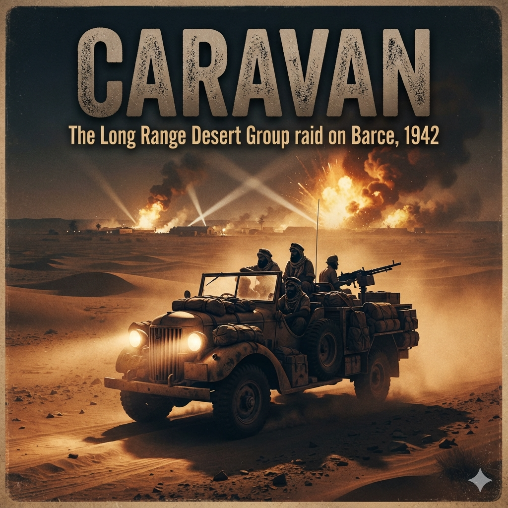

The date palms of the Faiyum Oasis offered shade, but no coolness. The air sitting over the irrigation ditches was thick with the reek of stagnant water, donkey dung, and green, rotting vegetation. Less than half a mile to the west, the green broke against the desert with the finality of a sea cliff: a wall of yellow-white limestone glare where the Libyan Desert began its two-thousand-mile roll across North Africa.
Under the thatched reed awnings of the Long Range Desert Group’s base depot, the sound was not military in the spit-and-polish sense of Cairo or Alexandria. It was the sound of a heavy machine shop. Spanners clattered against cast iron; pneumatic tyre pumps hissed; files rasped against the welded steel pedestals of machine-gun mounts.
Major John Richard Easonsmith stood over a trestle table made of rough-sawn pine planks. He was thirty-three, a Coldstream Guardsman who looked less like a soldier of the King’s household and more like a surveyor who had spent too many years under bad skies. His skin was burnt the colour of teak, peeling at the cheekbones, his eyes pale and framed by deep squint-lines. Across the table lay three War Office maps of Cyrenaica. Most of the sheets were blank paper tinted pale yellow, marked at broad intervals with the candid admission: Relief Undetermined.
To his right stood Captain Alastair Timpson of the Scots Guards, commander of G1 Patrol. Timpson was tall, aristocratic in bearing, his khaki drill shirt dark with sweat patches beneath the armpits. Opposite him sat Captain Nicholas Wilder of the New Zealand Armoured Corps, commanding T1 Patrol. Wilder was a sheep farmer from Hawke's Bay: square-jawed, quiet, his fingers perpetually stained with engine oil and black distributor grease.
Between them sat a short, round-shouldered man with a dark, trimmed beard, wearing a battered service dress cap without a badge. Major Vladimir Peniakoff—known universally across the Middle East as "Popski"—had a cigarette drooping from his mouth, squinting through the blue smoke.
Easonsmith tapped the map with a brass divider. The sharp steel point rested precisely over a tiny black circle tucked into the green arc of the Jebel Akhdar, just twelve miles from the Mediterranean coast: El Marj. Barce.
"Seven hundred miles behind Rommel’s front line at El Alamein," Easonsmith said. His voice was level, entirely devoid of drama. "From where we are standing, it is eleven hundred and fifty-five miles of driving to reach the start line."
Wilder leaned down, his eyes measuring the blank space between Kufra, the Kalansho, and the northern plateau. "That’s across the Great Sand Sea, Jake. Then around the southern lip of the Jebel."
"All of it," Easonsmith said. "We go out through Ain Dalla, plunge straight into the Sand Sea, skirt south of the Italian air patrols, and come up from behind the mountain through the bush. We hit Barce at midnight on the thirteenth."
"Who else is moving?" Timpson asked.
"Everyone," Easonsmith replied. He traced three other lines across Egypt and Libya. "Middle East Headquarters calls the whole show Operation Postscript. John Haselden is taking a commando force in captured trucks right down the main road into Tobruk—Operation Agreement. David Stirling and the SAS are hitting Benghazi—Operation Bigamy. The Sudan Defence Force is coming up from the south to seize the Jalo oasis—Operation Nicety. And Caravan belongs to us."
"We are the only ones going into Barce?" Wilder asked.
"Two patrols. Your Kiwis and Alastair's Guards. Forty-seven men, all told. Twelve thirty-hundredweight Chevrolets, five jeeps." Easonsmith looked at Peniakoff. "Vladimir is coming with us, along with two of his Senussi scouts from the Libyan Arab Force. They know the Jebel. Once we get into the green country, they will walk in ahead of us in native dress to see what the Italians have parked on the field."
Peniakoff gave a faint, philosophical nod, tapping ash onto the dirt floor. "The Senussi report that Barce is quiet. The Italians think they are in Rome. They have their officers' club, their railway, their repair depots. It is an administrative centre and an airfield for thirty or forty machines—bombers and reconnaissance. They do not look behind them. They look only toward Egypt."
"They will look behind them after the thirteenth," Timpson remarked dryly.
"That," said Easonsmith, "is the entire point of the exercise. Cairo wants Rommel looking over his shoulder at his supply dumps while Montgomery gets the Eighth Army ready at Alamein. If we burn their aircraft on the ground at Campo V, they cannot fly reconnaissance over Haselden at Tobruk."
He pushed his brass dividers into the softwood table. "No wireless traffic until zero hour. If a truck breaks down in the dunes, we strip it and burn it. If a man breaks a leg, we set it on the tailgate. We do not stop. We move out at first light on the first of September."
Outside the reed shelter, the lines of vehicles stretched through the dust of the palm grove.
These were not standard army lorries. They were Canadian Chevrolet 1533X2 30-cwt trucks, specifically modified for the LRDG by the workshops at Abbassia. Every unnecessary ounce of dead weight had been cut away with oxyacetylene torches: doors removed, windscreens stripped off to eliminate sun-glint that could betray them to an Italian Savoia-Marchetti bomber ten miles off, canvas canopies discarded.
Along the running boards were welded heavy angle-iron brackets holding two-gallon water cans and steel sand channels. A tall brass condenser can was piped directly to the radiator cap of each vehicle; when the cooling water boiled in the heat of the dunes, the steam would bubble into the condenser, turn back to liquid, and drain back into the engine block instead of vanishing into the dry Saharan air.
Beside Tutira III, his patrol commander’s truck, Captain Wilder stood watching his fitters mount a captured Italian weapon onto the flatbed.
"Mind the traverse, David," Wilder said, speaking to Corporal David Poihipi Warbrick.
Warbrick, a broad-shouldered Māori with grease up to his elbows, hauled on the barrel of a 20mm Breda Model 35 anti-aircraft cannon. The weapon had been salvaged from a knocked-out Italian colonial outpost near Kufra. Warbrick’s men had welded a heavy steel pedestal directly through the truck’s timber decking into the chassis rails.
"She clears the cab by two inches, Captain," Warbrick grunted, running the Breda through its 360-degree arc. The heavy mechanical click of the traverse ratchet rang out across the sand. "If I have to depress the muzzle over the radiator, I'll take the driver's ears off."
"Then don't shoot over the radiator," Wilder said. "Check the ammunition feeds. We have only twelve boxes of twenty-millimetre high-explosive. Once those are gone, you're back to the Vickers."
A few yards away, the Guardsmen of G1 Patrol were working under the stern gaze of Sergeant Jack Dennis. Dennis was Coldstream to his bootlaces—tall, lean, his moustache clipped with ruler-straight precision despite the dust. He watched two young guardsmen manhandling wooden ammunition crates stamped with the broad arrow.
"Gently with those, lad," Dennis said, his voice flat with London authority. "Those are Lewes bombs. They aren't sacks of spuds."
The crates contained the devastating incendiary-explosive weapons designed by Jock Lewes of the SAS: a sticky, lethal compound of thermite, ammonal, and motor oil, packed into canvas socks with a detonator well. A man could run along a line of parked aircraft, slap one onto an engine cowling or wing root, squeeze a copper time-pencil to break the acid capsule inside, and have fifteen minutes to walk away before four thousand degrees of heat melted the aircraft's spar to slag.
In the shade of an ammunition truck, Dr. Richard Lawson, the patrol medical officer, was packing his medical panniers into the back of an unarmoured Willys jeep. He was a young captain in the Royal Army Medical Corps, quiet and methodical.
He repacked the cardboard boxes of morphine syrettes, rolling them in thick cotton wool so the vibration of the desert washboard would not crack the glass ampoules. Beside them went tins of sulfanilamide powder, rolls of shell dressings, rubber tourniquets, Thomas splints, and five gallons of distilled water marked strictly for medical administration.
Lawson looked up as Easonsmith walked the lines, checking tyre pressures with a brass gauge.
"How are the water bags, Doctor?" Easonsmith asked.
"Six pints per man per day allocated for the transit, Major," Lawson said. "Three for drinking, three for the cooks. If the heat goes above a hundred and ten in the dunes, I'll recommend we increase the drinking ration by a pint. If we don't, we'll have men delirious with heatstroke before we ever see the Jebel."
"They'll get three pints," Easonsmith said quietly. "Every gallon of water we carry is a gallon of petrol we leave behind. The arithmetic is narrow, Richard. Very narrow."
By nightfall on 31 August, the base was silent.
Under the date palms, forty-seven men slept on canvas bedrolls laid directly in the sand beside their assigned wheels. There were no campfires. The only lights were the red, shielded glows of cigarettes cupped inside broad hands, and the hooded pencil-torch of the navigators checking their chronometers against the BBC time signals on the shortwave radio.
At 04:30 hours on the morning of 1 September 1942, the silence ended.
There was no bugle. Sergeant Dennis walked the Guards' line, tapping the soles of boots with the butt of an entrenching tool. In the New Zealand lines, Warbrick simply whistled twice between his teeth.
Men pulled on their heavy woollen sweaters against the biting, pre-dawn cold of the desert. Mess tins clinked. Hard tack biscuits were chewed with cold tinned bully beef, washed down with sweet, tepid tea brewed from the radiator overflow.
At 05:00, Wilder climbed into the passenger seat of Tutira III. Beside him, the driver pumped the accelerator twice and pulled the starter knob.
The six-cylinder Chevrolet engine coughed, settled, and then caught with a heavy, steady thrum. One by one, seventeen engines turned over in the darkness. The exhaust smoke hung low under the fronds of the palm trees, blue-grey and sharp with the scent of rich desert fuel.
Easonsmith took his place in the front of his command jeep. He looked back down the long line of low, stripped-down silhouettes. Every truck sat down on its heavy leaf springs under three tons of fuel, water, steel sand-channels, and ammunition.
Mounted on the dashboard of every lead vehicle was the brass disc of the Bagnold sun-compass, its vertical shadow-pin pointing silently toward the west.
Easonsmith raised his right arm, held it high for five seconds in the graying gloom, and dropped it forward.
"Roll out," he said.
The column lurched into gear. The heavy tread of the low-pressure sand tyres crunched into the crust of the desert. They moved out from beneath the canopy of palms, leaving the green water of the Nile behind, and drove straight into the open, yellow waste.
The hard limestone pavement (serir) lasted until the afternoon of 2 September. Then, fifty miles west of the desolate, salt-crusted spring at Ain Dalla, the world tilted upward and turned pure yellow.
It was the eastern frontier of the Great Sand Sea: a landlocked ocean of dunes eighty thousand square miles in extent, running from the Mediterranean escarpment south to the jagged black spurs of the Gilf Kebir. These were not gentle ripples. They were immense, parallel ranges of seif dunes—long, razor-backed sand-mountains standing three to four hundred feet high, separated by "streets" of corrugated, flint-strewn gravel a mile or two wide.
The column halted at the base of the first rampart. The heat radiating off the yellow slopes struck the open cabs like the open door of a baker's oven. The ambient air was 114 degrees in the shade; on the sunlit metal floorboards over the Chevrolet gearboxes, grease was bubbling.
Major Easonsmith stepped down from his jeep, his boots sinking to the ankle in sand as fine as flour. Behind him, Captain Wilder cut the engine of Tutira III. The sudden silence was vast and absolute, punctuated only by the metallic ticking of seventeen cooling exhaust manifolds and the rhythmic gloop-hiss of steam bubbling into the condenser cans on the running boards.
Wilder took off his grease-stained cap, wiping a forearm across his forehead. His face was white with a paste of sweat and powdered quartz.
"Slipfaces are to the east, Jake," Wilder said, squinting up at the dune’s knife-edge crest three hundred feet above. "We're going into the wind. We'll have the gentle slope on the climb, but the drop on the far side will be sixty degrees of dead fall."
"Then we climb on the diagonal," Easonsmith said. He turned to G1’s commander. "Alastair, tell your drivers: low ratio, second gear, foot to the floorboards. Once a truck starts up the slope, she doesn't lift off the throttle for man nor beast. If a man hesitates, he'll dig himself down to the axles before he can touch the clutch."
Timpson nodded. "Tyre pressures?"
"Drop them to eight pounds," Wilder advised. "If we leave ten in them, they'll act like pizza wheels in this muck."
Down the line, guardsmen and New Zealanders were already kneeling in the boiling dust with brass deflator gauges, hissing air out of the massive 10.50x16 sand tyres until the rubber bellied outward into wide, flat saucers. It was an agonizing calculation: at eight pounds of pressure, the tyres spread their weight like snowshoes over the powdery drift, but if a driver struck a submerged lump of limestone at speed, the rim would bite through the inner tube like a guillotine.
Easonsmith’s command jeep went first, its four-wheel-drive gear whining shrilly. It tacked across the face of the yellow giant like a yacht beating into a gale, throwing twin plumes of pale spray sixty feet behind its rear wheels. It reached the knife-edge crest, paused for a fraction of a second against the cobalt sky, and dipped out of sight.
"Right," Wilder shouted, stepping onto the running board of Tutira III. "Take her up, David!"
Corporal David Warbrick shoved the gear lever hard into compound low, revved the six-cylinder motor until the fan screamed, and dropped the clutch.
The three-ton load settled violently onto its rear springs. The heavy Chevrolet hit the incline. The engine note deepened into a guttural, roaring groan as the momentum died against the soft sand. The truck slowed: twenty miles an hour, fifteen, ten. The wheels churned, throwing up a dense rooster-tail of grit that coated the gunners on the rear deck until their eyes were red-rimmed slits.
"Keep her straight, David!" Wilder yelled over the engine scream. "Don't let the tail slide!"
Ten yards from the summit, the sand turned from wind-packed crust into fesh-fesh—talcum-powder drift. The Chevrolet’s speedometer needle wavered. The rear wheels lost their grip, digging twin trenches into the face. The chassis frame bottomed out on the dune crest with a dull, heavy thump of timber and iron.
The engine stalled.
Instantly, the men on the flatbed were over the side. They didn't wait for orders. Trooper Frank Jopling and two New Zealand gunners unpinned the five-foot steel sand channels from the brackets above the rear mudguards. The steel was so hot from the midday sun that it blistered bare palms through canvas work gloves.
"Get the shovels into the belly!" Jopling shouted, his voice hoarse with sand.
They fell to their knees in the blistering drift, scooping the sand out from beneath the front axle with their hands and short-handled entrenching tools. Warbrick rammed the steel channels under the leading edges of the front tyres, wedging them tight against the rubber.
Behind them, down the long slope of the dune, four more Chevrolets were bellied down, their crews already digging like terriers.
"Stand clear!" Warbrick yelled, climbing back into the cab.
He hit the starter. The engine roared. The clutch bit, the tyres grabbed the perforated holes of the steel channels with a high-pitched metallic screech, and Tutira III lunged forward over the lip of the ridge. The sand channels were spit out behind like rifle bullets, tumbling fifty feet down the slope.
At the crest, Wilder looked over.
The drop on the western side was terrifying. The wind had carved the lee side into a sheer slipface of soft, uncompacted sand that fell away at nearly forty-five degrees into the flat corridor below. If a truck went down straight, it would slide on its belly like a sledge; if it turned sideways by five degrees, it would roll end-over-end to the bottom.
"Straight down the fall line, David," Wilder said quietly. "No brakes. Use the engine. Touch the brakes and the back end will overtake the front."
Warbrick didn't answer. He gripped the heavy steering wheel with both hands, squared the truck’s nose perpendicular to the drop, and eased the front wheels over the lip.
The Chevrolet went over. For two breathless seconds, gravity took the three-ton vehicle. Sand rose like water over the front bumper, burying the headlights. The rear wheels were completely locked by the engine’s compression, acting as skids. The truck tobogganed down the slipface in a vast yellow wave, finally leveling out on the hard gravel floor of the "street" three hundred feet below with a shudder that rattled the teeth in the men’s jaws.
Warbrick spat a mouthful of yellow sand onto the floorboards. "One," he said.
Wilder looked ahead through the heat shimmer. In front of them, stretching west to the horizon as far as the eye could see, stood another seventy rows of identical dunes.
By 14:00 hours on 3 September, the heat had reached its zenith.
The convoy had covered barely twenty-two miles in eight hours of continuous digging, hauling, and slipface sledging. The engines were drinking water faster than petrol. Every radiator overflowed continuously into the condensation cans, the rubber hoses swelling and softening under steam pressure.
In the passenger seat of his jeep, Dr. Richard Lawson called a halt.
He had spotted a young Guardsman in the back of an ammunition lorry who had dropped his shovel and was staring blindly at the white sky, his mouth slack, his face flushed an unnatural, mottled scarlet.
Lawson climbed up beside him, pressing fingers to the lad’s carotid artery. The pulse was racing at one hundred and sixty beats a minute; his skin was bone-dry, the sweat glands completely exhausted.
"Heat hyperpyrexia," Lawson said to Sergeant Dennis, who was standing below with his sleeves rolled up, watching grimly. "His internal temperature is over a hundred and five. If we keep him in the sun, his brain will cook."
"Can we spare the water to wet him down, Doctor?" Dennis asked.
"No," Lawson said flatly. "We can't spare a cup. Get him under the truck’s shadow. Lay him on the canvas. Dennis, take his boots off."
Lawson pulled a bottle of salt tablets and a canteen of lukewarm, rust-tinted water from his medical pannier. He forced the water down the soldier’s throat a swallow at a time, then stood over the man with an empty cardboard ration lid, fanning the hot air across his bare torso until the skin began to cool by evaporation.
"He walks no more today," Lawson told Easonsmith, who had walked back down the column. "Put him in the jeep next to me. The vibration will be terrible, but at least he won't be lifting forty-pound sand channels."
Easonsmith looked at the sky. The brass sun-compass on the jeep's dash showed the shadow lengthening toward the east.
"We stop digging at seventeen hundred," Easonsmith told his patrol leaders. "We rest the engines until the sand cools. Sand packs tighter when the frost hits it. We'll make better speed by starlight."
Night fell on the Sand Sea like an iron curtain.
Within two hours of sunset, the temperature plunged fifty degrees, dropping from 110 degrees to a shivering 45. The men threw off their sweat-soaked shirts and pulled on heavy thick-knit wool sweaters and sheepskin-lined desert coats.
Without the sun, the Bagnold compasses were useless. The column halted in a wide gravel depression between two immense dunes.
Trooper Davis, the navigator, set up his three-legged brass theodolite in the freezing gravel fifty yards away from the trucks, well clear of any magnetic attraction from the Bredas and chassis iron. With a hooded pen-torch between his teeth, he took sights on Polaris and Arcturus, checking the results against the ticking chronometer and the nautical almanac balanced on his knee.
Easonsmith walked over, his breath pluming white in the starlight.
"Where are we, Davis?"
"Twenty-eight degrees, twenty-two minutes North; twenty-six degrees, fourteen minutes East, sir," Davis whispered, his fingers stiff with cold as he turned the brass micrometer screw. "We’ve drifted four miles south of the track. The drift on the slipfaces pushed us sideways."
"Bring us back three points to the north-west," Easonsmith ordered. "Howard’s Cairn is supposed to be forty miles ahead. If we miss Hunter’s fuel trucks, Caravan dies right here in the sand."
At 21:00 hours, they moved out again into the frozen blackness.
Without headlights, the drivers navigated by the faint silhouette of the vehicle ahead. The sand, chilled by the night air, had crusted over; the tyres did not sink, and the engines ran cool and sweet in the dense night atmosphere. They crossed corridor after corridor, the sheer walls of the dunes rising on either side like black cathedrals blocking out the stars.
It was 02:30 hours on the morning of 4 September when Wilder suddenly raised his hand from the cab of Tutira III.
Two miles ahead, in the dead centre of an immense, flat gravel pan, two enormous, unnatural shapes stood silhouetted against the southern sky. They were massive, square, and black—far too large to be limestone outcrops, their sharp, geometric lines cutting clean through the natural curve of the desert.
Wilder reached down and switched on his dashboard pencil-torch, clicking the beam three times into the darkness.
Across the salt pan, two miles away, a single red light flicked on in the night, answered with three steady flashes, and died.
The two Mack trucks of the LRDG Heavy Section stood like grounded merchantmen in a sea of grey silt. They were ten-ton, six-wheeled commercial diesels, their massive flatbeds piled eight feet high with wooden packing cases, oil drums, and hundreds of square tins lashed down beneath sun-bleached tarpaulins.
Beside them, a conical pile of rough limestone boulders rose five feet out of the sand: Howard’s Cairn. Built two years earlier by an LRDG patrol as an artificial landmark in the blank expanse between Ain Dalla and Kufra, the stones were weathered brown by wind-blown silica, their eastern faces scored by the endless abrasions of the desert.
Captain Hunter stepped down from the running board of the lead Mack, a mug of black tea in his hand. He was wearing grease-stiffened khaki shorts, sandals cut from discarded aircraft tyres, and a tattered shepherd’s smock against the pre-dawn wind.
"You're four hours late, Jake," Hunter said, offering the steaming mug to Easonsmith as the Major swung down from his jeep.
"We had fifty slipfaces between here and Ain Dalla," Easonsmith said, taking the tea. The enamel rim was hot against his chapped lips. "The sand is as soft as powdered chalk. Wilder bellied down four times before midnight."
Hunter looked down the line of seventeen approaching vehicles. Their engines were idling in a low, uneven chorus, radiator fans blowing waves of hot, oily air across the sand. "Well, you're here. We’ve been sitting on this cairn for forty-eight hours listening to the khamsin rattle the canvas. I thought maybe the Italians had picked you up from the air."
"Not yet," Easonsmith replied. "Let’s get the fuel decanted before the sun gets up. Once the heat hits eighty, these wretched tins will blow their seams."
The "tins" were the standard British Army four-gallon petrol containers—the infamous, universally cursed "flimsies." Made of thin sheet-iron with soldered seams, they had not been designed for the violent, shuddering motion of the desert. In an open truck bed bouncing over corrugations, the tins rubbed against one another until the metal wore through like paper, or the soldered corners split under the internal pressure of expanding fuel, spilling precious 70-octane petrol across the floorboards.
"All hands to the Macks!" Sergeant Jack Dennis’s voice cracked across the camp like a whip. "Guards on the port side, New Zealanders to starboard. Get your funnels out. Every drop that hits the dirt comes out of your own rations!"
The men fell to work with mechanical urgency.
The heavy tarpaulins were stripped from the Macks, releasing a choking wave of diesel and petrol fumes that stung the eyes. The transfer was brutal, filthy labor. Two men stood on the high deck of each Mack, heaving the heavy four-gallon tins down to pairs of men on the gravel below.
Trooper Frank Jopling knelt on the flatbed of a New Zealand Chevrolet, holding a wide galvanized funnel lined with chamois leather over the brass filler neck of the truck’s auxiliary fuel tank.
"Pour slowly, mate!" Jopling shouted to Gunner Sanders, who was tipping a tin over the funnel. "If you rush it, the chamois blocks with silt and splashes your trousers!"
The clear, pungent fuel gurgled through the leather filter. The chamois was essential; even fresh from the supply depots, British army fuel was contaminated with fine quartz dust and rust flakes that would instantly choke the delicate jets of a Chevrolet’s Carter carburettor. Within ten minutes, every man was soaked to the elbows in petrol. The liquid evaporated almost instantly in the dry morning air, leaving their skin bone-white, raw, and burning as if dipped in lye.
"Check the tins before you rack them!" Wilder shouted, walking the line with a wooden mallet. "If a seam is sweating, don't lash it. Tap the solder flat or dump the fuel into an open drum. I won't have three tons of explosive vapour riding behind my gunners."
Beside Tutira III, Corporal David Warbrick was bent double over the truck’s rear axle with a two-foot spanner. The constant twisting of the Sand Sea dunes had stretched the heavy steel U-bolts that clamped the leaf springs to the axle casing.
"How are they, David?" Wilder asked, pausing beside him.
"Stretched half an inch, Captain," Warbrick grunted, throwing his whole weight against the spanner until the rusty nut groaned and turned. "Two more dunes like yesterday and the whole spring pack would have walked off the axle. These Canadian Chevvies are tough as fencing wire, but three tons of kit is more than the engineers in Oshawa ever planned for."
"Tighten every spring on every truck," Wilder said. "Check the steering drop-arms, too. We’ve got another hundred miles of dunes before we hit the gravel flats."
By 09:00 hours, the sun had cleared the horizon and the heat began its rapid, suffocating climb.
The Heavy Section’s two Macks had been completely stripped of their cargo: three thousand gallons of petrol in flimsies, six hundred gallons of drinking water in heavy steel drums, eight hundred rounds of 20mm high-explosive shells, and forty wooden crates of iron rations—hard biscuits, tins of "M&V" (meat and vegetable stew), and corner-tinned bully beef.
The combat trucks now sat down hard on their springs, their tyres bulging despite the rising internal pressure of the heat. Every Chevrolet carried nearly three hundred gallons of fuel lashed in timber racks along its deck, turning each vehicle into a rolling bomb. A single stray incendiary bullet would incinerate a truck and its four-man crew in less than twenty seconds.
Captain Hunter climbed back into the cab of his lead Mack. His diesel engine coughed to life with a heavy, rhythmic thrumming that sounded radically different from the sharp bark of the petrol Chevrolets.
"This is the end of the line for us, Jake," Hunter shouted down through the cab window, leaning out over the high steel door. "We turn back for Ain Dalla. From here on out, you're off the edge of the world. No supply, no recovery. If you get stuck, you walk."
Easonsmith stepped up onto the Mack’s running board, shaking Hunter’s grease-blackened hand. "If Haselden does his job at Tobruk and Stirling gets into Benghazi, we’ll see you back at Cairo by the end of the month."
"Don't lose your hair, Jake," Hunter said with a grim smile. "Give the Italians hell."
The two massive ten-tonners swung around in a wide, wallowing circle, their heavy dual rear tyres churning deep ruts into the silt of the pan. They headed east, shrinking steadily into the shimmering heat haze until they were nothing more than two dancing black specks on the rim of the horizon, leaving the forty-seven men and seventeen vehicles utterly alone in the dead heart of the Sand Sea.
Easonsmith didn't watch them go. He turned back to the assembled patrols.
"We have two hours before the midday sun makes the sand impassable," he said, consulting his watch. "The next belt is the big stuff—seif dunes running north to south, three hundred feet high, with broken razorbacks on the crests. We need a path through the crests before we commit the heavy trucks."
Captain Alastair Timpson stepped forward, his bush shirt open to the chest, a pair of dusty aviator goggles pushed up onto his service dress cap. "I'll take the lead jeep and reconnoitre the ridge, Jake. If we can find a saddle through the first three ranges, the Chevrolets won't have to sledge every slipface."
"Take Wann with you," Easonsmith agreed. "Stay on the sun-compass. Don't go more than five miles ahead of the column. If the crests are knife-edged, find a gap and wait for us."
"Understood," Timpson said.
He walked over to his G1 reconnaissance jeep—a stripped-down, lightweight Willys with no doors, no windscreen, and a single Vickers ‘K’ gun mounted on a swivel by the passenger seat. At the wheel sat Guardsman Thomas Wann, a quiet, capable Scots Guardsman who had driven Timpson through two earlier deep-desert patrols.
Wann pressed the starter. The four-cylinder Willys engine whined and caught with an eager, high-pitched purr.
Timpson climbed into the passenger seat, resting his hand on the compass bracket. "Right, Wann," he said, pointing toward a towering, yellow-crested ridge of sand three miles to the west that shimmered violently in the midday sun. "Let's go find a way through the giants."
The jeep lunged forward, throwing two sharp roostertails of fine silica, and sped away from the supply dump, heading directly for the steep, razorback dune line.
At noon in the Great Sand Sea, shadow ceases to exist.
The sun hung dead overhead, a white incandescent flare that stripped every contour, depression, and crest from the landscape. To the human eye, the terrain ahead was flattened into an unbroken, featureless sheet of blinding yellow silk. A man could not tell whether a pale patch twenty yards in front of his bumper was a level pan of hard gravel or a sixty-foot void.
Captain Alastair Timpson leaned forward in the passenger seat of his reconnaissance jeep, squinting through goggles smeared with engine grease and dried sweat. The air roaring into his face felt like the blast from a furnace flue.
"Ease off a touch, Wann," Timpson shouted over the shrill whine of the transfer case. "We’re coming up on the ridge."
Guardsman Thomas Wann had his foot pressed hard into the throttle, his knuckles white on the thin bakelite steering wheel. He was fighting the deep, powdery drift of the long upward slope, the jeep’s four 7.00x16 tyres churning violently as they clawed toward what appeared to be a broad, gentle plateau of pale sand fifty yards ahead.
"She’s pulling hard, sir!" Wann shouted back. "If I lift off, we’ll belly out!"
"Hold her straight, then!"
It was an optical illusion born of vertical light and powdered quartz. The gentle plateau was not a plateau at all. It was the razor-sharp cornice of a seif dune—a wind-sculpted knife-edge where the western face fell away in a near-vertical, sixty-foot precipice of completely unsupported, aerated slip-sand.
The front wheels of the Willys crossed the lip at twenty-five miles an hour.
Instantly, the steering went completely slack. Wann spun the wheel, but there was nothing beneath the tyres except empty air. For half a heartbeat, the jeep hung suspended against the white sky, its engine screaming as the drive wheels spun free of resistance.
Then the nose dropped.
The vehicle plunged down the sheer forty-five-degree slipface like a dropped anvil. The front bumper buried itself three feet into the soft powdery drift at the bottom of the first shelf. The momentum of the heavy cast-iron engine block and the fuel tanks swung the rear of the vehicle straight up into the air in a violent end-over-end somersault.
There was a sickening, metallic crunch of crumpling steel, the sharp snap of the windscreen frame shearing off, and the heavy, muffled thud of twelve hundredweight of inverted machinery slamming down into the sand, directly over the seats.
A mile behind, the main column had just crested the preceding ridge.
Major Easonsmith, standing upright in the passenger footwell of his command jeep, lowered his binoculars. His hand dropped instantly to his driver's shoulder.
"Down there," Easonsmith said, his voice dropping an octave. "Timpson’s tracks end at the crest. There’s no dust coming up from the far side."
The column surged forward, the heavy Chevrolets groaning in low gear as they scrambled up to the ridge. At the summit, Wilder slammed on the brakes of Tutira III, throwing a shower of sand across the lip.
Sixty feet below, at the base of the sheer drop, the reconnaissance jeep lay upside down, its four wheels pointing toward the sun. A thin wisp of steam curled from its ruptured radiator, and the pungent reek of spilled 70-octane fuel was already drifting up on the midday thermals.
Beside the overturned chassis, two crumpled figures in khaki drill lay motionless in the drift.
"Doctor!" Easonsmith shouted, already vaulting over the tailgate of his vehicle.
Dr. Richard Lawson was already running. He had grabbed his surgical haversack from the back of his medical jeep before the wheels had even stopped rolling. He threw himself over the edge of the slipface, sliding down the thirty-degree slope of shifting sand on his boots, his heels digging deep furrows until he hit the bottom in a rolling cloud of dust.
Sergeant Jack Dennis and Wilder followed right behind him, skidding down the sand on their bellies.
"Mind the petrol!" Dennis barked, coughing on the fumes. "The exhaust is red hot! Don't let it touch the spillage!"
Lawson dropped to his knees beside Guardsman Wann. The driver was lying face down, half-buried in the sand where he had been thrown clear of the steering column. His face was gray-white, his lips blue, his breathing shallow, rapid, and ragged.
"Wann," Lawson said firmly, placing two fingers on the side of his neck. "Can you hear me?"
Wann’s eyelids fluttered open, glassy and unfocused. "Sir... my legs. Can't feel... my boots."
Lawson’s hands moved with practiced, disciplined precision. He did not attempt to roll the man over. Instead, his fingers worked under the torn shirt, running lightly but firmly down the line of Wann’s thoracic and lumbar spine.
Between the tenth and twelfth vertebrae, his fingertips felt the unnatural, sickening step in the bone—a pronounced displacement, accompanied by the mushy swelling of deep internal hemorrhage.
"Do not move, Thomas," Lawson ordered quietly, his voice perfectly steady, hiding the dread in his chest. "Keep your head absolutely still."
Lawson reached into his haversack, pulled a metal pin from his lapel, and pricked the bare skin of Wann’s calf, then the sole of his bootless foot.
"Feel that?"
"Feel what, sir?" Wann whispered.
Lawson pulled his hand away. The spinal cord was crushed. The man was paralyzed from the waist down, and his blood pressure was plunging into the lethal spiral of neurogenic shock.
"Dennis!" Lawson snapped over his shoulder. "Bring two rifles and a blanket down here immediately! Rig a sun shelter over him! If he lies in this sun for twenty minutes, his kidneys will fail!"
Lawson scrambled three yards through the drift to where Captain Timpson lay sprawled against the crumpled side of the jeep. Timpson was semi-conscious, moaning in a low, guttural monotone, his limbs twitching in irregular spasms.
The left side of his head was covered in a thick crust of blood and yellow sand. Lawson took a pair of surgical shears and cut away the blood-soaked khaki cap.
Beneath the hair, above the left temple, the temporal bone was visibly caved in—a depressed skull fracture three inches across. Dark, venous blood was oozing steadily from his left ear canal, pooling in the sand beneath his jaw.
"Alastair," Lawson said loudly, shining a small pencil-torch into Timpson’s eyes.
The left pupil was blown wide, fully dilated and completely unresponsive to light. The right was pinned down to the size of a needle head.
"Intracranial pressure," Lawson muttered under his breath. "The hematoma is expanding into the brain stem."
Wilder and Easonsmith slid down the slope, coming to a halt beside him. Both men took one look at Timpson’s asymmetrical eyes and the sickening angle of Wann’s back, and went rigid.
"Can they travel?" Easonsmith asked quietly.
Lawson looked up at his commanding officer. His face was covered in a paste of sweat and powdered dust, his eyes hard and clinical.
"If you put Wann in the back of a Chevrolet and drive him over fifty miles of washboard corrugations, the shattered bone will saw right through the rest of his spinal cord. He will die of internal hemorrhage before sunset. If you move Timpson, the bleeding inside his skull will compress his brain until his respiratory centre stops."
"Can you operate here?" Wilder asked.
"In an open sand dune in a hundred-and-ten-degree heat with a khamsin blowing?" Lawson’s voice had an edge of bitter fury. "I have five scalpel blades and four bottles of sulfanilamide powder, Nick. Timpson needs a neurosurgeon to trepan that skull and lift the bone off the dura. Wann needs a specialist orthopaedic unit. They have forty-eight hours, maybe less."
Sergeant Dennis and two guardsmen scrambled down the dune carrying a heavy woollen blanket. Working with infinite care, never shifting Wann’s spine by an inch, they drove two Lee-Enfield rifles bayonet-first into the sand and lashed the corners of the blanket to the butt-plates, creating a low, taut canopy that cast a rectangle of deep blue shadow over the two dying men.
Lawson knelt beneath the canopy, preparing a syrette of morphine for Timpson’s convulsions and setting up a plasma infusion for Wann, hanging the glass flask from a rifle sling.
Easonsmith stood outside the shelter, looking at the sheer wall of yellow sand rising behind them, and then west into the empty, sun-scourged waste toward Barce.
The arithmetic of Operation Caravan was unraveling. They were six days out from Cairo, hundreds of miles inside enemy-dominated territory, moving under total, ironclad radio silence. A single high-frequency transmission would light up the Axis direction-finding stations at Tobruk, Benghazi, and Derna, alerting Rommel that an Allied strike force was loose in the southern desert.
Wilder stepped up beside Easonsmith. "If we leave them, Jake, they're dead. If we carry them, they're dead."
Easonsmith didn't flinch. His jaw was set like a block of granite.
"We don't leave our people to die in the sand," Easonsmith said.
He turned toward the crest where the radio truck sat idling.
"Dennis!" Easonsmith shouted up the slope. "Unpack the long-range wireless! Unlash the aerial masts! Break the cipher seals!"
He looked back down at Dr. Lawson, who was crouching over Wann with his fingers on the driver's failing pulse.
"We are breaking radio silence," Easonsmith said. "We’re calling Cairo for a plane."
The answer from Cairo came through the headphones at 01:15 hours on 6 September, faint and whistling beneath the crackle of Saharan static.
The wireless operator, huddled in the cramped footwell of the signals truck under a blanket to shield the glowing dial, scribbled pencil groups onto a message pad. His fingers were stiff with cold. He passed the decrypt to Easonsmith, who read it under the hooded beam of an inspection torch:
HQ MEF TO CARAVAN — HUDSON DESPATCHED DAWN SEVEN SEPT. SELECT LANDING GROUND MINIMUM TWELVE HUNDRED YARDS FIRM SURFACE. MARK THRESHOLD WITH SMOKE. GODSPEED.
Easonsmith handed the slip to Wilder. "We have twenty-eight hours to find a piece of the Sahara flat enough to land an eight-ton twin-engine bomber without snapping its undercarriage."
At first light on 6 September, Wilder took Tutira III north along the dune corridor. Four miles from the crash site, the sea of sand broke against a geological anomaly: a sunken mud pan (playa), three miles long and a mile wide, where the rainwater of some prehistoric epoch had evaporated to leave a floor of sun-baked grey clay, cross-hatched with millions of hairline fissures.
Wilder didn't guess. He tested the surface with the brutal physics of a three-ton lorry.
He took the Chevrolet out onto the pan, accelerating in fourth gear until the speedometer needle touched forty-five miles an hour. Beside him, Warbrick leaned out of the open doorway, his eyes fixed on the rear tyres.
"Is the crust holding?" Wilder shouted over the wind.
"Not a crack, Captain!" Warbrick yelled back, watching the twin tracks left by the low-pressure tyres. "She’s biting less than a quarter-inch! It’s as hard as concrete pavement!"
Wilder spun the wheel in a wide skid, testing the shear strength of the crust under lateral load. The tyres shrieked against the dried clay, but the surface did not yield.
"It’ll take the Hudson," Wilder said, cutting the ignition. "Now we have to get Wann and Timpson across four miles of dunes without finishing what the roll began."
The transport of the casualties was an exercise in pure agony.
Lawson refused to allow Guardsman Wann to be loaded onto a vehicle until a rigid frame could be constructed. Using two long-handled entrenching shovels, three wooden duckboards stripped from the floor of the ammunition truck, and four woollen service blankets, Lawson and Dennis fashioned a makeshift fracture frame.
Wann was bound to the boards from his armpits to his ankles with canvas rifle slings, ensuring his shattered thoracic spine could not twist by a fraction of a millimetre.
Six men carried Wann up the forty-foot slipface on foot, sinking to their knees in the powdery sand at every step, their teeth gritted as they fought to keep the stretcher level. Every slight jolt elicited a low, involuntary whimper from Wann, though the driver tried desperately to bite his lip until the blood ran.
Timpson was carried up second. The Scots Guards captain had ceased groaning; he lay in a deep, stertorous coma, the left side of his face swollen purple, a steady trickle of straw-coloured cerebrospinal fluid now mixing with the dried blood around his left ear.
They laid both men across the flatbed of Dr. Lawson’s truck, resting on three feet of folded canvas and empty sandbags to absorb the road shock.
For four miles, the Chevrolet crawled through the dune corridor at two miles an hour. Lawson walked beside the truck bed the entire way, his hand resting continuously on Wann’s wrist, shouting warnings to the driver at every ripple and flint stone.
By sunset on 6 September, the two wounded men were laid out under a canvas awning on the northern lip of the mud pan.
Night came, bitterly cold. Lawson knelt beside them in the dark, checking pulses every twenty minutes, wrapping them in every spare greatcoat the patrol possessed. Timpson began to vomit in his unconscious state—the lethal hallmark of rising brain pressure. Lawson turned the captain’s head with infinite care, clearing the airway with two fingers wrapped in a gauze square to keep him from drowning in his own secretions.
"Hold on, Alastair," Lawson whispered into the darkness, his breath freezing in the air. "Just hold on till morning."
At 06:15 hours on 7 September, the eastern horizon turned from charcoal to blood-red.
Out of the yellow dawn, far to the north-east, came a sound that did not belong to the desert: the deep, synchronized drone of two Wright Cyclone radial engines.
"Stand to with the smoke!" Dennis barked.
A mile down the pan, two guardsmen pulled the pins on orange smoke canisters. Plumes of thick, bright ochre smoke billowed across the grey clay, flattening out along the surface to indicate the wind direction to the sky.
The aircraft appeared as a dark speck against the morning sun, dropping rapidly out of the clouds. It was an RAF Lockheed Hudson—a twin-tailed, deep-bellied reconnaissance bomber with roundels painted on the wings. It banked steeply over the dunes, its twin propellers catching the sunrise in twin discs of flashing light, before dropping its landing flaps and turning into the wind.
"He’s coming in fast," Wilder said, shielding his eyes. "That bird needs a lot of room."
The Hudson cleared the edge of the sand at ninety miles an hour.
Its heavy rubber tyres kissed the clay with two sharp puffs of blue smoke. The suspension groaned under the eight-ton impact, but the prehistoric crust held firm. The pilot slammed on the brakes; the tail wheel dropped, and the bomber rolled to a halt two hundred yards from the parked Chevrolets, turning in a tight circle to keep its nose pointed toward the open flat for takeoff.
The pilot did not cut the engines. In the deep desert, an engine that was shut down might never start again. The twin Cyclone radials kept up a deafening, rhythmic bellow, the prop-wash whipping up a hurricane of stinging salt-dust that flattened the desert scrub.
The metal door on the port side of the fuselage swung open. A flight lieutenant wearing an RAF sheepskin jacket jumped down into the dust, squinting through the sand-blast.
"Are they alive?" the pilot yelled over the engine roar.
"Barely!" Lawson shouted back.
"Get them in! Fast! I have twenty minutes of fuel to get off this deck and make Kufra!"
The Guardsmen moved with disciplined fury. Dennis, Warbrick, and four New Zealanders hauled Wann’s rigid duckboard stretcher up to the high cargo door. The RAF crewman reached down from the fuselage, bracing his boots against the bulkhead, and dragged the stretcher inward onto the metal floor.
Timpson went up next. As they hoisted the unconscious captain through the narrow hatch, his limp hand brushed against Dennis’s shoulder.
Dennis gripped the captain’s hand for one brief, fierce second, then stepped back down into the dust.
The RAF flight lieutenant paused at the door, looking down at Major Easonsmith. "Who’s taking his patrol?"
Easonsmith didn't look at the plane. He turned and looked directly at Sergeant Jack Dennis.
Dennis was standing at the edge of the prop-wash, his rifle slung, his battle dress covered in clay dust, his moustache stiff with grit. He was a non-commissioned officer, but he had seven years in the Coldstream Guards and two deep-desert patrols behind him.
"Dennis," Easonsmith said, his voice cutting clean through the din of the radial engines.
"Sir?"
"Captain Timpson is off the board. You have G1 Patrol. You take them onto the airfield at Barce. Understood?"
Dennis didn't blink. He came to attention in the swirling dust, bringing his hand up in a crisp, razor-sharp Guards salute that would have passed muster on the parade ground at Wellington Barracks.
"Sir. I have G1."
"Get your men to their trucks," Easonsmith ordered.
The RAF officer slammed the Hudson’s heavy oval door and dog-latched the handle from the inside.
The twin engines roared to a frantic, ear-splitting scream. The Hudson began its run, gathering speed across the grey clay pan, its tail coming up at four hundred yards. At six hundred yards, the wheels lifted clean of the desert floor. The bomber climbed sharply, banking to the south-east toward the oasis of Kufra, its silver silhouette shrinking against the morning sky until the drone of its engines faded back into the absolute silence of the Sahara.
On the salt pan below, forty-five men stood watching.
They were down one officer, down one reconnaissance jeep, and two hundred miles deeper into enemy territory than when they started. And somewhere to the north, Axis wireless stations were already puzzling over the brief, high-frequency transmission that had brought the RAF out of the sky.
Dennis turned his back on the empty horizon. He spat a mouthful of grey clay into the dust and looked at the men of G1 Patrol.
"You heard the Major," Dennis said, his voice dropping into the familiar parade-ground rasp. "Mount up. We've got five hundred miles of stone between us and the Italians."
The last yellow wall of the Great Sand Sea fell behind them by midday on 8 September.
The sand did not fade gradually. It ended with an abrupt geological boundary, spilling out onto the vast, flat sheet of the Kalansho serir—hundreds of miles of desolate, wind-scoured gravel stretching west into central Libya.
To a man bone-weary of shoveling sand channels, the flat stone looked inviting. It was an illusion.
Beneath the thin layer of yellow dust lay a pavement of dark, heat-fractured chert and black basalt flint, chipped by millions of years of extreme temperature shifts into jagged shards with edges like broken bottle glass.
Easonsmith raised his arm from the lead jeep. The seventeen vehicles slowed, their engines idling in a long, ragged file.
"Air up!" Sergeant Dennis’s voice boomed down the line of Guardsmen. "Every wheel! Don't let a tyre touch the flint until you have twenty-two pounds in it!"
At eight pounds of pressure, the low-pressure sand tyres were soft enough to climb dunes, but on the flint pavement, the sharp stones would pinch the deflated sidewalls against the steel wheel rims, cutting the inner tubes to ribbons.
The men fell out into the midday heat, dragging brass hand pumps and flexible rubber hoses from the tool lockers. Two of the Chevrolets had mechanical engine-driven compressors, but the rest had to be pumped by hand.
It was backbreaking, lung-searing work. In an ambient temperature of 108 degrees, men worked the pump handles in pairs, taking fifty strokes each before trading off, their shirts soaked through with sweat that evaporated before it could roll down their bellies.
Corporal David Warbrick knelt beside the rear dual wheel of Tutira III, checking the valve with a pocket gauge. The brass cylinder was almost too hot to touch.
"Twenty-one," Warbrick grunted, wiping a forearm across his dust-caked face. "Good enough. If we put thirty in them, the heat will expand the air and blow the valves by two o'clock."
Wilder walked around the front of the truck, tapping the heavy tread with the toe of his desert boot. "Tell the drivers to keep thirty yards between vehicles, David. On this flint, the tyres throw stones like shrapnel. A two-inch flake will shatter a headlamp or punch a hole in an oil sump."
By 13:00 hours, the convoy was moving across the flint plain at twenty-five miles an hour.
The sound was deafening. Unlike the muffled, silent cushion of the Sand Sea, the serir was an acoustic nightmare. The tyres whipped up thousands of razor-sharp pebbles that drummed against the sheet-metal undersides of the cabs, floorboards, and timber truck beds in an unbroken, deafening roar.
Every ten miles, the sharp crack of a blowout cut through the clatter.
BANG.
A Chevrolet two vehicles behind Wilder suddenly slewed sideways, a plume of grey smoke puffing from its left rear wheel. The tyre had been sliced across the tread by a six-inch plate of black chert.
The truck ground to a halt. Before the dust cloud had even cleared, the four-man crew was off the flatbed.
Trooper Frank Jopling grabbed a five-ton ratchet jack, ramming a block of wood under the baseplate so it would not sink into the soft silt beneath the stones. He jacked the rear axle up while two gunners attacked the wheel nuts with a six-foot extension bar, throwing their combined body weight onto the steel lever to break the rusted threads.
"Tube's torn open three inches!" one of the gunners shouted, hauling the heavy, shredded rubber free from the split-rim.
Jopling pulled a brass vulcanizing clamp from his kit. He rasped the raw edges of the puncture with a wire brush, smeared it with pungent rubber cement, and clamped a round vulcanizing patch over the tear. He lit the small sulfur-cake disc on top of the clamp with a match; it burned with a pale blue, foul-smelling flame, cooking the patch directly into the raw tyre tube.
Ten minutes later, the tyre was bolted back on, pumped to twenty pounds, and the Chevrolet was roaring to catch the convoy.
Across the open plain, this ritual was repeated eleven times before nightfall.
At 17:30 hours, Easonsmith called a halt for the evening water ration.
Dr. Richard Lawson stood beside the water truck, a brass dipstick in his hand. He lowered it into the main seventy-gallon steel tank, then checked the wet mark against the calibration notches.
His face was grim.
"We lost sixteen gallons to evaporation and leaky petcocks since we left Howard's Cairn," Lawson told Easonsmith, who was checking his watch beside the cab. "The vibration on this flint is shaking the brass taps loose."
"What's the ration?" Easonsmith asked.
"Three pints per man per day," Lawson said flatly. "No more. That includes tea water. If a man drinks his pint in the morning, he gets nothing until sunset, no matter how much his tongue swells."
Sergeant Dennis formed the Guards up in single file. Each man stepped forward holding his grey enamel mess tin or an empty bully-beef tin. Lawson watched like a hawk as the quartermaster measured out one pint of lukewarm, rust-tinted water into each cup.
The water was repulsive. Kept in galvanized steel drums that had bounced over twelve hundred miles of desert under a boiling sun, it tasted of zinc, iron rust, and the oily rubber seals of the filler caps.
The men drank it in tiny, deliberate sips, rolling the liquid around their teeth to wet their cracked gums before swallowing.
Trooper Frank Jopling sat on the running board of Tutira III, his mess tin balanced between his knees. His lips were split in two places, dark scabs forming where the dry wind had peeled the skin.
"Tastes like warm engine wash," Jopling muttered, staring into the yellowish fluid.
"Shut your face and drink it," Warbrick said from beneath the truck, where he was checking the differential oil. "By next week, you'll be praying for water that tastes half as sweet as that."
Lawson walked the perimeter, observing the men closely. Desert dehydration was insidious. It did not begin with weakness; it began with irritability, subtle changes in judgment, and a darkening of the urine to the colour of mahogany. He saw two young gunners squatting behind a wheel, their faces flushed, their eyes sunk deep into their sockets.
"How much did you drink today, lad?" Lawson asked one of them, resting a hand on his shoulder.
"Just the tea, sir," the boy replied, looking down. "Tried to save the half-pint for tomorrow."
"Drink it now," Lawson commanded, his tone leaving no room for argument. "You don't save water inside an aluminum tin. You save it inside your bloodstream. If your kidneys shut down, I can't restart them with a spanner."
Night came to the Kalansho, but there was no relief from the pace.
Because of the thirty-six hours lost during the evacuation of Timpson and Wann, Caravan was running severely behind schedule. To hit Barce simultaneously with the attacks on Tobruk and Benghazi on the night of 13 September, they had to cover another three hundred miles in less than four days.
"We run through the dark," Easonsmith told the patrol leaders. "Dead reckoning. No lights."
Trooper Davis sat in the front passenger seat of the navigation truck, a shaded red torch clutched between his knees. On his lap lay the dead-reckoning log book. Every fifteen minutes, he noted the vehicle’s speedometer reading, calculated the estimated percentage of wheel slip against the loose gravel, and checked the heading against his magnetic compass, which was suspended in a heavy gimbals mount away from the truck's engine block.
"Bearing three-three-zero," Davis called out to his driver through the open cab. "Hold her steady on three-three-zero."
The trucks moved like ghosts through the starlit void. Without headlights, the drivers leaned far over their steering wheels, their eyes straining through the gloom to catch the faint white patch of painted canvas on the rear axle of the vehicle thirty yards ahead.
The clatter of flint under the tyres settled into an unbroken, rhythmic drone that lulled the senses into a dangerous stupor. Drivers slapped their own faces with sand-covered hands to stay awake; gunners stood behind their twin Vickers ‘K’ mounts with the freezing night wind whipping through their woollen smocks, searching the black horizon for the flash of an enemy patrol’s exhaust.
At 04:30 hours on the morning of 10 September, the flat, horizontal line of the Kalansho plain suddenly broke.
The lead jeep slowed, its tyres dropping into a dry watercourse filled with white, chalky boulders.
Easonsmith stepped out into the pre-dawn gloom. He walked forward fifty yards, shining his hooded torch onto the ground.
The black flint was gone. In its place were terraces of pale, weathered limestone, rising upward in broad, stepped benches toward the north.
Between the rocks, small, stunted clumps of dry scrub—desert camel-thorn and bitter artemisia—clung to the shallow soil. When Easonsmith crushed a twig between his fingers, the smell was not the dry, dead dust of the Sahara.
It was sharp, resinous, and green.
Wilder walked up beside him, his breath misting faintly in the cold. He looked up at the rising ground, where the black mass of the northern horizon blocked out the lower stars.
"That's the first step," Wilder said quietly. "The southern spurs of the Jebel."
Easonsmith nodded, tossing the crushed twig into the darkness. "We're off the desert floor, Nick. From here on out, we're in Rommel's backyard."
The hard basalt plains of the Kalansho gave way to rising ground on 10 September.
For forty-eight hours, the seventeen vehicles climbed through a broken, stepped wilderness of limestone wadis and dry watercourses, steering north-west to skirt the southern flank of Cyrenaica. The desert did not yield easily. The sand was replaced by powdery red clay and shelves of brittle limestone that jarred the Chevrolets’ steering assemblies. Radiators, choked with seeds from dry camel-thorn, hissed continuously into their condensation cans as the six-cylinder engines ground forward in low gear.
The open, limitless horizon of the Sahara was gone. In its place rose the southern slopes of the Jebel Akhdar—the Green Mountain—a massive limestone plateau jutting out into the Mediterranean. As the column gained altitude, the hot desert wind grew cooler, scented with dry juniper and mastic scrub.
Operational security became absolute. With every mile north, they were driving deeper into the operational radius of Axis air patrols.
On 11 September, high against the white northern sky, a twin-engine Caproni Ca.311 reconnaissance aircraft droned across the hills. The LRDG lookouts blew their whistles; the trucks swung off the tracks into the scrub, and the men threw camouflage nets over the cabs, crouching motionless in the dust.
What the patrol did not know—and would not discover until after the operation was over—was that the observer in that lone Caproni had caught the faint, lingering smear of their dust trail on the southern flats. The aircraft wheeled, circled low over an Italian colonial cavalry post at Maraua, and dropped a weighted message canister warning of unidentified motor transport in the southern Jebel. The message was logged and passed to local commands, but because deep-desert raids had never penetrated this far north, the Italian garrison commander at Barce treated the warning as a routine report of stray Arab camel traffic. The LRDG believed they were unseen; in reality, the first seed of their pursuit had already been planted.
Throughout 12 September, Easonsmith pushed the column through the labyrinth of ravines. They ran by dead reckoning and sun-compass during the day, and by creeping through the scrub in low-ratio gears after sunset, the drivers straining to follow the faint outline of the vehicle ahead.
At 04:30 hours on the morning of 13 September 1942—the eleventh day since leaving Faiyum—the convoy ground to a halt.
They had covered 1,155 miles.
Before them, rising out of the predawn mist, lay a prominent limestone hill crowned by a thick belt of gnarled cedar, wild olive, and evergreen oak. It was the staging ground: two miles from the Arab hamlet of Benia, and just fifteen miles south of Barce.
"Kill the engines," Easonsmith passed the order down the line.
The trucks were reversed under the dense canopy of trees. Men used axes and machetes to lop fresh boughs of evergreen, weaving them into the mesh of the camouflage nets until every vehicle was swallowed by the foliage. By the time the morning sun crested the hills, the sixteen vehicles were completely invisible from the air.
Sixteen vehicles, not seventeen.
Before the column pulled into the woods at Benia, Easonsmith had executed a calculated insurance policy. Two miles to the south, tucked into a concealed rocky fold, the patrol had detached one single Chevrolet 30-cwt truck at a designated emergency rendezvous code-named "G5".
Trooper Frank Jopling and two guardsmen had worked in the pre-dawn darkness, packing the rear of the G5 truck with twenty cases of tinned rations, eighty gallons of drinking water in sealed steel drums, and sixty gallons of petrol in tins. They draped it in heavy netting, anchored the corners with boulders, and walked away on foot, carefully brushing out their footprints with cut branches.
If Barce became a trap—if the airfield guns tore the assault force to pieces and the main transport was destroyed—G5 was the only lifeline the forty-seven men would have between the Mediterranean and the waterless waste of the Kalansho.
By 07:00 hours, the camp under the Benia trees was silent.
The men sat in the leaf mould beneath the boughs, cleaning machine-gun bolts, counting ammunition pans, and inspecting the copper time-pencils of their Lewes bombs. Cold bully beef was eaten straight from the tin; water was sipped by the half-pint.
In the shade of an ancient oak, Easonsmith, Wilder, Dennis, and Major Peniakoff sat with their backs to the trunk, watching the northern track. The approach march was finished.
Barce was fifteen miles over the crest, and zero hour was eight hours away.
The sun rose through the branches of the evergreen oaks on the hill near Benia, dappling the camouflaged bonnets of the sixteen trucks with pale circles of light.
There was no time for rest. Zero hour was less than eighteen hours away.
At 08:00 hours, Major Easonsmith took his command jeep out from beneath the canopy of wild olive. Beside him sat Major Vladimir Peniakoff, wearing his unbadged service dress cap and a heavy wool sweater against the morning chill. In the narrow rear seat crouched the two Senussi soldiers of the Libyan Arab Force, stripped of their British uniforms and wrapped in the coarse, unbleached wool folds of civilian jerds.
They drove north along the floor of a dry limestone watercourse, keeping off the main tracks, until the terrain opened out three kilometres south of the Barce outskirts.
Here, behind a low limestone ridge overlooking the olive groves that fringed the plain, Easonsmith cut the engine. The two Senussi dropped over the side into the dust. Peniakoff spoke to them in low, measured Arabic, giving them their instructions: they were to enter the outskirts on foot, contact local Arab friends living near the edge of the town, verify the disposition of the Italian garrison, and ascertain whether the alert from the Caproni's message canister two days earlier had set the garrison on edge.
The two tribesmen nodded once, gathered their robes around their shoulders, and slipped into the scrub. Easonsmith turned the jeep and drove straight back to the trees at Benia to oversee the arming of the patrols.
Under the oaks, the morning was consumed by the deadly chemistry of sabotage.
The LRDG was not an infantry battalion; it was an engine of destruction designed to deliver maximum violence in the shortest possible time. Under the supervision of Sergeant Jack Dennis and Corporal David Warbrick, the men sat in circles on empty petrol cases, preparing their charges.
Wooden crates of Lewes bombs were unsealed with screwdrivers.
Each bomb was a canvas sock packed with a four-pound mixture of ammonal, thermite, and motor oil—a lethal concoction designed to adhere to metal surfaces, detonate with explosive force, and then burn at four thousand degrees Fahrenheit, melting cylinder blocks and wing spars into liquid slag.
Trooper Frank Jopling knelt beside a crate, holding a brass-cased time-pencil detonator between his thumb and forefinger.
"Check the colour bands," Dennis warned, his voice low and firm. Dennis walked the perimeter of the trees, his eyes checking every man's hands. "Red band gives you thirty minutes at seventy degrees. Yellow gives you twenty. But in this heat, the acid eats through the copper wire twice as fast. You crack the glass vial inside, you check the striker spring, and you get off the aircraft wing. If a pencil hangs fire, you do not go back for it."
Jopling carefully inserted the copper pencils into the detonator wells of the canvas bombs, crimping the metal collars with pliers. Beside him, Gunner Sanders was linking .303 ammunition for the twin Vickers ‘K’ guns, pressing every fifth round home as a bright green tracer, followed by an armour-piercing solid.
Down by the medical truck, Dr. Richard Lawson was laying out his canvas field panniers on the tailboard. He checked his inventory of morphine syrettes, Thomas splints, and rolls of sterile lint. If the raid went as planned, they would hit and run in the dark; if it failed, he was forty-five miles from the sea and five hundred miles from the nearest British surgeon, with forty-five men who had no armor between their flesh and Italian machine guns except thirty-hundredweight sheet steel.
At 14:00 hours, a low whistle sounded from the northern edge of the woods.
Peniakoff walked into the clearing, followed by the two Senussi scouts. They had completed their reconnaissance without incident.
Conferring quietly with Easonsmith and Wilder, Peniakoff delivered their findings: the town was calm. Sunday routine was in full effect. The message dropped by the reconnaissance plane had caused no general alarm; the garrison assumed it was nomadic Bedouin traffic in the southern wadis. Italian personnel were strolling through the town in light uniforms. The aircraft at Campo V were lined up in the open along the tarmac apron, uncamouflaged and largely unguarded.
Easonsmith looked at his watch. It was ten minutes to three.
"Assemble the patrols," Easonsmith told Dennis. "All officers and truck commanders."
At 15:00 hours, forty men gathered in a tight semi-circle under the branches of an ancient cedar.
They sat on their haunches, rifles between their knees, their faces smeared with engine grease and sand, looking up at the pine-plank trestle table Easonsmith had set up over two petrol tins. Across it lay the large-scale RAF reconnaissance map of Barce, pinned flat with four limestone pebbles.
Easonsmith did not raise his voice. He spoke with the quiet, matter-of-fact authority of a Guards adjutant delivering routine orders.
"Zero hour is midnight," Easonsmith began, tapping the map with a dry twig. "We have fifteen miles of approach down the main road. The Italians do not observe a blackout. We will drive onto the highway with our headlamps fully lit. We act like an Italian supply convoy until we hit the gate."
He swept the twig across the southern outskirts of the town.
"The force will divide into two distinct combat elements. Captain Wilder will take T1 Patrol directly into Campo V airfield. That is the primary objective of Operation Caravan. Nick, your task is the total annihilation of every airframe on the field. Use the Bredas and the Vickers to sweep the dispersal bays, then put men onto the wings with Lewes bombs. You stay on that tarmac until the aircraft are burning."
Wilder nodded slowly, his eyes fixed on the outline of the runways. "Understood."
"While T1 strikes the airfield," Easonsmith continued, turning to the Coldstream sergeant, "G1 Patrol, under Sergeant Dennis, will strike the town."
Dennis stood rigid, his chin up, listening with absolute intensity.
"Dennis, your objective is to create a complete diversion and keep the garrison occupied," Easonsmith said. "You will strike the main Italian barracks at Camp Luigi Razza—Campo Maddalena—three kilometres south-west of the town. Rake the dormitory blocks with the twenty-millimetre Breda and your machine guns. Hit the motor transport park. Major Peniakoff and I will take the jeeps to the railway station south of the town, destroy the locomotives, and cut the telegraph hub."
Easonsmith looked around the ring of bearded, sun-blackened faces.
"The barracks garrison has elements of the 17th Machine Gun Battalion, the Polizia dell'Africa Italiana, and five L3 light tankettes of the 10th Tank Company. If those tankettes deploy onto the airfield, T1 will be caught in the open on the concrete. Dennis, you must make so much noise at the barracks that the Italians believe the entire Eighth Army is coming down the street. Keep them pinned there."
"We'll pin them, sir," Dennis said without hesitation.
"Once the airfield is ablaze, I will fire a green Verey flare from the crossroads south of the camp," Easonsmith said. "That is the signal to disengage. Every vehicle breaks for the south. We muster at the track junction, re-form column, and run for the G5 cache before dawn."
Easonsmith straightened up, throwing the twig into the scrub.
"Eat what you have left in your tins. Rest your eyes. We move out the moment the sun touches the hills."
The sun dipped behind the limestone crests of the Jebel at 18:30 hours, draining the warmth from the woods at Benia. Under the oak canopy, the forty men prepared for the march in silence.
Faces and bare forearms were blackened with grease scraped from wheel hubs and soot from exhaust pipes. Woollen caps were pulled down low over brows. Every man checked the action of his weapon: working the bolts of Lee-Enfields, tapping the bottom of Thompson drum magazines to ensure the rounds were seated, and checking that bayonets were clicked home tight in their scabbards so they would not rattle against gunwales.
Corporal Merlyn Craw, a burly, heavily bearded New Zealander in T1 Patrol, moved down the line with the final ration: cold tinned stew and hard biscuits.
He handed a portion to Trooper Derek "Snow" Parker. Parker looked at Craw’s great bush of black beard, silhouetted against the fading amber sky, and gave a dry, nervous chuckle.
"You know, Merlyn," Parker said quietly, "you look just like Moses standing there."
Craw grinned, teeth gleaming white through his soot-blackened beard. "Eat your stew, Snow. This could well be your last supper."
At 19:30 hours, the engines turned over.
There were no lights. In compound low gear, the column wound out from beneath the trees, snaking north down the rough goat tracks toward the Barce plain. The smell of wild juniper was replaced by the familiar stench of hot 70-octane fuel and scorched exhaust manifolds.
Seven miles south-east of Barce, near the isolated track junction at Sidi Selim, the column halted in the scrub.
Here, Captain Wilder detached T1 Patrol’s dedicated wireless truck. Under orders from Easonsmith, the radio vehicle pulled off the track and reversed deep into a hollow bordered by dense lentisc bushes.
The signals crew had a dual assignment: first, to serve as the emergency forward rally point where survivors would regroup if the patrols were scattered during the withdrawal; second, to maintain a continuous, silent listening watch on the high-frequency band for encrypted wireless traffic from Lieutenant Colonel David Stirling’s SAS force, which was scheduled to hit Benghazi that same night in Operation Bigamy.
The remaining vehicles pushed forward, descending the northern slopes toward the paved road network.
The first contact came at 22:30 hours on the approach road near Sidi Raui, just two miles outside the town boundary.
Out of the darkness ahead, the pale whitewashed walls of an Italian colonial police checkpoint rose beside the track. A red-and-white counterweighted wooden barrier pole was down across the road, illuminated by the yellow glow of a single kerosene lantern hanging from the guardhouse eaves.
Wilder’s lead Chevrolet slowed, its low-pressure tyres rolling silently through the dust.
A colonial Tripolitanian sentry, wrapped in a dark greatcoat with a Carcano carbine slung across his shoulder, stepped out from the porch, raising a hand to signal the vehicle to halt.
Before the sentry could speak, two New Zealanders vaulted over the truck’s low side panel. They hit the guard before he could unsling his rifle, driving him into the dirt with a gloved hand clamped hard across his mouth, stripping his weapon, and dragging him behind the masonry wall.
Suddenly, the screen door of the guardhouse swung open with a sharp clatter.
An Italian officer stepped onto the veranda, squinting into the gloom, a heavy Beretta automatic holstered at his hip. Seeing the low, bristling silhouettes of open lorries packed with bearded, blackened men, he reached for his holster.
A burst from a suppressed weapon ripped through the night air. The officer caught the rounds full in the chest, took two stumbling steps backward, and collapsed across the wooden steps.
"Grenades!" someone hissed.
Two Mills 36 grenades arced through the open door of the post, their safety levers pinging off the doorframe. A second later, the interior of the guardhouse erupted in a double blast of orange flame and shattered plaster. The remaining guards scrambled out the rear windows, fleeing into the darkness of the surrounding olive groves.
From the rear of the lead truck, a sapper leapt down with six-foot tree-pruning shears. With two quick, violent snaps, he severed the overhead telephone and telegraph cables running into the post, cutting the direct communication line to the Barce military exchange.
Then, disaster struck the column from behind.
In the confusion of the sudden halt, the New Zealand Breda gun truck, trailing close behind in the dust without brake lights, slammed violently into the rear of the vehicle ahead.
There was a sickening crunch of tearing sheet metal and the sharp hiss of boiling steam. The impact drove the heavy 20mm cannon forward on its mount and smashed the Chevrolet’s radiator core completely into the fan blades.
Warbrick jumped down, flashing a shielded pencil-torch into the engine bay. Green, boiling glycol and rusty water were pouring across the front axle.
"Radiator's crushed, Captain," Warbrick reported, his voice tight. "Fan's through the block. She’s dead."
Wilder didn't hesitate. "Strip her. Transfer the ammunition to Tutira. Smash the distributor and drop a thermite grenade into the cylinders."
Within four minutes, the machine-gun drums and ammunition boxes were heaved onto the other vehicles. The dead truck was shoved off the road into a ditch, its engine block destroyed, leaving T1 down one combat vehicle before a single shot had been fired at the airfield.
At 23:00 hours, the shortened column reached the junction of the main paved highway leading west directly into Barce.
Easonsmith pulled his command jeep onto the smooth, black tarmac. He reached down to the dashboard switch.
"Lights," he ordered.
The driver pulled the knob. The powerful headlamps cut through the darkness, casting two brilliant, piercing beams of white light down the empty road. Behind him, twelve trucks and jeeps snapped their headlights on in succession.
The bluff had begun.
To any sentry or aerial spotter in the hills, the column was no longer a stealthy raiding force. It was an Italian military convoy driving with peacetime confidence down the centre of the road.
Two miles west, the lights of an oncoming vehicle appeared around a long bend.
It was an Italian military supply lorry, its headlights dipped. The two convoys closed at a combined speed of fifty miles an hour. As the Italian lorry roared past, its cab filled with the warm Mediterranean draft, the Italian driver leaned out of his open window, grinned into the glare of the Chevrolet’s lamps, and waved a friendly hand into the night.
Major Jake Easonsmith, sitting upright in the open passenger seat of the lead jeep in a captured Italian coat, casually raised his left hand and waved back.
The asphalt of the main highway felt glassy and strange beneath the low-pressure tyres. After eleven days of wrenching suspension across basalt boulders and soft slipfaces, the fourteen surviving vehicles drifted smoothly westward at thirty-five miles an hour.
The headlights did their work.
Under the glare of sixteen full-beam headlamps, the column looked from a distance like an Italian motorized convoy running down the colonial highway between Derna and Barce. Along the verges, tall eucalyptus trees cast long, sweeping shadows across the tarmac. The night air was moist, smelling of the Mediterranean, which lay just twelve miles over the northern crest.
Two miles west of the junction, the road dipped into a shallow cutting where an Italian security picket was dug into the embankment.
Two sentries in grey-green tunics stood beside a wooden barrier box, their carbines slung. As the roar of the convoy’s six-cylinder engines approached, the men did not reach for their weapons. They stepped to the edge of the asphalt and blinked into the white headlights, shielding their eyes with raised palms. In the strict logic of garrison security, enemy raiders did not drive down paved imperial highways with thirty-thousand candlepower of unshielded light.
"Keep your eyes front," Wilder spoke softly to his gunner, standing behind the twin Vickers. "Don't let them see the beards."
The lead Chevrolet rolled past the sentries at twenty-five yards. The Italian soldiers saw only the broad radiators, the khaki hoods, and drivers sitting upright in captured greatcoats. Before they could notice the absence of doors or the dark silhouettes of heavy machine guns mounted on the timber trays, the convoy was past, leaving a cloud of hot exhaust and dust swirling in the ditch. The sentries stepped back to their shack, satisfied that the evening supply run was on time.
The bluff had held. Not a single shot had been fired; the alarm had not been raised.
At 23:50 hours, the convoy slowed to a crawl. Ahead, the road split into a wide, three-way intersection on the southern outskirts of Barce.
Easonsmith raised his left arm. The drivers cut their switches. Headlights snapped off in unison, plunging the column into the blue-grey gloom of a half-moon. The sudden silence was heavy, broken only by the tick of cooling cast iron and the distant, rhythmic thumping of a diesel generator running somewhere in the town.
Easonsmith stepped down from his jeep, motioning Wilder, Dennis, and Peniakoff to the rear of his vehicle. They spoke in low, flat murmurs over the luminous dial of Easonsmith’s wristwatch.
"Twenty-three fifty-five," Easonsmith said. "Zero hour is midnight. We have exactly two hours on the objective. At zero-two-hundred hours, I fire the green Verey flare from the southern road. If you are not off your targets by then, you will be caught on the tarmac by daylight."
He turned to Peniakoff.
"Vladimir. You stay here at the crossroads with the Guards' wireless truck and your Senussi. This junction is our only way out of the bowl. If the Italian mobile police or the garrison attempt to push out and seal this neck, you hold it open. If we lose this intersection, Caravan is finished."
"The road will stay open, Jake," Peniakoff said quietly, checking the cylinder of his revolver. "Nothing comes behind you."
Easonsmith turned to Sergeant Jack Dennis.
"Dennis. G1 has the town and the barracks at Camp Luigi Razza. It is three kilometres to the south-west. Rake the dormitory windows with your machine guns. Drop twenty-millimetre high-explosive through the roof. Major Peniakoff’s reports say the garrison has the 17th Machine Gun Battalion and elements of the 10th Light Tank Company stationed inside those walls. If those tankettes get out onto the open airfield, they will chew T1 to ribbons. You must keep them locked inside their gates."
"Understood, sir," Dennis said, his jaw rigid. "We'll kick the front door off."
"I will take the two HQ jeeps," Easonsmith added. "We will circulate through the streets, strike the railway station, cut the telegraph station, and hit any staff buildings we find. Keep their commanders from organizing a counter-attack."
He looked at Nick Wilder.
"Nick. Campo V is one mile down the left fork. Take T1 straight in. You know what to do."
"Burn everything with wings," Wilder replied.
"Two hours," Easonsmith repeated. "Good luck."
The men turned back to their vehicles. There was no shaking of hands.
Peniakoff and the signals Chevrolet rolled silently off the tarmac, tucking themselves into the deep shadows beneath a stand of roadside eucalyptus, their Vickers barrels traversing to cover the highway approaches.
To the right, Sergeant Dennis and the Guardsmen of G1 engaged their clutches, turning north-west toward the stone gates of Camp Luigi Razza.
Wilder climbed up onto the passenger seat of Tutira III, his hand resting on the breech of the twin Vickers ‘K’ mount. Beside him, Corporal David Warbrick eased the truck into second gear.
The five New Zealand trucks turned down the left fork, rolling silently through the dark toward the perimeter wire of Campo V.
The asphalt road to Campo V branched south-east, skirting a drainage ditch lined with tall, dry reeds.
Captain Nick Wilder’s force had been whittled down by the long trek and the road accident: one Willys jeep and four 30-cwt Chevrolet trucks. The vehicles moved in single file, spacing thirty yards apart, throttles eased back so the six-cylinder engines barely hummed above the rustle of the coastal wind.
In the open cab of Tutira III, Wilder leaned over the passenger door. Ahead, two hundred yards into the gloom, the dark silhouette of the airfield perimeter fence cut across the low scrub. A white wooden guard hut stood beside a pair of tall timber-and-wire gates barring the entrance.
Beside him, Corporal David Warbrick held the steering wheel with one hand, his right thumb hovering over the dashboard light toggle. On the rear tray, behind the twin-mounted Vickers ‘K’ guns, Trooper Derek Parker stood braced against the steel pedestal, the dual circular drums locked and cocked.
Fifty yards from the barrier, two shapes stepped out of the shadow of the guard hut.
They were Italian sentries in grey-green wool tunics and steel helmets, their Carcano rifles held across their chests. Seeing the low, dark shape of the approaching truck, one of them raised his hand, shouting a sharp challenge into the darkness:
"Chi va là?"
Parker didn't wait for an order. He depressed the thumb triggers of the twin Vickers.
The guns spat a hammer-stroke burst of .303 ball and tracer at a thousand rounds a minute. In the tight confines between the drainage ditch and the fence, the muzzle blast sounded like tearing canvas. The two sentries were lifted off their feet, thrown backward into the dry reeds beside the gatepost.
"Gate!" Wilder shouted, already moving.
Warbrick braked Tutira III to a dead halt three feet from the timber barrier. Wilder leapt down onto the road, his desert boots hitting the gravel, his Colt .45 drawn. He grabbed the crossbar. The gate was shut, but the chain was looped loose over a rusty spike—it was unlocked.
Wilder hauled the timber wing backward with a heave of his shoulders, kicking it wide against the fence.
"Drive through! Go!" he yelled, waving his arm.
Warbrick dropped the clutch. Tutira III lunged forward through the opening onto the tarmac apron of Campo V, the other three Chevrolets and the jeep roaring through behind in a tight line. Wilder caught the cab stanchion as the truck surged past and swung himself up into the passenger well in one fluid motion.
Directly inside the gate, fifty yards to their right, the patrol ran straight into their first target: a heavy Italian military fuel lorry and four-wheeled trailer parked beside the perimeter track. Lashed to the trailer deck in open wooden racks were fifty-two fifty-litre drums of high-octane aviation spirit.
Two Italian ground crewmen had just emerged from behind the tanker, buttoning their tunics, brought out into the open by the burst of gunfire at the gate.
"Light the bastard!" Warbrick yelled.
The twin Vickers and the rear Browning .50 from the second truck opened up together. The stream of armour-piercing incendiary rounds hammered into the thin sheet-iron of the fuel drums.
For a fraction of a second, there was only the metallic spang-spang of penetrating copper jackets. Then the entire trailer detonated.
A three-hundred-foot pillar of white-hot fire erupted into the Mediterranean night, accompanied by a concussion wave that shook the steering wheels in the drivers' grips. Flaming avgas splashed across the asphalt, turning the parked tanker and two adjacent supply shacks into an inferno.
The sudden brilliance was blinding. The half-moon vanished, replaced by the daylight glare of a colossal torch.
To their left, three Italian soldiers ran out of the airfield station guardhouse, hands clawing at holsters. From the flatbed of the third Chevrolet, Corporal Merlyn Craw pulled the pins on two Mills 36 grenades with his teeth and pitched them through the glass of the open station windows.
The interior of the building flashed orange twice, the detonations blowing the timber shutters and shattered glass out into the dust.
Wilder turned his back on the burning gatehouse and looked out across the airfield.
The roaring glare of the fuel tanker illuminated the vast, flat expanse of Campo V like a stadium. The Italians had deployed their perimeter infantry to the south, anticipating an infiltration on foot from the desert wadis; the paved tarmac apron was laid out completely naked.
Stretching away along the taxiways in neat, orderly rows stood more than thirty military aircraft: Cant Z.1007 Alcione three-engine bombers, twin-engine Caproni Ca.311 reconnaissance craft, and Fiat CR.42 Falco biplane fighters, sitting wingtip to wingtip on the grass.
Wilder pointed his arm down the taxiway.
"Single file!" he bellowed over the roar of the burning petrol tanker. "Line ahead! Shoot the engines!"
The column accelerated along the perimeter taxiway at twenty-five miles an hour, engines howling in second gear.
The burning fuel tanker behind them threw immense, dancing shadows across the concrete. Ahead, parked in wide semicircular dispersal bays revetted with earth banks, the Italian aircraft sat in two neat, symmetrical arcs: Cant Z.1007 Alcione three-engine bombers, twin-engine Caproni Ca.311s, and agile Fiat CR.42 biplane fighters, their propellers gleaming in the orange glare.
"Line ahead!" Wilder yelled, clinging to the cab stanchion of Tutira III. "Concentrate fire on the wing roots! Give them the incendiaries!"
Warbrick kept the Chevrolet thirty yards out from the nose of the first Cant bomber. The tri-motor was a massive wooden-framed aircraft, its three Piaggio radial engines cowl-to-cowl, fuel tanks nestled inside the wings.
Derek Parker leaned hard against the twin Vickers ‘K’ mount, his boots braced wide against the steel deck. He hauled the cocking levers back, aligned the bead sights with the port engine nacelle, and squeezed both butterfly triggers.
The twin barrels roared in a deafening, continuous rattle. A searing rope of green tracer and incendiary .303 ammunition poured directly into the radial engine. The rounds punched through the duralumin cowlings, shattering oil lines and tearing through the magnesium crankcase. Within three seconds, the wing root began to hiss, vomiting thick white smoke.
Then the aviation fuel caught.
A sheet of yellow fire rolled across the upper wing, spreading into the fabric and wooden framework of the fuselage. The heat was so sudden and intense that Warbrick had to squint against the blister of it as Tutira III swept past.
Behind them came the second Chevrolet, mounting a heavy .50 Browning. The massive half-inch rounds hammered into the fuselage of a neighboring Caproni, the heavy slugs tearing the aluminum skin like wet cardboard and exploding inside the radio compartment.
From the rear of the third truck, the captured 20mm Breda cannon opened up with a hollow, rhythmic thump-thump-thump.
The twenty-millimetre high-explosive shells detonated against the cockpit frames of a line of CR.42 fighters. Glass windscreens and instrument panels disintegrated into showers of sparkling shards. A stray shell found an oxygen bottle inside a fighter’s nose; the compressed gas ruptured with a sharp, ear-splitting crack, blowing the fighter’s radial engine clean off its bearer struts to land forty feet away on the tarmac.
"Next bay! Keep moving!" Wilder shouted. "Don't let the tail bunch up!"
The patrol swept around the curve of the apron like a carousel of fire, moving from one dispersal pen to the next. The New Zealanders fired with methodical, practiced precision. Gunners stripped empty pans from the Vickers, slammed fresh hundred-round drums down onto the feed blocks, and cocked them with the heels of their hands in a matter of seconds.
The empty brass cartridge cases did not fall to the ground; they bounced in thousands across the truck trays, filling the floorboards with a rolling carpet of hot metal that crunched under the men's boots.
Across the airfield, the garrison began to recover from the initial shock.
From the dark maw of the main maintenance hangars eight hundred yards away, Italian heavy machine-gun pits opened fire. Ropes of bright red tracer began to reach across the flat expanse of the runway, snapping through the air inches above the Chevrolets’ cabs.
CRACK-CRACK-CRACK.
A burst of Italian 8mm Breda rounds struck the metal side panel of Tutira III, punching a line of jagged holes through the steel just below Wilder’s hip. The impact sprayed hot metal flakes into the cab, one shard cutting a red furrow across Warbrick’s cheek.
Warbrick didn't flinch. He wiped the blood from his eye with the back of his greasy hand and kept his foot planted on the floorboard. "They’re waking up, Captain!"
"Ignore the hangars!" Wilder shouted back, leaning out to point down the line of parked aircraft. "Stick to the planes! They can’t fly hangars back to Egypt!"
In the fourth dispersal bay, two Cant bombers sat behind high sandbag walls. The fire from the moving trucks had peppered their fuselages, but their wing tanks had not ignited. The heavy timber airframes were smoking, but structurally intact.
Wilder looked back over the tailboard of Tutira III.
Through the smoke and flying brass, he saw Corporal Merlyn Craw on the tray of the trailing truck. Craw was already swinging his legs over the timber side, a canvas haversack of Lewes bombs slung over his shoulder, a Thompson submachine gun clutched in his right hand.
"Craw!" Wilder roared over the din of gunfire and roaring flames. "Take your team! Finish them on the ground!"
Corporal Merlyn Craw did not drop down to the concrete alone.
As the Chevrolet braked hard in the shadow of an earthen revetment, two gunners vaulted over the tailgate with him into the dust. Each man carried a heavy canvas haversack bulging with four-pound Lewes bombs, their pockets heavy with spare time-pencils, friction lighters, and loaded drum magazines for their Thompsons.
Above them, the night sky was crisscrossed with high-velocity tracer. Italian machine-gunners in the hangar sandbag redoubts had found the range, sweeping the open tarmac with long, grazing bursts of 8mm fire that ricocheted off the concrete apron in singing ricochets of orange sparks.
Craw ignored the fire. He sprinted toward the nearest Cant Z.1007 Alcione, ducking beneath the massive twin-rudder tailplane.
The bomber was immense, towering over them in the dark. Its wooden fuselage was already peppered with shrapnel, but the fuel in its wing tanks had failed to ignite. To destroy an airframe completely, bullets were rarely enough; an engine block had to be melted or the main spar snapped.
"Cover the revetment!" Craw yelled to the two troopers, his voice hoarse through the reek of burning fuel.
He slung his Thompson across his back, grabbed the trailing edge of the port wing, and hauled himself upward. His desert boots skidded on the smooth, doped fabric, slick with sprayed hydraulic fluid and condensed night dew. Craw threw his knee over the leading edge, scrambling onto the broad expanse of the mainplane directly between the fuselage and the inner radial engine.
He unzipped the canvas haversack. He pulled out a Lewes bomb—a sticky, heavy sausage of ammonal and thermite.
Kneeling on the curved wing while rifle bullets snapped through the fabric around him, Craw slapped the bomb flat across the duralumin engine cowling, right above the supercharger and fuel-injector lines. He slipped a brass-sleeved copper time-pencil into the detonator well.
With his thumb and index finger, he squeezed the soft copper tube until he felt the sharp, distinct snap of the glass ampoule breaking inside.
The acid was released. It would eat through a thin retaining wire over the next ten to fifteen minutes before releasing the spring-loaded striker into the percussion cap.
"One!" Craw muttered aloud.
He crawled along the spar toward the outer engine, dragging a second bomb from his bag.
Fifty yards away, near the mouth of the central hangar, three Italian mechanics and an armed sentry dashed from an open doorway, trying to reach a revetted Breda machine gun mounted on a concrete pillar.
From the tarmac below the wing, one of Craw’s troopers raised a .303 Lee-Enfield. Crack-crack-crack. The sentry went down on his knees, his rifle skittering across the oil-stained floor; the three mechanics threw their hands over their heads and dived behind a stack of wooden propeller crates.
Across the field, Wilder was keeping the trucks moving.
Tutira III and the remaining Chevrolets circled the dispersal bays at thirty yards’ distance, laying down continuous suppression fire to shield Craw’s demolition party. Derek Parker leaned into the twin Vickers ‘K’ mount, spraying the upper windows of the airfield administration building with sweeping bursts of green tracer, shattering the glass and keeping the Italian riflemen pinned to the floor.
Craw slid off the trailing edge of the bomber’s wing, dropping eight feet to the tarmac with a heavy grunt.
"Next bay! Move!"
They ran in a crouch through the smoke to a dispersal pen sheltering three Fiat CR.42 fighters. The biplanes sat frail and delicate behind their sandbag walls, their fabric-covered fuselages catching the red glow of the burning fuel bowsers.
Craw jammed a Lewes bomb directly behind the engine cylinder heads of the lead fighter, snapped the pencil, and moved to the next. The work was mechanical, fast, and stripped of panic: lay the charge, insert the pencil, break the glass, run.
Behind them, the first Cant bomber gave a low, dull whump.
It was not a shattering blast of high explosive. The Lewes bomb ignited with a blinding, incandescent glare of pure thermite heat—burning at over four thousand degrees Fahrenheit.
The duralumin engine cowl vaporized in a white-hot hiss. The magnesium crankcase of the Piaggio radial caught fire, burning with a ferocious, eye-searing brilliance that illuminated the underside of the hangar roofs. As the heat ate through the wing root, the aviation spirit inside the internal tanks boiled, expanded, and ruptured the spar.
A roaring geyser of fuel and molten aluminum blew thirty feet into the air, collapsing the port wing to the concrete like a folding card table.
Craw reached the edge of the third dispersal pen, his face black with soot, his eyebrows singed by the sudden wave of radiant heat.
"That's seven!" he shouted, turning back toward the approaching headlights of Wilder’s command truck.
Before he could reach the running board, the deep, hollow thump of heavy artillery and rapid automatic cannon fire echoed across the plain from the south-west—not from the airfield, but from the direction of Barce town itself.
Wilder hauled Craw up onto the tailgate of Tutira III by his webbing.
"Dennis is in," Wilder said, looking toward the southern skyline, where red and yellow tracers were stitching the clouds over the town. "The Guards have hit the barracks."
While Wilder’s New Zealanders were breaking the gate at Campo V, Sergeant Jack Dennis brought G1 Patrol down the western spur toward the stone gates of Camp Luigi Razza.
The barracks was an imposing Italian colonial garrison complex: high perimeter walls of mortared limestone, whitewashed two-storey dormitory blocks with tiled roofs and wooden-shuttered balconies, an expansive inner parade ground, and a motor transport park packed with heavy supply lorries.
Dennis sat in the front passenger well of the lead Chevrolet, his service cap pulled down hard against the rush of the night wind, an unlit Player’s cigarette clamped between his teeth. Behind him on the open flatbed stood the Coldstream gunners, bracing their boots against ammunition boxes as the lorry swung around the final perimeter bend.
"Drivers, kill the headlamps," Dennis ordered over his shoulder.
The lights clicked off. The three heavy trucks glided into the shadow of the main gates at twenty miles an hour.
Fifty yards from the entrance, an Italian sentry in a grey greatcoat stepped out from an arched masonry pillbox, raising his Carcano carbine. Before he could challenge, the lead Chevrolet’s radiator bumper struck the chained wooden gates. The heavy timbers snapped with the sound of a dry branch, the iron hinges tearing free from the stone gateposts in a shower of lime and mortar.
The truck rolled onto the gravel apron of the main parade square.
"Engage!" Dennis roared.
The patrol opened fire with every barrel. The noise in the enclosed stone courtyard was instantaneous and deafening.
On the flatbed of the second truck, the 20mm Breda gunner slammed his foot onto the firing pedal. The automatic cannon barked in rapid, rhythmic thuds. Armor-piercing high-explosive shells hammered directly into the second-storey dormitory windows of the main barracks block.
The masonry crumbled under the barrage. Wooden shutters disintegrated into flying matchwood; plaster dust billowed out of the blown-out casements in dense grey clouds, illuminated from behind by the incandescent flashes of detonating shells.
Twin Vickers ‘K’ guns joined in, sweeping the long line of balconies with a continuous, cross-stitched pattern of red and green tracers. At point-blank range of forty yards, the high-rate-of-fire gas-operated guns chewed through stone balustrades and brickwork, sending jagged chips of stone whining across the parade ground like shrapnel.
Inside the dormitories, the Italian 17th Machine Gun Battalion was caught in its bunks.
Screams, frantic shouts in Italian, and the shrill, piping trill of an officer’s whistle echoed out of the shattered upper floor. Italian soldiers, bare-chested or in their underwear, stumbled to the windows, frantically returning fire with Carcano carbines and Breda Model 30 light machine guns.
Rifle rounds cracked through the trucks’ canvas cab roofs. A burst of 6.5mm fire slammed into the steel side-shield of the 20mm cannon, throwing off a shower of sparks that singed the Coldstream gunner’s eyebrows.
The gunner didn't duck. He traversed the heavy barrel ten degrees to the left, pumping five rounds of high explosive straight through the balcony doorway where the Italian muzzle flashes were stabbing the dark. The wall blew outward, throwing the gun crew and their weapon down onto the gravel below.
"Motor pool!" Dennis yelled, pointing with his swagger stick toward a long line of parked Lancia and Fiat three-ton lorries parked along the eastern wall. "Rake the petrol tanks!"
A third Chevrolet swung wide across the gravel, its .50 Browning opening up with slow, bone-shaking thuds. The heavy half-inch slugs punched through the thin sheet-metal of the parked Italian lorries. Fuel tanks ruptured, spraying raw petrol across the dry ground. Within seconds, tracer fire ignited the fuel into a towering sheet of orange flame that crept rapidly from vehicle to vehicle, cooking off tires in muffled, heavy thuds.
Dennis stood upright in the open cab, entirely exposed, checking his pocket watch by the light of the burning lorries.
It was 00:30 hours.
The diversion was working with absolute precision. The Italians were entirely convinced that a full motorized commando battalion had broken through the perimeter. From deep within the barracks complex came the frantic revving of lorry engines and the shrill clatter of tankette tracks turning over inside the motor sheds, but not a single Italian soldier or vehicle had moved out through the gate toward Campo V. The garrison was entirely transfixed by the storm of steel engulfing their own front yard.
"Keep the fire up!" Dennis shouted, grabbing a fresh drum for the Vickers. "Burn everything that moves!"
Through the smoke and shattered masonry of the main gate, two open Willys jeeps suddenly tore across the tarmac junction outside, moving fast.
In the passenger seat of the lead jeep sat Major Jake Easonsmith, his Thompson resting across his lap, turning south toward the Barce railway station.
While the barracks at Camp Luigi Razza erupted into a storm of mortar plaster and burning lorries, Major Jake Easonsmith took his two HQ jeeps straight into the heart of Barce.
His assignment was to spread pandemonium through the town itself—preventing colonial authorities from organizing a garrison counter-stroke, severing communications, and destroying transport infrastructure.
The two stripped-down Willys jeeps raced down the asphalt boulevards at forty miles an hour, their low-slung chassis bouncing over the kerbs. Bougainvillea cascaded over high, whitewashed garden walls. Italian villas, shuttered against the night air, flashed past in the dark.
Easonsmith raised his hand, pointing down a spur road toward the railway terminus—the narrow-gauge line connecting Barce to the port of Benghazi.
The jeeps skidded into the gravel sidings beside the corrugated iron freight sheds. In the dim moonlight, two narrow-gauge steam locomotives sat cold on the tracks, coupled to a string of flatbed cars laden with crated engineering stores.
"Rake the boilers!" Easonsmith called out.
The gunner in the second jeep hauled the charging handle of his Vickers ‘K’ gun. At thirty yards, a burst of .303 armor-piercing ammunition slammed into the thick steel boiler plate of the lead engine. The high-velocity solid bullets drilled clean through the pressure jacket, tearing through the water pipes inside. A shrill, screaming blast of high-pressure steam erupted into the siding, whistling like an air-raid siren and throwing a dense white fog across the ballast.
The second jeep wheeled toward an unattended military transport park across the tracks. More than a dozen Italian supply lorries and staff cars were parked in neat, dark rows beneath the date palms.
Easonsmith did not waste machine-gun ammunition. He ran down the lines on foot, hurling phosphorus incendiaries and Mills 36 grenades into the cabs and engine bays of the parked vehicles. Detonations flashed orange in rapid succession, blowing windscreens into the street and setting petrol tanks roaring. Within three minutes, twelve Italian vehicles were gutted, burning fiercely in the gravel lot.
Back on the main thoroughfare, armed Italian soldiers began spilling out from side streets and colonial office doors in small, disorganized knots. Easonsmith’s jeeps swept past them at speed, gunners firing short, vicious bursts from their Thompsons and throwing hand grenades into the entryways of administrative buildings, keeping the defenders diving for the gutters.
A mile to the south-west, G1’s diversion at Camp Luigi Razza reached a sudden, violent crisis.
Sergeant Jack Dennis had accomplished his mission: the barracks was a raging furnace, dozens of Italian troops were casualties, and the 17th Machine Gun Battalion had been pinned inside their quarters for nearly an hour.
"Cease fire! Cease fire!" Dennis roared over the din of the 20mm Breda. "Mount up! We’re pulling out to the junction!"
The three Coldstream Chevrolets and G1’s accompanying Willys jeep began reversing toward the main entrance to disengage.
Suddenly, out of a side street flanking the barracks gate, the clatter of steel tracks cut through the roar of burning tyres.
Two Italian L3/35 light tankettes of the 10th Tank Company rumbled into the gap. Low, angular, and armored in steel plate, each thirteen-ton machine was armed with twin 8mm Breda machine guns. They pivoted on their tracks, directly barring the narrow exit with their hulls.
The tankettes opened fire.
Their twin machine guns hammered into the front of the withdrawing column. The Italian gunners, firing blindly into the blinding dust and smoke, were aiming high; their solid rounds ripped through the canvas canopy of the lead Chevrolet and snapped the radio aerials off the jeep.
"Don't stop!" Dennis yelled from the cab of the second Chevrolet. "Drive straight at the bastards!"
The driver of the lead 30-cwt jammed the accelerator flat to the floorboards. The three-ton truck roared down the driveway, charging straight for the armored gap between the two tankettes.
As the Chevrolet bore down on them at thirty miles an hour, Guardsmen on the open tray leaned out over the gunwales, pulling the pins on Mills grenades and hurling them straight under the tankettes’ tracks and suspension bogies.
The grenades detonated beneath the hulls with hollow crumps. The blast severed the drive sprocket of the right-hand tankette, throwing its track off in a violent metallic clatter. The driver of the second tankette panicked, reversing his machine into the rubble of the blown-down gatepost to clear the road.
The Chevrolet burst through the breach into the open road.
Right behind it came G1’s jeep—but as it cleared the gate, a parting burst of 8mm fire from the crippled tankette caught the light vehicle full in the front.
Solid slugs punched through the radiator core. A geyser of boiling water and steam sprayed over the driver’s face. The engine groaned, the temperature gauge needle buried itself in the red, and the engine seized solid fifty yards past the gate.
"Abandon the jeep!" Dennis bellowed, swinging his truck around to cover the crew.
The two Guardsmen jumped clear of the dead vehicle, carrying their rifles and ammunition belts, and scrambled over the tailgate of Dennis’s Chevrolet under a hail of rifle fire from the barracks windows.
Dennis banged his fist hard on the roof of the cab. "Step on it! To the crossroads!"
The G1 trucks accelerated down the tarmac, leaving their first jeep behind, steam still whistling from its ruined radiator.
Back in the town centre, Easonsmith heard the explosions at the barracks and glanced at his watch.
It was 01:30 hours. Campo V had been under attack for ninety minutes, and the green flare had not yet gone up.
Out at the airfield, Captain Nick Wilder was about to face the true weight of the Italian armor.
At Campo V, the destruction was nearly total.
Across the concrete apron, more than twenty-five aircraft were burning or gutted by thermite. The ammunition dump on the northern boundary was cooking off in a series of violent, crackling geysers of yellow sparks. Heavy machine-gun fire from the airfield hangars was still snapping across the tarmac, but the Italian ground defense was fractured, firing wild and high into the drifting black smoke.
"Mount up! Column line ahead!" Wilder’s voice cut through the gunfire.
As the patrol began to withdraw, Wilder’s Chevrolet, Tutira III, slipped off the edge of the perimeter track and bogged down to its axles on a soft mound beside a drainage ditch.
The column halted instantly under fire. Men vaulted down with tow ropes, hooking Tutira III to the front bumper of the second truck. With both engines screaming in compound low, they dragged the command lorry back onto the hard surface, took down their tow cables, and cleared the airfield gates. Miraculously, not a man had been hit on the field.
Knowing that the direct eastern approach road where they had ambushed the checkpoint would almost certainly be blocked, Wilder chose to bring T1 Patrol out through the narrow main street of Barce itself to link up with Easonsmith and the crossroads.
The five vehicles accelerated down the narrow tarmac street between rows of whitewashed colonial villas, driving with headlights blazing to cut through the swirling pall of dust and smoke.
Then, two hundred yards ahead, three dark, low-slung hulls rumbled into the high beams.
Three Italian L3/35 light tankettes of the 10th Tank Company sat staggered across the narrow roadway, their twin 8mm machine guns traversing directly toward the oncoming trucks.
Eager to close the gap, the two rear tankettes lurched forward simultaneously, their steel tracks clattering violently on the asphalt. In their haste, they collided with each other with a heavy metallic boom, stalling their engines and locking their hulls across the right-hand verge.
The third tankette stood dead in the centre of the road.
Dazzled by the Chevrolet's blazing headlamps, the Italian gunner opened fire blindly. A drum-roll of heavy tracer erupted from its mantlet—boom-boom-boom—ricocheting screaming off the asphalt and into the upper masonry of the villas.
Behind Wilder, Trooper Keith Tippett was gripping the wheel of the second Chevrolet. His heart hammered in his chest. No room to turn, Tippett thought, staring through the shattered windscreen at the red tracer whipping over the radiator. We have no choice but to charge at pace and hope for the best.
Up on the tray of Tutira III, Derek Parker’s twin Vickers ‘K’ guns suddenly clicked dead. Both barrels had overheated from the long airfield carousel; the brass cases had jammed hard in the swollen breech.
Without hesitation, Parker drew his one-inch brass Very flare pistol, levelled it over the cab roof, and pulled the trigger. The red chemical flare struck the tankette's glacis plate in a violent shower of sparks, splashing blinding white-hot fire directly across the driver’s vision slit.
Wilder leaned over the steering wheel, his boot shoving the accelerator flat to the floorboards.
"Get out of the way, you bastards!" he yelled into the roar of the motor.
Tutira III hit the Italian tankette at thirty miles an hour.
The impact was bone-jarring. The Chevrolet’s heavy steel bumper and radiator crunched into the front-left idler wheel and track assembly of the armored vehicle, the sheer momentum of three tons of lorry shoving the light tankette sideways into the stalled machine beside it.
The Chevrolet's front axle sheared with a deafening screech of snapping iron; the steering wheel ripped out of Wilder’s hands, and the truck ground to a halt, welded to the armored hull in a hiss of steam.
The passage was clear, but Tutira III was dead.
"Bail out! Bail out!" Wilder shouted, throwing himself over the buckled cab door.
Wilder and Parker scrambled clear, pulling the pins on Mills grenades and lobbing them under the tankettes' suspension bogies to disable the running gear. Men from the trailing truck leaned out with rifles and grenades, dropping an explosive charge directly through the open inspection hatch of the stunned Italian crew.
Then, a burst of 6.5mm fire snapped from an alleyway.
Derek Parker took a bullet full in the midsection. The high-velocity round punched through his left side, tore across his abdomen, and exited through his right flank. The shock dropped him instantly; he hit the asphalt face-down, falling into momentary darkness.
He came to seconds later, coughing on dust and the metallic taste of blood. Through the ringing in his ears, he heard the frantic whine of an engine reversing.
It was a Willys jeep, driven by Trooper Peter Burke. Wilder was already sprinting toward it.
"Wait for me!" Parker screamed through the agony in his belly, dragging himself forward across the pavement with his elbows. "Wait for me!"
Wilder caught him under the shoulders, hauling Parker’s limp body over the rear seat into the cargo well. Trooper Holland and Lance-Corporal Alan Nutt jumped down into the street to cover the retreat with their Thompsons, but Italian infantry swarmed around the corner behind them; both men were cut off, overwhelmed in the dark, and taken prisoner.
"Go, Peter! Step on it!" Wilder yelled, clinging to the roll-frame.
Burke jammed the jeep into gear, but as he accelerated past the railway sidings, he was blinded by a sudden crisscross of tracer snapping across the road. Dazzled, Burke lost the edge of the asphalt.
The front wheels slammed into a high stone kerb at thirty miles an hour.
The light vehicle flipped violently through the air, rolling over its hood and slamming upside down onto the stone pavement.
The crew was crushed beneath the inverted frame. Burke was badly injured, thrown against the chassis; Wilder and Parker were pinned beneath the iron floorboards and steering column, both knocked unconscious by the violent roll.
Behind them, the third Chevrolet, driven by Trooper Davis, rounded the bend.
Davis didn't brake to a slide; he threw the heavy truck sideways across the street to form a steel barricade against incoming fire. Davis and two gunners leapt down into the street, heaving upward on the overturned jeep frame with crowbars and their bare shoulders, dragging Wilder, the hemorrhaging Parker, and Burke free from the wreckage.
They dumped the three injured men onto the flatbed of Davis’s truck and roared out of the town.
Behind them, chaos consumed the remaining vehicles. One Chevrolet took a wrong turning down a side alley, crossed a burning rubbish dump, and bounced over the open fields to reach the main highway.
Further back, Corporal Merlyn Craw and his crew tried to evade two Italian armored cars by swinging down a narrow residential lane. An anti-tank shell struck their engine block, setting the truck on fire. The blazing Chevrolet careened out of control and smashed into the concrete blast wall of an air-raid shelter.
The violence of the crash threw Craw headlong through the shelter's entrance, knocking him senseless onto the concrete floor.
When Craw opened his eyes, three Italian colonial soldiers were standing over him, their bayonets pressed against his chest. Behind him, Trooper Yealands lay severely wounded in the wreckage, and Trooper Hay was disarmed at gunpoint.
The raid had succeeded, but the butchery was starting.
At the southern crossroads, the illuminated dial of Major Easonsmith’s wristwatch clicked to 02:30 hours.
He reached into his webbing, pulled out his Very pistol, aimed the heavy brass barrel at the stars, and pulled the trigger. A brilliant emerald flare arched into the night.
At 02:30 hours, Major Jake Easonsmith raised his brass Very pistol and fired a single green flare into the Mediterranean sky.
The chemical ball arched over the southern edge of Barce, bathing the dusty eucalyptus trees and the limestone walls of colonial villas in a stark emerald light before burning out in the scrub.
At the southern crossroads outside the town, Major Vladimir Peniakoff waited by the Guards’ signals truck. His Senussi scouts were crouched in the dry ditch with their rifles cocked. Peniakoff held his revolver uncocked by his side. The crossroads had remained clear; the Italian garrison, entirely consumed by the inferno inside Camp Luigi Razza, had made no attempt to push outward to seal the junction.
Within minutes, engines roared through the dust as the raiders converged on the intersection.
First came Sergeant Jack Dennis and the surviving 30-cwt Chevrolets of G1 Patrol, their timber bodies scarred by machine-gun fire from the barracks. Easonsmith’s command jeep swung in behind them, mudguards rattling. Then came the New Zealanders of T1 Patrol, led by Trooper Davis’s truck.
Davis cut his wheels hard, braking in a cloud of lime dust beside Peniakoff.
On the flatbed of Davis’s truck, men were holding down Trooper Derek "Snow" Parker. The young trooper was lying on a thin layer of sandbags, his face gray and drenched in cold sweat, his legs drawn up toward his chest. The bullet from the street fight had punched clean through his left flank and torn out through his right, puncturing the bowel. Every heave of the truck’s leaf springs sent agonizing spasms through his rigid abdomen.
Troopers had slapped two field dressings over the holes, but venous blood and fluid had already soaked through the calico pads, staining the timber floorboards.
"Where's Lawson?" one of the gunners shouted down from the tray, his hands red to the wrists. "Where's the blessed doctor?"
"Lawson is not here," Peniakoff said, his voice flat and steady. "He is seven miles south, at the Sidi Selim hide with the wireless truck."
There was no medical officer at the crossroads. Easonsmith had deliberately left Dr. Richard Lawson, driver Trooper Mitford, wireless operator Lance-Corporal Leach, and Gunner Sanders at the forward rendezvous near Sidi Selim before the attack. The wounded would have to survive seven miles of rutted, rocky track before a needle or a clean bandage could touch them.
Easonsmith stepped onto Davis's running board, looking into the back.
Captain Nick Wilder sat slumped against an ammunition locker, bleeding from facial cuts sustained when Burke’s jeep rolled over the kerb by the railway station. Beside him, Trooper Peter Burke was nursing cracked ribs and a severe concussion.
"Can Parker last the road, Nick?" Easonsmith asked.
"He's bleeding inside, Jake," Wilder muttered, his voice thick and slurred from the head blow. "Every yard is torment for him. We have to get to Lawson."
Dennis walked up to the side of the command jeep, soot ground into the stubble of his chin. The roll call was taken in low, clipped murmurs.
The cost of the town and airfield was laid out: Four vehicles were gone. Wilder’s Tutira III was abandoned, smashed into the side of the Italian tankette. Burke’s jeep lay upside down on a stone kerb by the station. G1’s jeep was dead outside the barracks with a holed radiator. Merlyn Craw’s Chevrolet had burned out against the blast wall of an air-raid shelter.
Ten men were missing: Corporal Craw, Trooper Yealands, Trooper Hay, Trooper Holland, Lance-Corporal Nutt, and five Guardsmen cut off in the alleys.
"We don't go back," Easonsmith said, staring toward the glow above the town. "We stay, forty more men are captured by dawn. Form up. South down the dirt track."
Before the column could engage their clutches, the ground beneath their tyres shuddered.
A mile and a half to the north-east, at Campo V, the underground fuel stores and secondary bomb dumps blew.
It was not a single blast, but a rolling, volcanic detonation that ripped the belly out of the night. A column of blinding yellow flame tore through the smoke, climbing a thousand feet into the clouds. The air shock hit the crossroads five seconds later, a physical hammer that blew dust through the open cabs and rattled every loose spanner on the flatbeds.
Over thirty aircraft, workshops, and fuel stores were obliterated.
"Move out," Easonsmith ordered.
The surviving convoy—seven Chevrolets and two jeeps—swung south, leaving the smooth black tarmac of the highway behind and plunging onto the unpaved dirt tracks leading toward the Jebel.
The withdrawal was frantic. In the rush to clear the town and escape before armored cars sealed the perimeter, the gunners had left the canvas breech-covers off the weapons. As the overloaded trucks bounced over the limestone washboard at thirty miles an hour, the tyres kicked up thick clouds of pulverized, chalky dust.
The white powder settled over everything. It coated the men's faces until they looked like ghosts; it drifted into open ration boxes; and, critically, it sifted into the delicate feed mechanisms, slides, and cocking handles of the twin Vickers ‘K’ guns, .50 Brownings, and Bredas.
On the back of Davis’s truck, the journey was torture.
With no suspension to speak of under a three-ton overload, the Chevrolet hammered over dry ditches and limestone ledges. Two troopers sat on either side of Parker, pinning his shoulders and knees to the deck to keep him from being thrown against the iron chassis rails. Parker groaned continuously through clenched teeth, his fingernails clawing into the canvas of the sandbags until the fabric tore.
At 04:30 hours, through the dust and darkness, the low silhouette of a stone hut and a dense belt of lentisc scrub appeared near Sidi Selim.
From the shadow of the bushes, a hooded red torch flashed twice.
"Halt," Easonsmith called.
The column rolled to a stop. Out of the brush stepped Dr. Richard Lawson, wearing a wool sweater against the predawn chill, followed by Leach and Sanders from the T1 wireless truck.
Lawson took one look at the trucks, saw the blood dripping through the floorboards of Davis's vehicle, and was over the tailboard in a single stride.
"Hold that torch," Lawson snapped, dropping to his knees beside Parker.
Lawson pulled a pair of surgical shears from his haversack and slit Parker’s trousers and blood-caked shirt down to the waist. By the dim red glow, the wound was stark: a jagged entrance hole in the left lower quadrant, the abdomen distended, hard as stone, and intensely tender to the touch—the unmistakable indicators of internal bleeding and peritonitis.
Lawson broke a morphine syrette with his fingers, driving the needle into Parker's upper arm.
"Keep still, Snow," Lawson murmured, his voice steady and clinical. "You're at the dressing station now."
He dusted the ragged holes with white sulfanilamide powder, applied fresh, sterile lint pads, and wrapped a wide calico abdominal binder tight around the boy's midsection to brace the ruptured muscles.
Lawson turned to Wilder, inspecting the captain's gashed forehead and torn shins.
"You have a concussion, Nick," Lawson said. "You should be lying flat."
"I can sit," Wilder said, waving him away toward Burke. "Tend to Burke. Then let's get the blazes out of here before the sun comes up."
Easonsmith walked back from the wireless truck. The radio set was silent; there was no word from Stirling's force at Benghazi.
"We have to clear the southern pass and reach the G5 cache," Easonsmith told Lawson and Wilder. "We're less than an hour from first light. Once the sun breaks over the ridge, every Regia Aeronautica squadron in Cyrenaica will be in the air."
The T1 wireless truck pulled out of the brush, taking its place in the line, bringing the column to eight Chevrolets and two jeeps.
At 04:45 hours, the column moved south from Sidi Selim, climbing the winding track that led toward the steep escarpment pass.
Ahead, where the track narrowed between two sheer limestone rises, the darkness began to thin into the cold, pale grey of dawn.
Suddenly, from the narrow defile three hundred yards ahead, the sharp crack-crack-crack of rifle fire split the silence. An Italian police checkpoint, hastily alerted from Barce, was dug in across the road, blocking the only pass through the hills.
The road south from Sidi Selim wound through a series of shallow, rock-strewn cuttings, flanked on either side by low limestone ridges covered in sparse camel-thorn.
In the darkness before dawn, the eight Chevrolets and two jeeps moved in a tight line, throttles throttled back. On the flatbeds, men strained their eyes through the gloom, rifles and machine guns trained outward over the timber stakes. On Davis’s truck, Dr. Richard Lawson sat wedged between an ammunition box and the tailgate, his hand resting continuously on Derek Parker’s shoulder, feeling the boy shiver under a rough service blanket.
Fifty yards ahead of the lead vehicle, the track curved around a whitewashed colonial masonry post.
Suddenly, the predawn blackness was torn apart.
From rifle pits dug into the embankment flanking the post, an Italian interception detachment—alerted by the glow of Campo V’s detonations—opened fire. A ragged volley of 6.5mm Carcano rounds and 8mm machine-gun fire snapped through the cold air.
The bullets struck the column at point-blank range.
Clang-clang-spang. Heavy slugs punched through the thin sheet-iron mudguards of the lead Chevrolet. Two rounds drilled clean through the radiator core, spraying scalding water across the windscreen frame. Another burst tore across the open cab, striking the driver in the forearm and splintering the wooden steering wheel.
A gunner standing behind a Vickers on the second truck took a ricochet through the fleshy part of his shoulder, spinning backward onto the sandbags with a sharp cry. A third man, leaning out to return fire with a Thompson, caught a bullet fragment across his cheek, blood instantly blackening his jaw in the darkness.
"Action front! Action front!" Sergeant Jack Dennis’s voice barked from G1's command truck.
The gunners hauled back on their cocking handles.
Then came the immediate, sickening consequence of the unfastened canvas covers.
When the gunners on the lead New Zealand truck pressed their thumb triggers, the twin Vickers ‘K’ guns gave one sharp, single crack—and jammed solid. The fine, talcum-like limestone dust kicked up during the retreat from Barce had worked into the sliding breeches and gas cylinders; the heavy steel bolts had seized halfway into battery.
"Clear the feeds! Clear the blimmin' feeds!"
Men worked frantic cocking handles with the heels of their boots, while Guardsmen on the trailing trucks, their weapons less choked, opened up with Lee-Enfields and a .50 Browning. The heavy half-inch solid rounds smashed into the masonry of the police post, blowing out chunks of stone and mortar, driving the Italian riflemen back from their parapets.
The fire from the embankment faltered, then died away into the scrub as the Italian pickets fell back into the darkness.
The skirmish had lasted less than four minutes, but the damage was critical.
Easonsmith vaulted down from his jeep, flashlight shaded in his fist, running along the verges.
"Tally!" he called out.
"Three wounded, Major," Lawson shouted from the road, already kneeling beside the hit driver, applying a shell dressing to the bleeding forearm. "None arterial, but they can't drive."
Behind him, Corporal David Warbrick was inspecting the lead Chevrolet. He leaned under the radiator, spitting on the red-hot iron.
"Block is cracked, Major," Warbrick said, his face black with grit. "Water’s completely dumped. Steering drop-arm took a solid slug and sheared the linkage. She won't steer, and she won't pull."
They hitched a heavy wire tow-cable from Davis’s truck to the damaged Chevrolet’s front axle. For nearly half a mile, the column struggled forward, the dead truck wallowing behind like a sea-anchor, groaning in protest as its tyres dragged across limestone ledges.
The towing was an intolerable liability. It dragged their speed down to barely four miles an hour.
To the east, the black horizon was softening into a cold, translucent pearl-grey. In less than thirty minutes, the sun would clear the rim of the desert.
Easonsmith held up his hand. "Halt the column."
He walked the line with Dennis and Wilder. Besides the truck that had just been shot up at the police post, two other Chevrolets had been limping since the fighting in Barce—one with a cracked chassis frame and a slipping clutch from ramming stone walls, the other burning engine oil at an unsustainable rate from a punctured sump.
"We cannot tow," Easonsmith said, his voice flat and measured. "We are forty minutes from daylight, and daylight means the Regia Aeronautica. If we drag dead weight, they will catch all eight trucks in the open."
"Strip them," Wilder agreed, his face pale beneath the dried blood on his forehead. "Save the petrol and the water."
"All hands," Dennis ordered, his parade-ground whisper cutting through the chill. "Transfer stores. Fast and quiet."
The men worked with desperate efficiency.
Four-gallon flimsies of petrol, steel water drums, cases of bully beef, and loose boxes of ammunition were heaved from the three crippled Chevrolets onto the beds of the five sound vehicles, loading the surviving leaf springs down until the rubber tyres pressed hard against the mudguards.
Once the vehicles were stripped bare, a sapper climbed onto each flatbed. He placed a four-pound Lewes bomb directly against the cylinder head, inserted a fifteen-minute copper time-pencil, and broke the internal acid ampoule with his pliers.
The crews mounted up on the remaining trucks, crowding together onto the narrow floorboards, their boots resting against jerry cans and wounded men.
The shortened convoy—now down to five 30-cwt Chevrolets and two jeeps—pulled away into the twilight, leaving the three abandoned lorries behind. Five minutes down the track, a muffled, triple crump echoed behind them as the thermite charges detonated, melting the three engines into glowing, useless lumps of cast iron.
The column pressed south, climbing out of the limestone valleys toward the high plateau that led to the G5 cache.
Then, mechanical catastrophe struck again.
As the second Chevrolet in the line crested a steep, barren ridge, a sickening metallic screech ripped through its transmission.
SCREEE-CLUNK.
The rear wheels locked instantly, skidding along the gravel track for ten yards before the truck jerked to an absolute, unmovable halt. The driver slammed the clutch down, but when he eased it out, the propshaft spun uselessly with a dry, rattling clatter inside the housing.
The rear-axle drive pinion had stripped its teeth clean off.
Warbrick was under the rear differential within thirty seconds, burning his knuckles on the boiling casing. He slid out, looking up at Easonsmith with grim finality.
"Crown wheel and pinion are chewed to filings, sir. She’s dead on her axles. She won't roll an inch."
The truck was stranded dead in the center of an exposed, completely naked hilltop, surrounded for miles by flat, white limestone. There were no wadis, no trees, no fold in the earth large enough to hide a bicycle.
And at that exact second, the sun broke over the eastern horizon.
The harsh Saharan daylight flooded the plateau in blinding yellow light.
Before the men could even unlash a tow rope to drag the dead truck off the crest, a distant, rhythmic hum vibrated through the morning air.
From the north-west, flying at two thousand feet, came an Italian reconnaissance aircraft.
The pilot didn't have to search the scrub. There, stark against the skyline on the highest bald crest for five miles, sat the dark, square silhouette of a three-ton British lorry.
The Italian plane banked sharply, its wings catching the morning sun, and began to circle.
The Italian reconnaissance plane circled at two thousand feet, its shadow sweeping across the bald limestone crest.
The stranded Chevrolet was doomed. There was no time to salvage the heavy gear. Troopers unclipped the Vickers guns, heaved two boxes of ammunition and three water cans down the slope, and jammed a primed thermite bomb against the engine block. As the charge hissed into blinding white fire, the four sound Chevrolets and two jeeps plunged down into the adjacent depression—a shallow, rocky valley strewn with low mastic scrub and half a dozen stunted wild olive trees.
"Disperse and net down!" Dennis shouted.
The vehicles scattered under the meager foliage. Men threw camouflage nets over the bonnets, stuffing cut boughs of dusty scrub into the mesh. But it was an empty gesture. The Italian pilot above had watched the trucks descend into the gully; he banked his wings, turned north toward the airfield at Maraua, and began tapping his wireless key.
Under the dry boughs of an olive tree, the patrol commanders gathered in the dirt. The atmosphere was hot, tense, and frayed by exhaustion.
Major Vladimir Peniakoff adjusted his service cap, looking out toward the open plateau. Beside him stood Captain Nick Wilder, his eyes dark-rimmed from his concussion, dried blood caked across his forehead and cheeks.
"We shouldn't sit here like rabbits waiting for a terrier, Jake," Wilder said, his voice hard. "These Italian CR.42s are slow, fabric-covered biplanes. We have twin Vickers ‘K’s, the Brownings, and the Breda. If we mount up, run the gauntlet across the plateau at thirty miles an hour, and mass our fire in the open, we have more than enough firepower to knock them down."
Popski agreed immediately, nodding through a haze of cigarette smoke. "Wilder is right. In this shallow ditch, we have no traverse for the guns. Out on the flat, we can fight. If we stay under these bushes, they will pick the lorries off one by one."
Easonsmith didn't raise his voice, but his refusal was absolute.
"We have unarmored, open thirty-hundredweight lorries, Vladimir," Easonsmith said flatly. "Every truck is carrying three hundred gallons of petrol in thin tin cans on the flatbed. One incendiary round into a flimsy and the truck is an incinerator before the driver can touch the handbrake. If we break into the open, they will butcher the entire column. We stay in the scrub. We fight from the ground."
The debate was cut short by the sky.
At 07:15 hours, the drone began. It was not one aircraft. It was a full flight of six Fiat CR.42 Falco biplane fighters, sweeping low over the northern ridge in pairs.
"Take cover!" Dennis’s roar echoed down the valley. "Man the ground mounts!"
The attack was cold, methodical, and devastating. Maraua was less than twenty miles away; the Italian pilots did not need to conserve fuel or ammunition. They established a relentless rhythm that would define the day: attacking continuously for fifty minutes, diving in rotation, then breaking off for a twenty-minute lull while they flew back to Maraua, reloaded, and returned with fresh belts.
The first pair of Fiats tipped their noses down into the valley.
Trooper Keith Tippett was crouched behind the rear axle of his Chevrolet, watching the lead biplane scream down through the olive branches. His heart thumped against his ribs. He waited until the radial engine filled his vision, determined to put a fifty-round burst into the cockpit.
The Fiat opened fire at three hundred yards. Twin 12.7mm Breda-SAFAT explosive rounds ripped into the limestone boulders around Tippett with deafening, metallic cracks.
Tippett swung his twin Vickers, lined the bead sight on the propeller hub, and squeezed the triggers.
CLACK.
The guns did not fire. The slide had jammed half an inch out of battery. In the panicked night retreat from Barce, the canvas breech-covers had been left off; the fine limestone dust had caked the oiled bolt mechanism into a solid paste of grinding grit.
Tippett cursed, desperately slamming the heel of his palm against the cocking handle to force the breech closed.
Before he could clear it, the Fiat’s explosive incendiaries walked straight through the Chevrolet’s flatbed. The wooden bodywork splintered into kindling. Three four-gallon petrol flimsies ruptured in a roaring flash of orange fire. The blast knocked Tippett flat on his back into the dirt as his truck became a towering torch.
Across the valley, the remaining guns tried to return fire, but weapon after weapon choked on the dust. Gunners were forced to break down bolts with screwdrivers under direct fire, wiping sand from the extractors with oily rags while 12.7mm rounds chewed the scrub to pieces.
A Guardsman sheltering near Dennis’s truck was struck in the thigh by a jagged piece of shrapnel, crying out as arterial blood pooled in the dry silt.
Captain Nick Wilder, refusing to stay under cover with his concussion, was limping between the truck positions, directing men to salvage water drums from the burning vehicles.
A Macchi fighter swept over the lip of the wadi at fifty feet, its wing guns raking the open ground.
A burst of high-explosive fragments struck both of Wilder's lower legs. The force of the impact tore through his trousers, shredding the flesh of his calves and shins with deep, gaping lacerations. Wilder collapsed onto his hands and knees, biting his tongue until the blood ran, his fingers clawing into the chalky dirt.
"Get him behind the rocks!" Dennis yelled, dashing forward through the flying shale to drag the New Zealand captain into the dead ground beneath an outcrop.
Ten yards away, Major Vladimir Peniakoff was sheltering beside his command vehicle, holding a carbine in his right hand.
A stray 12.7mm explosive round glanced off a limestone boulder and detonated. The fragments caught Peniakoff’s left hand.
The explosion blew the third finger of his left hand into raw, mangled pulp and splintered bone, tearing the skin off the adjacent finger and leaving the palm a mass of blackened powder burns. Popski stood motionless in the dust, his face turning pale, watching the dark blood drip steadily from his ruined hand into the sand.
At 08:05 hours, the six fighters banked in unison and climbed north toward Maraua.
The first fifty-minute onslaught was over.
The sudden silence in the valley was shocking, broken only by the hiss of burning rubber, the crackle of exploding ammunition, and the groans of the hit men. Two Chevrolets were gutted, their iron chassis frames glowing cherry-red in the midday sun.
From beneath the largest olive tree in the center of the wash, Dr. Richard Lawson emerged with his medical haversack. He had all the walking wounded tucked into shallow limestone fissures, but one man could not be moved.
Trooper Derek Parker was lying in the dust behind a thin sheet of camouflage netting, conscious, his abdomen hard as iron, his eyes tracking Lawson with desperate intensity.
Lawson looked up at the empty northern sky. He knew the arithmetic of the Italian turnaround.
"Twenty minutes," Lawson murmured to himself, opening his field shears. "We have exactly twenty minutes before they come back."
The twenty-minute lull was not a respite; it was a race against the stopwatch.
The valley reeked of scorched rubber, charred timber, and the sharp, chemical stench of burning cordite. Down in the wash, ammunition inside the two blazing Chevrolets continued to pop and snap in jagged bursts, sending stray .303 bullets whining harmlessly through the olive boughs.
Dr. Richard Lawson worked on his knees in the gray dust, his medical haversack open beside him.
First came Captain Nick Wilder, dragged behind a limestone outcrop by two New Zealanders. Lawson cut the captain’s trouser legs away with surgical shears. Both calves were torn by jagged fragments of explosive 12.7mm shells—the flesh laid open in deep, ragged trenches that exposed the red muscle beneath, though the tibia bones were intact.
Lawson poured carbolic-tinted water over the lacerations, washing out the limestone grit. He dusted the raw meat with white sulfanilamide and bound both legs tightly in calico field dressings.
"You can't walk on these, Nick," Lawson said, looking up into Wilder’s pale face.
"I can hop, Richard," Wilder grunted, his teeth gritted as the tight bandage compressed the torn tissue. "Get to Popski."
Major Vladimir Peniakoff was already walking toward them, his right hand firmly gripping his left wrist. Blood was dripping in a steady, dark rhythm from his fingers into the dirt. His face was entirely devoid of expression.
"My finger has become somewhat superfluous, Richard," Peniakoff said quietly, holding out his left hand.
Lawson inspected the damage. The third finger was shredded into a bloody tassel of torn skin and pulverized phalangeal bone, with sand ground deep into the knuckle. The adjacent finger was stripped clean to the glistening white tendon.
"There is nothing to set," Lawson said. "The bone is completely smashed. If I don't amputate it now, gangrene will set in before nightfall."
"Take it off," Peniakoff said. He reached into his tunic pocket with his good hand, extracted a cigarette, and lit it with a petrol lighter. "Whenever you are ready."
Without anaesthetic, Lawson swabbed the torn flesh with brown iodine. Peniakoff inhaled deeply on his cigarette, his eyes narrowing, but he did not make a sound. Lawson took a pair of heavy bone-cutting forceps from his roll, gripped the shattered bone above the splintered joint, and snipped it clean through. With two quick snips of his surgical shears, he severed the dangling tendons, dusted the stump with sulfanilamide powder, pulled the surviving skin flaps together with a needle, and wrapped the hand in sterile gauze.
Peniakoff blew a stream of blue smoke into the hot air. "A very neat bit of work. Thank you, Doctor."
Before Lawson could pack his shears, the twenty minutes expired.
From the north, the hum returned. The six CR.42 biplanes dropped over the limestone rim in three pairs, their yellow cowlings flashing in the morning glare.
"Take cover!" Dennis’s shout cracked across the rocks.
Lawson had managed to get Wilder, Peniakoff, and the wounded Guardsman tucked into natural limestone crevices where overhanging rock offered shelter from strafing.
Only one man could not be moved: Trooper Derek Parker.
The young New Zealander lay on the flatbed of the surviving truck tucked beneath the largest olive tree in the center of the gully, half-screened by a torn camouflage net. The bullet had ripped through his abdomen and bowel; the slightest movement produced excruciating, tearing agony. To drag him across thirty yards of open rock to the fissures would cause massive internal hemorrhage and kill him on the spot.
Lawson did not hesitate. He vaulted onto the flatbed of the truck and lay down directly beside Parker.
The first pair of Fiats tipped their noses down into the gully, engine roars rising to an ear-splitting howl. Flying at barely thirty feet above the scrub, the biplanes came in so low that Parker, looking up through the thin weave of the camouflage net, could clearly see the Italian pilots’ leather helmets, their glass goggles, and the focused grimaces on their faces in the open cockpits.
The twin Breda-SAFAT machine guns opened up.
CRACK-CRACK-CRACK.
Heavy 12.7mm explosive bullets tore through the olive tree, lopping off branches the thickness of a man’s arm and sending showers of crushed leaves and splinters across the truck bed. Slugs hammered into the rocky floor of the wash, throwing jagged chips of limestone through the air like shrapnel.
Lawson did not look away. He threw his entire body across Parker.
As the fighters swept over the tree from left to right, Lawson deliberately shifted his torso, placing his own back, shoulders, and ribs directly between the falling fire and the gut-shot boy beneath him. His face was inches from Parker’s ear.
"Hold on, Snow," Lawson whispered through teeth clenched against the deafening noise. "I’ve got you covered. Lie still."
Parker’s knuckles were white, his fingers digging into the doctor’s khaki sleeves. "They’re right on us, Doctor... they’re right on us..."
A burst of explosive bullets stitched through the timber side-stakes four inches above Lawson’s spine, blowing wood fragments across his neck. The slipstream of the passing radial engine buffeted the camouflage net, filling the truck bed with the bitter stench of burnt cordite and hot engine oil.
The first pair banked away, climbing for altitude, but the second pair was already diving along the axis of the wash.
Fifty yards away, another Chevrolet took a direct burst into its fuel rack. The petrol flared instantly with a hollow, roaring whoosh, thick black smoke billowing out from beneath its bonnet as the tyres caught fire.
Lawson stayed pinned across Parker’s chest, absorbing the shockwaves of the explosions, his body serving as a living shield while the six fighters continued their relentless, low-level carousel above the trees.
Throughout the middle of the day, the Italian squadrons operated on a timetable as regular as a suburban railway.
Every fifty minutes, a fresh wave of Fiat CR.42s and Macchi fighters dropped over the rim of the escarpment; every twenty minutes between sorties, the valley fell into an eerie, suffocating silence while the aircraft refueled and rearmed at Maraua.
By 13:00 hours, the heat in the rocky hollow was overwhelming. The sun beat straight down onto the limestone boulders, radiating off the stone until the air warped and wavered. To that natural furnace was added the scorching heat of three burning Chevrolets, their tires melting into pools of black pitch, their fuel tanks venting roaring geysers of flame that sent columns of oily soot climbing into the cloudless sky.
Those smoke pillars were beacons. The Italian pilots did not need to hunt through the scrub; they simply aligned their dives with the black plumes.
During the lulls, the uninjured men moved with desperate speed.
Sergeant Jack Dennis and Corporal David Warbrick led dashes into the smoking wrecks between the strafing runs. They were not salvaging guns—many of the breeches were irrevocably ruined by heat and grit. They were fighting for water and petrol.
Men hauled heavy, blisteringly hot two-gallon cans and steel drums from the burning flatbeds, singeing their palms through canvas gloves. Every can of water was dragged into the deep crevices beneath the limestone shelves. Tins of bully beef and hard biscuits were snatched from smoldering wooden crates and dumped into canvas kitbags.
At 14:15 hours, during the fourth attack wave, a pair of Macchis swept down the length of the dry wash, releasing small anti-personnel bombs alongside heavy machine-gun bursts.
One of the bombs struck the gully bank directly behind G1’s signals Chevrolet.
The blast lifted the heavy three-ton lorry sideways, snapping its rear axle casing and rupturing its main fuel tank. Within thirty seconds, the patrol’s primary long-range wireless transmitter—the only set capable of reaching Cairo or Kufra—was engulfed in an inferno of white-hot aluminum and burning cable insulation.
By 16:00 hours, the valley had become a vehicle graveyard.
Of the seven Chevrolets that had pulled south from Sidi Selim that morning, six were gutted iron skeletons, their chassis rails warped like melted wax, their springs flattened against the rocky ground.
Only one single 30-cwt Chevrolet remained operational: T1 Patrol’s Te Anau II.
The truck had survived through a combination of luck and geography. Driven deep beneath a projecting limestone ledge and masked by a dense clump of wild olive, it had been completely hidden from the pilots’ line of sight by the dense, rolling cloud of black soot blowing downwind from the adjacent burning lorries.
Beside Te Anau II, the two Willys command jeeps were still mobile, though peppered with bullet holes through their light mudguards and bonnets.
At 17:15 hours, the sun dipped toward the western hills, throwing long, cool shadows across the limestone plateau.
The drone of aero-engines faded away to the north and did not return. The Regia Aeronautica did not fly ground-attack sorties after dusk; the Italian fighters were turning home to their hangars, leaving the desert to the silence of the twilight.
Major Jake Easonsmith emerged from the shelter of the rocks, his face gray with limestone dust and soot, his bush jacket torn at the shoulder.
He stood in the center of the devastated wadi with Dennis, Wilder, and Dr. Lawson.
The roll call was stark: There were thirty-three men left alive in the valley.
Of those thirty-three, four were severe stretcher cases: Trooper Derek Parker, whose abdomen was rigid with internal bleeding; Captain Nick Wilder, unable to bear weight with lacerated calves and shins; Major Vladimir Peniakoff, missing his amputated finger and nursing an infected hand; and a Coldstream Guardsman with a shattered thigh. Several others carried concussions, fractured ribs, or flesh wounds.
To carry thirty-three men, their salvaged water, remaining fuel, and wounded across the trackless wastes to the south, they possessed exactly one three-ton lorry and two four-cylinder jeeps.
"Can Te Anau run, David?" Wilder asked from where he sat against a boulder, his bandaged legs stretched out stiffly in the dust.
Corporal Warbrick climbed out from beneath the Chevrolet’s front bumper, a rag soaked in dirty oil in his hand.
"Radiator’s intact, Captain," Warbrick said, his voice quiet. "Engine block didn't take a splinter. Tyres are good. But she’s only a thirty-hundredweight truck. If we load thirty-three blokes, water drums, and kit onto her deck, the leaf springs will snap on the first boulder."
Easonsmith looked up the northern track, then south toward the darkening mass of the escarpment.
"We have no choice," Easonsmith said. "The Italian mobile columns from Barce will be sweeping these wadis by tomorrow morning. We cannot stay here to be rounded up in daylight. We move the moment the stars are up."
The loading began in the dusk.
Te Anau II was turned into a rolling ambulance. Dr. Lawson laid folded blankets and canvas across the central deck, carefully lifting Derek Parker aboard on a stretcher. Wilder, Peniakoff, and the wounded Guardsman were hoisted up beside him, propped against water drums and spare wheels.
The remaining twenty-nine unwounded or walking wounded men crammed themselves onto whatever space remained.
Men stood three deep on the Chevrolet’s running boards, clutching the cab stanchions. They sat four abreast across the bonnet, their legs dangling over the front mudguards. The two small jeeps were packed to overflowing: three men in the seats, two balanced on the tiny rear cargo decks, and two more standing on the side steps, holding on to the windscreen frames.
The three overloaded vehicles settled down heavily onto their suspension, their leaf springs inverted into flat, straight bars of iron under the crushing weight.
At 18:30 hours, in the gathering indigo dark, Warbrick pulled the starter knob of Te Anau II.
The six-cylinder Chevrolet engine coughed, settled, and caught with a deep, steady roar. The two jeeps fell in behind.
With tires bulging and springs groaning in protest, the tiny, crippled convoy crawled out of the smoking gully, turning south into the dark, boulder-choked watercourses of the Jebel.
The column pulled south into the dusk in low-ratio gear, throttles barely open.
Behind them, the valley of the olive trees was marked by three towering pyres of black rubber smoke that flattened against the darkening sky. Ahead lay the broken limestone plateau of the southern Jebel—a wilderness of jagged ravines, dry washes, and flint scree.
Thirty-three men were alive. To transport them, they had three operational machines: the 30-cwt Chevrolet Te Anau II and two Willys jeeps.
Every vehicle was crammed to the limits of its suspension. Te Anau II groaned on its inverted leaf springs, carrying the stretcher cases, fifty-gallon water drums, and remaining crates of .303 ammunition. The two small four-cylinder jeeps followed in its wheel-tracks, each carrying four men in the seats and three more clinging to the mudguards and rear spare-tire carriers.
Driving without headlights was an agonizing crawl. Men took turns walking thirty paces ahead of Te Anau II, probing the dry wadi floor with the butts of their rifles, whistling low warnings whenever a two-foot limestone drop or a shelf of razor-sharp basalt appeared in the starlight.
In the bed of the Chevrolet, Derek Parker lay wedged between sandbags, his knees drawn up, his face gray and wet with cold shock. Every time the heavy truck rolled over an outcrop of flint, the jolt wrenched his perforated intestines. Dr. Richard Lawson sat pinned against the cab bulkhead, his hand pressed firmly across Parker’s chest, leaning close to the boy’s ear.
"Breathe with the truck, Snow," Lawson whispered through teeth gritted against the cold. "Don't fight the roll. We’re putting the miles behind us."
Beside them, Captain Nick Wilder sat propped against a water drum, his bandaged legs throbbing with sickening pulses of heat. Beside Wilder, Major Vladimir Peniakoff cradled his amputated left hand inside his coat, his eyes fixed on the southern constellations.
The convoy crawled south for seven hours, covering barely twenty miles across the tortuous limestone shelves.
At 02:00 hours on 15 September, Easonsmith called a halt.
The vehicles rolled into the mouth of a deep, horseshoe-shaped limestone amphitheatre, surrounded by twenty-foot slabs of pale rock that offered complete overhead concealment from the stars.
The engines died. In the sudden, frozen stillness of the Saharan night, the only sound was the metallic ticking of overstressed exhaust manifolds and Parker’s shallow, rasping breath.
Easonsmith stepped down from his jeep, motioning Wilder, Dennis, Peniakoff, and Dr. Lawson to gather by the tailgate of Te Anau II. He did not raise his voice above a whisper.
"It is zero-two-fifteen," Easonsmith said. "We have eighty miles of open desert between this escarpment and the cache at Bir el Gerrari. We are less than four hours from daylight."
He looked at the three vehicles and the thirty-three exhausted men leaning against the rock walls.
"If all thirty-three of us stay with these vehicles in one column, we are dead by mid-morning. We cannot move faster than two miles an hour over this ground without breaking the axles. At sunrise, the Italian air squadrons from Maraua will sweep these tracks. A three-vehicle convoy kicking up dust will be spotted within thirty minutes. They will strafe us until every wheel is burning, and thirty-three men will be wiped out in a single morning."
He looked directly at Dr. Lawson, then down at Parker.
"The wounded cannot march. Parker will die within twenty-four hours without hospital surgery. Wilder’s calves are torn to the bone. Popski’s hand is turning septic. The heavy transport belongs to the wounded."
Easonsmith laid out his operational plan with cold, calculated precision:
"The force divides here into three independent parties.
"Party One is the Vehicle Party. Te Anau II and the first jeep will carry the wounded and the medical section. Dr. Lawson is in command. Corporal David Warbrick drives the Chevrolet. Private Jack Davis navigates. Trooper Wally Rail mans the rear Vickers. You take Wilder, Parker, Peniakoff, Burke, Dobson, and the wounded Guardsman. You have enough fuel to run twelve hundred kilometres. You leave immediately, run south at maximum speed across the gravel flats to Bir el Gerrari, top up from the cache truck, and push for the landing ground near the Kalansho Sand Sea to call in an RAF ambulance plane."
Warbrick touched his cap. "We'll run her till she drops, Major."
"Party Two," Easonsmith continued, turning to Trooper Frank Jopling and nine British Guardsmen standing behind him. "Jopling, you have nine Guardsmen. You have no vehicle. You step off on foot immediately, marching south-southeast on a direct stellar bearing for Bir el Gerrari. Lie up under blankets during the heat of the day. March only by starlight."
Jopling touched his breast pocket, where his silk escape map was folded. "Understood, sir."
"Party Three," Easonsmith said, "will be fourteen men under my command, with Sergeant Dennis, Trooper Tippett, and Gunner Sanders. We take the second jeep. The jeep will not carry men; we will walk beside it on foot. The jeep will serve as our pack-mule, hauling our forty-gallon water drums, our rations, and our ammunition crates. That spares our backs and guarantees our water supply. We march three miles west of Jopling's line, also heading for Gerrari."
The reorganization was carried out with mechanical efficiency.
To ensure Te Anau II would not break its suspension over the soft sand dunes ahead, the men stripped the truck of all non-essential dead weight. Heavy machine-gun mounts and excess boxes of .303 ball were unloaded and hidden deep inside the rocky fissures of the amphitheatre.
Warbrick and the fitters chained three spare leaf-spring packs across Te Anau II’s front bumper like heavy iron tusks. Canvas shrouds were tied tightly over the breeches of the twin Vickers ‘K’ guns to seal out the fine limestone dust.
The walking wounded—Wilder, Burke, and Dobson—were hoisted into the rear bed of the Chevrolet beside Parker’s stretcher. Peniakoff and the wounded Guardsman were settled into the passenger seats of the first jeep.
Rations were apportioned. The bulk of the water and tinned rations remained on Te Anau II and Easonsmith’s pack-jeep. Jopling’s ten foot-marchers filled their two-pint water bottles to the brim from the drums, stowing a single tin of bully beef and two hard biscuits into each haversack.
At 02:50 hours, the preparations were complete.
Easonsmith walked to the open passenger cab of Te Anau II. He reached up and gripped Nick Wilder’s hand in the starlight.
"Drive hard, Nick," Easonsmith said quietly. "Get Parker to that plane."
"See you at Gerrari, Jake," Wilder replied through cracked lips. "Look out for the Fiats."
Warbrick pulled the starter knob of Te Anau II. The six-cylinder Chevrolet engine caught with a low, rhythmic growl. Beside it, the four-cylinder engine of Lawson’s jeep purred to life.
The two vehicles backed out of the limestone amphitheatre, turned their radiators south toward the open desert, and accelerated into the darkness. Within two minutes, their faint taillights vanished into the vast black void.
On the freezing gravel below the rock walls, twenty-four men stood in silence.
Trooper Frank Jopling adjusted his rifle sling, looked up at Polaris, and raised his hand to his nine Guardsmen.
"Form up in single file," Jopling whispered into the cold wind. "Follow my boots."
The ten men stepped off to the south-southeast, their hobnails scuffing into the chalky dust.
Beside the idling pack-jeep, Major Jake Easonsmith unbuttoned his compass pouch, aligned the luminous needle due south, and turned to Sergeant Jack Dennis and his thirteen walking men.
"Right," Easonsmith said. "Forward."
The two vehicles navigated the southern descents in tandem, their low-pressure tires whispering over the limestone ledges.
Te Anau II led the way, with Corporal David Warbrick at the wheel and Private Jack Davis leaning out of the open cab with the compass. Fifty yards behind followed the Willys jeep, carrying Dr. Richard Lawson, Major Vladimir Peniakoff, and the wounded Guardsman whose thigh had been fractured during the strafing.
At 04:15 hours, four miles south of the limestone amphitheatre, the jeep’s engine began to sputter.
The vehicle bucked twice, backfired through its carburetor, and rolled to a stop on a flint bank. Warbrick saw the headlights vanish in his rearview mirror and immediately threw Te Anau II into reverse, backing up beside the stranded vehicle.
Lawson was already out of the passenger seat, his nose wrinkling at the sharp reek of raw 70-octane fuel.
Warbrick dropped to his knees, shining a hooded red inspection torch beneath the jeep’s chassis. A dark, wet stain coated the transfer case and the rear axle. High on the side of the sheet-steel fuel tank was a neat, ragged puncture—a through-and-through hole from an explosive bullet fragment taken during the morning strafing. The vibration of the rocky descent had opened the split, draining the last four gallons of petrol into the sand.
"Tank is dry as a bone, Captain," Warbrick reported, looking up at Wilder, who was leaning over the timber stakes of the truck bed. "Line is ruptured. She won't pull another yard."
There was no time for mechanical repair.
"Strip her," Wilder ordered, his voice raw. "Take the tires. We’ll need every inch of rubber before we see Kufra."
Working by starlight with tire levers and a heavy wheel-brace, Warbrick and Davis unbolted the jeep’s two best wheels, hoisting them up to be lashed alongside the spare spring packs on Te Anau II’s front bumper. Lawson and Rail carefully transferred the wounded Guardsman onto the truck’s flatbed, laying him beside Derek Parker on a pallet of folded groundsheets. Peniakoff climbed up into the passenger footwell, wedging his bandaged, amputated hand against the dashboard.
The dead jeep was shoved into a rocky wash, its distributor smashed with an entrenching tool.
Now, Te Anau II was entirely alone.
With nine wounded and crew crammed onto its deck, the 30-cwt Chevrolet sat down hard on its springs, groaning under four tons of dead weight—more than double its peacetime payload.
Warbrick pulled the starter knob. The six-cylinder engine caught with a steady roar.
By 05:45 hours, the southern stars began to fade into a cold, yellow twilight.
"Daylight," Davis called out from the passenger seat, tapping his dead-reckoning log. "We’re out of the wadis. Coming onto the gravel flats."
Wilder pulled himself up onto his elbows, his bandaged legs throbbing with deep, sickening pulses of heat as the morning air hit the raw lacerations. He looked at the sky.
"Get the lookouts up," Wilder croaked. "The moment the sun clears the horizon, the CR.42s will be hunting from Maraua."
Trooper Wally Rail, standing at the rear pedestal mount, checked the canvas shroud over the twin Vickers, making sure the ties could be jerked free in a split second.
When the sun broke at 06:15, it exposed Te Anau II in the dead center of an immense, flat gravel plain. There were no trees, no rock ledges, no shadows. A lone khaki lorry kicking up a plume of gray silt was visible from the air for fifteen miles.
"Keep her at forty, David," Wilder said. "If they catch us in the open, we can't hide. We just have to outrun the clock."
Warbrick planted his boot flat against the floorboards. The six-cylinder engine roared, the speedometer needle climbing to forty-two miles an hour.
Inside the open bed, the wind howled across the timber stakes. In the center of the deck, Dr. Lawson knelt over Derek Parker.
The boy was in the terminal stages of peritonitis. The bullet had ripped through his lower bowel; his abdomen was swollen taut, rigid as a cedar plank, and his skin was cold, mottled with the gray pallor of septic shock. Every time Warbrick accelerated over a gravel washboard, the vibration sent agonizing spasms through Parker’s frame.
"Water, Doctor..." Parker’s voice was a dry, rasping breath. "Just a swallow."
Lawson dipped a corner of clean lint into his canteen, moistening Parker's cracked, bleeding lips without letting a single drop trickle down his throat.
"Hold on, Snow," Lawson murmured, his fingers monitoring the boy's thready, racing pulse. "Just breathe shallow. We’re putting the miles behind us."
At 08:30 hours, Rail shouted down from the gun pedestal: "Aircraft! Three o'clock high!"
Two thousand feet up, banking out of the northern sun, a single Italian twin-engine reconnaissance plane swept across the desert.
"Hold your fire!" Wilder yelled to Rail. "Don't touch the shroud!"
The Italian aircraft droned across their wake at a distance of three miles. The men on the truck froze, Lawson leaning his torso over Parker’s face to shield the boy from the sky.
For two agonizing minutes, the twin engines hummed in the upper air. Then, remarkably, the aircraft continued its wide westward sweep toward Benghazi. The pilot had either missed the low, solitary vehicle against the shimmering mirage of the salt flats or mistook it for an Axis vehicle returning from the southern outposts.
The plane shrank into the heat haze and vanished.
Warbrick let out a long, ragged breath, wiping the sweat and dust from his eyes. "That was our one free ticket, Captain."
"Keep your foot in it, David," Wilder replied. "Davis, how far to Gerrari?"
"Twenty miles on this heading," Davis answered from the cab, consulting his log.
At 11:30 hours, through the dancing waves of the midday mirage, a low mound of brown stones and a cluster of dry tamarisk scrub appeared on the southern horizon: Bir el Gerrari.
Warbrick brought Te Anau II into the depression beside the dry well-head.
Tucked into a concealed limestone fold five hundred yards from the well sat the emergency cache that G1 Patrol had established on the northward march: a solitary 30-cwt Chevrolet truck, heavily camouflaged beneath dried scrub and canvas netting, stocked to its stakes with sealed water drums, four-gallon petrol flimsies, and wooden crates of hard rations.
The cache was intact.
Warbrick cut the engine. The silence that rushed in was absolute, broken only by the sharp metallic ticking of Te Anau II’s overheated block and the ragged, shallow breathing of Derek Parker.
Lawson was over the tailboard instantly, dropping to the sand.
"Davis, Rail—get that canvas awning off the cache truck!" Lawson ordered. "Rig a shade between the vehicles! Get Parker out of the sun!"
Working with rapid precision, the uninjured men stretched a heavy tarpaulin between the two lorries, anchoring the ropes with limestone boulders to create a rectangle of deep shadow.
They lifted Parker down on his blanket stretcher. Lawson knelt beside him, checking his abdomen. The sulfanilamide and the tight abdominal binder had held, but the boy was failing; his pulse was weak, running at nearly one hundred and forty beats a minute. Lawson administered a fresh syrette of morphine and redressed the entry and exit wounds. He moved immediately to Wilder, cutting away the dust-caked dressings on the captain's calves to dust the torn muscle with fresh sulfanilamide, then redressed Peniakoff's amputated hand.
While Lawson worked, Warbrick and Davis attacked the logistics.
They decanted eighty gallons of fresh petrol from the cache flimsies into Te Anau II’s primary and auxiliary fuel tanks. They topped up the radiator from the cache drums, checked the engine oil, and lashed forty gallons of fresh drinking water onto the running boards.
Davis pulled a piece of white tailor’s chalk from his pocket. On the dark olive-drab paint of the cache truck’s tailboard, he scrawled a bold message for Easonsmith and the walking parties that were following behind:
TE ANAU II PASSED THROUGH 15 SEPT. WOUNDED ALIVE. PUSHING FOR KALANSHO LANDING GROUND. WATER AND FUEL TOPPED UP.
Wilder sat propped against a wheel of the cache truck, looking north toward the shimmering, empty desert where the twenty-four men of the walking parties were marching on foot under the Saharan sun.
"We can't wait for them, Nick," Lawson said, walking over to Wilder, his face haggard with exhaustion. "Parker will not survive another twenty-four hours without a surgical theatre. His bowel is perforated. If we stay at Gerrari, he dies here on the sand."
Wilder looked at the map Davis had spread across the running board.
"The nearest RAF landing ground is near the northern edge of the Kalansho Sand Sea," Wilder said. "Two hundred miles to the south-east. If an LRDG relief patrol has reached it, they have a long-range wireless to call Cairo for an ambulance plane."
He looked up at Warbrick.
"Can she do another two hundred miles, David?"
Warbrick looked at the dust-caked radiator of Te Anau II, then down at the spare leaf springs bolted across the front bumper.
"She’ll run until the pistons weld to the bores, Captain," Warbrick said simply.
At 14:00 hours, they left Bir el Gerrari behind.
Leaving the cache truck stocked with water and rations for the walking parties, Te Anau II pulled out of the hollow, turning south-east into the blistering expanse of the Kalansho to find the RAF.
Trooper Frank Jopling stepped off into the southern darkness with nine British Guardsmen falling in behind his heels.
Of the ten men, Jopling was the sole New Zealander. He was an experienced navigator, but he had left the burning wadi south of Sidi Selim stripped of every instrument of his trade. His brass gimbals compass, his bubble sextant, and his navigation log had been incinerated on the flatbed of his Chevrolet.
In his breast pocket, Jopling carried only a frayed square of printed fabric: an RAF silk escape map of Cyrenaica. It was a general aeronautical chart, drawn at a scale of 1:1,000,000. It showed the blue smear of the Mediterranean, the bold black line of the coastal highway, and a few scattered spot-heights in the Jebel. South of the mountains, the silk was largely blank, broken only by a tiny, unverified circle labelled Bir el Gerrari.
He had no magnetic needle. To guide nine men eighty miles across an unmapped wasteland of broken limestone and flint gravel, Jopling had only his memory of the truck’s master map and the stars.
"Keep the North Star square over your left shoulder-blade," Jopling told the man immediately behind him, Guardsman Eric "Ernie" Gutteridge. "If you feel the wind on your right cheek, we’re swinging west. Whisper down the line if the pace slackens."
The men marched in single file, spaced three paces apart.
They walked in silence. The only sound was the rhythmic scuff of hobnailed ammunition boots against the chalky crust and the dull, hollow clink of bayonet scabbards against empty web belts. Each man carried his Lee-Enfield rifle, fifty rounds of .303 ammunition in canvas bandoliers, and a single, felt-covered two-pint water bottle.
By 05:00 hours on 15 September, the bitter night wind had stiffened.
The temperature dropped into the low forties. The Guardsmen walked in their thin, dust-caked drill shirts, their teeth chattering in involuntary spasms, their shoulders hunched against the gale. Their boots, soaked through with sweat during the day and hardened by the cold, began to rub against bare skin.
At 06:15 hours, the horizon flared orange.
The sun did not bring warmth; it brought exposure. Within forty minutes, the cold vanished, replaced by the relentless, blinding hammer of midday Saharan heat.
"Halt," Jopling croaked, his voice cracking on the syllable.
They were out of the wadis, stranded on the northern lip of an immense, flat gravel plain. There was no scrub, no boulders, not a solitary fold of ground large enough to cast a shadow.
"Down," Gutteridge whispered to the men behind him.
The ten men lay flat on their stomachs in the black flint. They did not speak. To speak was to open the mouth to the dry desert air, which siphoned moisture from the mucous membranes like blotting paper.
Each man pulled his rough service blanket or ground-sheet over his head and back, weighting the corners with flat stones to keep the rising wind from tearing them away. Beneath the dark wool, the heat was suffocating. The flint stones beneath their ribs baked through their thin shirts, radiating heat upward while the sun beat down from above. The air inside the makeshift shelters rose above 115 degrees.
Jopling lay with his chin resting on his forearm, watching the sky through a slit in his blanket.
At 09:00 hours, the drone began.
Two Italian CR.42 biplanes swept across the plain three miles to the west, flying low in search of the raiding force. The ten men pressed their faces into the dirt, lying as motionless as graveyard slabs. The shadow of a biplane rippled across the stones half a mile away, the roar of its radial engine vibrating through the gravel against their bellies.
The plane did not bank. Against the vast expanse of heat-shimmering black chert, the ten motionless humps looked like scattered boulders. The aircraft droned south, hunting for dust plumes that did not exist.
At midday, Jopling permitted the first ration.
"One mouthful," he whispered, rolling over on his elbow. "Swill it around the gums before you swallow."
He uncorked his water bottle. The liquid inside was boiling, tasting foully of stale zinc and the felt lining. Jopling took a single, measured sip—barely half an ounce. He held it in his mouth, pressing his swollen tongue against the roof of his palate until the parched tissues absorbed the moisture, then swallowed.
Down the line of blankets, the Guardsmen did the same.
The biological toll was already severe. Their lips had split along vertical fissures, crusting with dark dried blood. Their saliva had thickened into a white, gummy paste that coated their teeth. When a man urinated, the discharge was a dark, reddish-brown trickle that burned the urethra like acid.
At 18:30 hours on 15 September, the sun sank below the western horizon, and the furnace shut off.
The ten men threw off their blankets. Their joints were stiff, their muscles locked in agonizing cramps from twelve hours of immobility on the baking flint. When Gutteridge tried to stand, his knees buckled; his boots were sodden with fluid from ruptured blisters that had torn raw against the canvas.
"Up, Ernie," Jopling muttered, catching him by the web harness. "We walk while the air is cold."
Jopling looked up at the darkening sky. The first stars were pricking through the indigo dusk: the bright diamond of Vega, the cross of Cygnus, and, low on the northern horizon, the steady, faint pilot-light of Polaris.
He took his line from the stars and stepped off to the south-southeast.
The second night was an ordeal of mechanical, unthinking endurance.
Without water, the human brain begins to degrade. By 02:00 hours on 16 September, the men were hallucinating. Guardsmen muttered under their breath, speaking to wives in London, or stopped dead in their tracks, convinced they saw the red neon lights of public houses or the brick chimneys of Aldershot rising out of the empty gravel.
"Close up! Close up!" Gutteridge whispered hoarsely, bringing up the rear.
Jopling set the pace at two and a half miles an hour. He knew the arithmetic of survival: if they did not reach the cache at Bir el Gerrari by the third morning, their water would be exhausted, their kidneys would shut down, and they would die where they fell.
Then, in the dead hour before dawn on 16 September, the line began to stretch.
Jopling and Gutteridge, both suffering from the effects of concussion and wounds sustained during the strafing, began to lose ground. Gutteridge’s feet were raw meat; every step on the sharp chert sent blinding shocks of pain through his hips. Jopling halted twice, waiting for the Guardsman to catch up, his own vision swimming with gray spots of exhaustion.
Fifty yards ahead, the lead eight Guardsmen kept marching.
Dazed by dehydration, their eyes locked on the southern horizon, the eight men moved steadily forward in the dark. The gap widened: a hundred yards, two hundred, half a mile.
When the pale light of dawn broke on the morning of 16 September, Jopling stopped.
He climbed to the crest of a low, undulating gravel swell and looked south.
The plain ahead was empty.
The eight Guardsmen had slipped ahead in the darkness, continuing on the direct southerly bearing toward Bir el Gerrari.
Beside Jopling, Guardsman Ernie Gutteridge collapsed onto his knees in the dust, his rifle slipping from his fingers, his chest heaving with dry, rasping sobs. He had two tablespoons of water left in the bottom of his bottle.
Jopling looked at his silk map. The uncalibrated fabric fluttered in the morning wind, showing nothing but a blank expanse of yellow silk.
They were sixty miles deep in the waterless waste, with no compass, two ounces of water, and forty miles of open flint between them and the well.
Major Jake Easonsmith’s party stepped off from the limestone amphitheatre with their second Willys jeep rumbling slowly in the centre of their formation.
The small four-cylinder vehicle did not carry men. It served as a mechanical pack-mule for the fourteen marchers: Sergeant Jack Dennis, six British Guardsmen, and six New Zealanders. Lashed to its tiny rear deck and bonnet were forty gallons of drinking water in steel drums, four wooden crates of tinned bully beef, and bandoliers of .303 ammunition.
The men walked in two files on either flank, rifles slung, spared the crushing burden of carrying sixty pounds of water on their backs.
Among the Kiwis was Trooper Keith Tippett. During the chaotic scramble out of the burning trucks south of Sidi Selim, Tippett had severely twisted his left ankle in a limestone crevice. By the time they cleared the amphitheatre, the joint was hot, purple, and swollen to the size of a grapefruit, the hard leather of his ammunition boot biting into the inflamed tissue like an iron clamp.
With his haversack and water riding on the pack-jeep, Tippett was able to hobble forward in the dark, matching the two-and-a-half-mile-an-hour pace set by Easonsmith’s compass. Beside him walked Gunner Sanders, offering a shoulder whenever Tippett stumbled over loose chert.
"Keep your weight on the heel, Keith," Sanders muttered. "Don't let Dennis see you limping, or he'll have you riding the bonnet."
"I'm walking," Tippett grunted through clenched teeth. "Save the petrol for the water."
The mechanical reprieve did not last.
By 14:00 hours on 15 September, twenty-five miles south of the Jebel, the terrain degenerated into a labyrinth of dry, razor-edged limestone gullies and deep, powdered silt. The jeep’s small tires sank repeatedly to the wheel-hubs. The men were forced to heave against the rear bumper in low-ratio gear, breathing choking clouds of hot exhaust in an ambient temperature of 112 degrees.
On a steep, rock-strewn ascent out of a dry wash, the jeep’s mechanical limits were reached.
The driver hit a hidden ledge of black basalt at speed. The impact sheared the steering drop-arm clean off the chassis, and the fan was driven forward into the radiator core, dumping its rusty coolant onto the stones in a boiling, hissing pool.
Warbrick was not there with his spanners; the jeep was dead.
"Unload!" Dennis barked. "Strip everything you can carry!"
The arithmetic of the march shifted in an instant from mechanized support to pure physical endurance.
Each man filled his felt-covered water bottle to the neck. What water could not be carried was drunk on the spot until the men's bellies were distended and sloshing. Two days’ iron rations of bully beef and hard biscuits were stuffed into haversacks. The remaining sixty gallons of water in the heavy drums had to be abandoned, along with the extra ammunition boxes.
A sapper smashed the jeep's carburetor with an entrenching tool, and the fourteen men hoisted their packs.
Now, the true agony began for Tippett.
Carrying his full kit and rifle, the extra weight drove blinding spikes of pain through his swollen ankle. He inverted his Lee-Enfield, using the wooden butt-plate as a crutch under his left armpit, dragging the crippled foot through the flint.
Easonsmith set a strict discipline. They marched through the bitter cold of the night, halting for five minutes at the end of every hour, lying flat on their backs to keep their legs from seizing. During the day, they lay motionless under coarse service blankets spread across low camel-thorn bushes, waiting out the suffocating heat while Italian reconnaissance aircraft droned across the northern sky.
By the afternoon of 16 September, forty miles into the waterless waste, the men were entering the first stages of severe dehydration.
Their lips had split and blackened; their tongues felt like dry leather pads; their urine had ceased to flow.
At 15:30 hours, crossing a low gravel swell, the distant barking of dogs broke the silence.
Easonsmith halted the file. Parting the branches of a dry tamarisk bush, he looked down into a shallow depression.
Tucked into the hollow sat a nomadic Senussi Bedouin encampment: four low tents of black goat hair, several hobbled camels, and a small pen of fat-tailed desert sheep. An elderly Arab in a white wool jerd sat outside the central tent flap, smoking a pipe.
Easonsmith slung his rifle, stepped out into the open alone, and walked down the slope with his hands raised empty at his sides.
The old Senussi sheikh stood up to meet him. Recognizing the khaki drill and the British major's crown-and-pip insignia, the old man touched his breast: "As-salamu alaykum."
"Alaykum as-salam," Easonsmith replied, drawing on the Arabic phrases Peniakoff had drilled into him.
The Senussi were desperately poor, but their hostility to the Italian colonial authorities was absolute. They had almost no water to spare—their own shallow cistern was miles away and nearly dry—but Easonsmith reached into his pocket and produced a thick wad of Italian lire banknotes.
The old man nodded. He barked an order to his sons.
Within ten minutes, a fat-tailed sheep was dragged from the pen, its throat cut according to ritual, and the carcass quickly skinned. An iron pot was set over a fire of dried camel dung and scrub roots. The meat was chopped into rough, unskinned chunks and boiled into a thick, oily mutton broth. While it cooked, the women brought out a wooden bowl of sour goat’s milk—curdled, salty, and sharp.
The twelve men at the head of the file drank the sour milk in deep, ravenous gulps, feeling the salt and fluid coat their parched throats. When the mutton was boiled, they tore into the greasy meat with their bare hands, swallowing hot fat and gristle to restore their depleted electrolytes.
Tippett and Sanders, lagging three-quarters of a mile behind because of Tippett’s crippled ankle, did not reach the tents until an hour later.
By the time Tippett collapsed beside the dung fire, the meat was entirely gone.
"Left you the pot, Keith," one of the Guardsmen said apologetically, wiping grease from his beard.
Tippett didn't say a word. He and Sanders seized the iron pot, using dry twigs to scrape the thick, congealed layer of mutton fat and tallow from the bottom, shoving the greasy paste into their mouths. Tippett broke a roasted leg bone between two stones, sucking out the rich, hot marrow with a low groan of pure relief.
The hot fat and protein worked an immediate biological miracle, restoring clarity to their clouded minds and strength to their rubbery legs.
At 18:30 hours on 16 September, leaving the sheikh with the remaining banknotes and three empty fuel cans, Easonsmith led his fourteen men back out into the cooling dusk.
They marched steadily south through the night, guided by Easonsmith’s pocket compass. Tippett hobbled on his rifle-crutch, his jaw clenched, but the mutton fat in his belly kept his boots moving across the flint.
At 06:30 hours on the morning of 17 September 1942, the dawn mist lifted off the southern gravel flats.
A mile ahead rose the low stone cairn and the dry well-head of Bir el Gerrari.
Beside the well stood the camouflaged 30-cwt Chevrolet of the G1 emergency cache, its heavy tarpaulin thrown back.
Dennis and three Guardsmen stumbled forward across the stones. On the dark olive-drab paint of the truck’s tailboard, Jack Davis’s chalked message stood out crisp and clear:
TE ANAU II PASSED THROUGH 15 SEPT. WOUNDED ALIVE. PUSHING FOR KALANSHO LANDING GROUND. WATER AND FUEL TOPPED UP.
Dennis pulled the brass bung from a forty-gallon water drum. The clear, sweet water gushed into his tin cup. He turned and carried it to Major Easonsmith, who had just reached the well-head, leaning heavily on his walking stick.
Easonsmith drained the cup in three long, steady swallows. He wiped his mouth, handed the cup back to Dennis, and turned to look north across the empty desert.
The horizon was barren and silent.
Trooper Frank Jopling and his nine Guardsmen were nowhere in sight.
When Corporal Merlyn Craw regained consciousness on the morning of 14 September, his face was pressed against the cold, oil-slicked concrete floor of the Barce air-raid shelter.
A heavy Italian combat boot was planted firmly between his shoulder blades. Standing over him were three colonial soldiers, their bayonets fixed to Carcano carbines, the steel points hovering inches from his throat.
Craw shifted his shoulders. Every muscle in his broad frame ached from the violent impact that had driven his Chevrolet, Te Paki III, into the blast wall. His black beard was matted with dried blood from a deep scalp laceration, his battledress jacket missing, his bare arms smeared with soot and thermite residue from the ten aircraft he had single-handedly destroyed at Campo V.
He was hauled roughly to his feet and marched out into the glaring morning light.
The street outside was a scene of smoking devastation. Beside the ruined shelter, the wreckage of Te Paki III was still smoldering. Near the tailgate, an Italian guard stood over Trooper Ewan Hay and Trooper Keith Yealands. When the truck had crashed in flames, Hay had seen Yealands’ boots sticking out from the burning deck and had rushed back into the fire to drag his comrade clear. Yealands had taken a bullet fragment clean through his skull, leaving him unconscious and hemorrhaging from a severe brain wound. Before Hay could pull him onto the pavement, an Italian soldier had rammed a pistol into Hay's spine, shouting for his surrender. Hay had yielded, but with the help of an Italian medic, had finished hauling Yealands out of the flames.
Craw and Hay were marched under heavy escort into the Barce municipal building, where Italian military headquarters had established an emergency command post.
Sitting behind the desk was an Italian general, surrounded by Carabinieri and staff officers. On the table lay Captain Nick Wilder’s discarded officer’s tunic, which had been found in the street near the overturned jeep.
Seeing Craw's size, heavy beard, and bearing, the general was convinced they had captured the commander of the raiding force.
When Craw was pushed into the room, an Italian officer barked an order for the prisoner to stand at attention and salute the general. Craw stood motionless, swaying on his feet, his jaw locked, staring straight ahead.
A Carabinieri guard stepped forward and slammed the heavy wooden butt of a Carcano rifle across the back of Craw’s head.
Craw stumbled forward against the mahogany desk, blood dripping into his beard, but he did not salute.
"Three-seven-one-one-two," Craw rasped, his voice thick with dust and concussion. "Corporal Craw, M. Second New Zealand Expeditionary Force."
It would take three days of brutal interrogation to convince the Italian staff that the ragged, unjacketed giant before them was a non-commissioned officer, and that the force that had gutted their airfield and barracks was not a British motorized brigade, but forty-seven men in open lorries.
Craw and Hay were locked in the civilian cells near the railway station, manacled together at the ankles. In adjacent cells were Lance-Corporal Alan Nutt and Trooper Mick Holland, captured after covering the street intersection, along with Trooper T.A. Milburn and three British Guardsmen rounded up in the town.
Down the corridor, in the military infirmary, Italian surgeons were operating on Keith Yealands, extracting bullet fragments from his brain—a wound the New Zealander would miraculously survive.
Ten men were in enemy hands. Within ten days, Craw, Nutt, Hay, and Milburn would be chained in pairs, loaded onto a transport ship at Benghazi, and sent across the Mediterranean to the prisoner-of-war camps of Italy. Exactly one year later, following the Italian Armistice of September 1943, Craw, Nutt, and Hay would cut the wire, escape into the high Apennines, and walk hundreds of miles south through German-occupied territory to rejoin Allied lines.
While Craw sat manacled in Barce, Guardsman Findlay of the Scots Guards was looking down on the town from the high ridges of the Jebel Akhdar.
Thrown violently from the deck of his Chevrolet during G1’s withdrawal under the machine-gun fire of the Italian light tankettes, Findlay had tumbled into a deep roadside drainage ditch. Dazed and winded, he had listened to the roar of retreating engines and the snap of rifle fire fade toward the south, leaving him entirely cut off in the enemy perimeter.
He did not attempt to run across the open road. Crawling on his belly through eucalyptus roots and tangled briars, Findlay had worked his way into the dense olive groves fringing the town's northern boundary. At dawn on 14 September, cold, bleeding, and exhausted, he had taken refuge in the shadowed ruins of a stone olive-press.
He lay beneath a heap of dry olive branches, his Lee-Enfield cocked across his chest, when the shuffle of footsteps approached.
An elderly Senussi farmer entered the press, carrying a wooden pruning hook.
Findlay slowly pushed the branches aside and raised his empty hands, whispering the single phrase Peniakoff had drilled into the patrols: "Ana Ingleezi."
The old farmer paused. His weathered face was lined with the memory of twenty years of Italian colonial rule—the executions, the barbed-wire concentration camps where the colonial authorities had interned eighty thousand Cyrenaican Bedouins a decade before. The old man stepped forward, touched his right hand to his heart, and answered in a low, measured voice: "Marhaban." Welcome.
Before the sun was fully up, the farmer had guided Findlay out of the olive groves and up the rocky goat paths into the sheer limestone gorges of the upper Jebel. High above the valley floor, tucked behind a screen of thorny lentisc, lay a narrow natural cavern overlooking the plain.
There, wrapped in a coarse woollen jerd provided by his protector, Findlay sat in the shadows with three rounds left in his magazine, watching the dust trails of Italian punitive columns scouring the coastal highway below. He was completely cut off, isolated behind enemy lines—a solitary ghost vanished into the green mountains.
Sixty miles to the south, on the burning gravel of the Kalansho fringe, there were no olive groves and no friendly caves.
It was 14:00 hours on 17 September.
Trooper Frank Jopling and Guardsman Eric Gutteridge were dying.
The other eight Guardsmen had disappeared over the southern horizon twenty-four hours earlier, marching on their steady compass bearing toward Bir el Gerrari. Jopling and Gutteridge, crippled by swollen blisters and the lingering effects of concussion, had been unable to match their pace.
Their water bottles had been dry since dawn.
The heat radiating from the black flint plain was 116 degrees. Jopling’s tongue was swollen to twice its normal size, wedged between his teeth like a block of wood, coated with a thick, foul-tasting gray fungus. His vision was tunneling into dark, swimming spirals. Beside him, Gutteridge was stumbling like a drunken man, his knuckles trailing in the dust, whispering incoherently to the empty air.
Jopling looked at the silk map in his trembling hand.
By his dead-reckoning calculation, they were still thirty-five miles north of Bir el Gerrari. Thirty-five miles on foot without a drop of water was an absolute death sentence. They would not last until sunset.
To the north-west, five miles away, the low blue haze of the foothills marked the southern edge of inhabited country.
Jopling made the agonizing command decision. He grabbed Gutteridge by the collar of his tattered shirt, hauling him around.
"North," Jopling croaked through split lips, the sound barely audible above the hot wind. "We turn north, Ernie. We look for Arabs."
They turned their backs on Bir el Gerrari.
For three agonizing hours, the two men dragged themselves across the gravel, crawling on their knees when their legs gave out, their skin burning through their tattered clothes.
At 17:30 hours, they staggered over a limestone rise and collapsed into the perimeter of a Bedouin encampment.
The Arabs rushed out from their tents, hauling the two half-dead soldiers into the shade, trickling precious water over their cracked lips and forcing sour goat's curd down their throats.
Jopling and Gutteridge survived the thirst. But they were only ten miles from the Italian colonial road network.
On 20 September, an Italian motorized Carabinieri patrol, hunting down raiders south of Barce, swept through the wadi and surrounded the encampment.
Unarmed, exhausted, and unable to stand on their blistered feet, Jopling and Gutteridge were taken into custody. As the Italian soldiers searched their haversacks, Jopling casually slipped his hand down into his boot, sliding his small, pencil-written pocket diary deep beneath the inner leather lining.
He would spend the next two years as a prisoner of war, but the diary would survive undetected, preserving the definitive, day-by-day record of Operation Caravan for history.
Meanwhile, forty miles to the south, at the dry well-head of Bir el Gerrari, Major Jake Easonsmith climbed to the crest of the stone cairn to search the northern waste.
Across the shimmering gravel flats, moving slowly out of the midday mirage, eight solitary figures were stumbling toward the well.
When Te Anau II pulled away from the cache at Bir el Gerrari on the afternoon of 15 September, the Chevrolet had ceased to look like a British Army lorry.
With spare leaf springs chained across the front bumper like iron tusks, weapons draped in canvas shrouds to keep the chalk dust from the breeches, and forty-gallon water drums lashed to the running boards, the vehicle groaned under nearly four tons of dead weight—double its designed payload. The leaf springs were inverted into rigid, flat bars; every ripple of the desert floor transmitted an undampened shock through the steel frame into the flatbed.
Corporal David Warbrick drove with his elbows locked, his knuckles raw and black with motor grease. Beside him in the doorless cab sat Private Jack Davis, the dead-reckoning log open on his knee, calculating wheel-slip against the fine flint gravel.
They were steering south-east, heading across two hundred miles of waterless waste toward Landing Ground 125—an unmarked, surveyed patch of hard gravel tucked into the western fringe of the Kalansho Sand Sea.
On the rear deck, Dr. Richard Lawson lived in a continuous nightmare of clinical improvisation.
Trooper Derek Parker’s life was measuring down to hours. The bullet wound through his lower abdomen had triggered acute peritonitis; his skin was slick with cold, clammy sweat, his pulse a faint, racing flutter of one hundred and forty beats a minute. Lawson sat wedged between Parker’s blanket-stretcher and the wooden stakes, shielding the boy’s face from the blinding silica glare with an empty cardboard ration lid.
Every time the truck hit a ledge of basalt, Parker cried out—a dry, strangled gasp that ended in a rattle of phlegm.
"Keep the revs down, David," Lawson called through the open rear cab window. "If the bowel ruptures again, he’ll bleed out before we see the sand sea."
"I'm nursing her, Doctor," Warbrick called back, his eyes fixed on the heat shimmer. "Two miles an hour faster and the front axle snaps."
Beside Parker lay Captain Nick Wilder, his bandaged calves stiff and black with dried seepage, propped against Trooper Wally Rail’s boots. Major Vladimir Peniakoff sat opposite them, cradling his amputated left hand inside his coat, his eyes half-closed, silently enduring the steady throb of sepsis.
They drove through the twilight of 15 September and deep into the freezing night, navigating solely by the stars [1.4.3].
At 08:00 hours on 16 September, forty miles into the Kalansho margin, the Chevrolet began to boil.
Steam hissed violently from the brass radiator cap, spraying white plumes across the windscreen frame. Warbrick killed the ignition.
They were stranded in the center of an immense, yellow gravel plain, fifty miles from any water source, with the sun rising like a brass plate into a cloudless sky.
Warbrick was under the front bumper with a pair of pliers before the fan blades had stopped spinning. A lower radiator hose had split along its fabric seam, venting the precious coolant onto the flint.
"Get the condenser can!" Warbrick shouted.
Davis scrambled down with an empty petrol flimsy. They drained what little rusty water remained in the bottom of the engine block, catching every drop through a fuel funnel lined with gauze. Working with strips of canvas cut from a sand-bag and a tube of vulcanizing cement, Warbrick bound the ruptured rubber hose, wrapping it tight with copper locking wire until it was as rigid as a steel pipe.
They poured three gallons of water back into the radiator, started the motor, and crawled on.
For thirty-six hours, Davis navigated across the blank face of the desert. He had no theodolite; he steered by the sun-compass during the day and by magnetic dead-reckoning at night, making minute corrections for the easterly drift of the gravel corrugations [1.4.3].
At 11:30 hours on the morning of 17 September 1942, Davis stood up in the passenger footwell, shielding his eyes with his hand.
On the flat horizon, five miles to the south, three tiny black crosses stood against the white heat-haze.
"Trucks!" Davis yelled, turning to the flatbed. "Vehicles ahead!"
Wally Rail whipped the canvas shroud off the twin Vickers, his hands trembling as he hauled the cocking lever into battery.
Warbrick eased Te Anau II forward at ten miles an hour, his eyes straining through the mirage. The three dark shapes resolved into thirty-hundredweight lorries, parked in a wide triangle beneath camouflage netting strung from timber poles.
From the center of the camp, a figure in a bush shirt and khaki shorts stepped out into the sun, raising a pair of field glasses.
He didn't reach for a machine gun. He lowered his binoculars, stepped onto the running board of his truck, and waved a sun-bleached bush hat above his head.
It was Captain David Lloyd Owen and the men of the LRDG’s Y1 Patrol.
They had reached Landing Ground 125 three days earlier, designated as the southern rescue screen for the northern raids.
When Te Anau II rolled into the perimeter, its engine coughing on its last two gallons of fuel, Lloyd Owen’s men stood in stunned silence. The truck was a rolling wreck: its body panels perforated with bullet holes, its tires worn down to the canvas cords, carrying nine bearded, dust-blackened spectres.
"Lawson," Lloyd Owen said, rushing to the tailgate. "Good grief, Richard. What happened at Barce?"
"No time, David," Lawson said, dropping off the tailboard, his legs buckling beneath him before he caught the truck's timber frame. "We have a man with a perforated abdomen. Peritonitis is advanced. If we don't get a surgical team within six hours, he's dead."
Lloyd Owen didn't ask another question. He turned to his wireless operator, who was sitting under a canvas lean-to beside an Army Wireless Set No. 11.
"Clear the frequency," Lloyd Owen ordered. "Priority Triple-Emergency. To RAF 216 Squadron, Heliopolis, and HQ Kufra. Medical evacuation required at Landing Ground 125. Stretcher cases: four. Critical bowel trauma."
The operator's key began to tap out the Morse sequence, the metallic clicks sharp in the desert silence.
The reply came back in less than twenty minutes:
216 SQN DESPATCHING BOMBAY IMMEDIATELY. ETA LG 125 15:30 HOURS. COLES FLYING.
At 15:20 hours, the drone of twin Bristol Pegasus radial engines echoed across the Kalansho Sand Sea.
Dropping out of the southern glare came a massive, lumbering, high-wing monoplane: an RAF Vickers Bombay transport of No. 216 Squadron.
At the controls was the squadron commander himself, Wing Commander Bill Coles. Guided over seven hundred miles of featureless desert by his New Zealand navigator, Coles brought the twelve-ton aircraft down onto the unmarked gravel of LG 125. The twin tires threw up a blinding storm of dust as the Bombay rolled to a halt within fifty yards of the parked Chevrolets.
Coles did not shut down the engines. Deep behind enemy lines, shutting down meant risking vapor-lock or starter failure in the Saharan heat.
The aircraft’s port fuselage door swung open, and the RAF crew began heaving out four-gallon flimsies of aviation fuel.
"We need forty gallons to get back to Kufra!" Coles shouted from the cockpit window over the deafening roar of the propellers. "Refuel her by hand! Fast!"
While Lloyd Owen’s men formed a bucket-brigade, heaving the heavy tins up to the Bombay's high wing-tanks and puncturing the seals with bayonets, Lawson and Warbrick carried Parker toward the plane.
They lifted the boy through the narrow fuselage door, laying his stretcher across the canvas troop seats. Wilder, his bandaged legs rigid, was helped up the ladder by Rail, followed by Peniakoff, Burke, and the wounded Guardsman.
Lawson climbed aboard last, his medical haversack clutched in his hand. He knelt beside Parker, checking the pulse in the boy's neck. It was faint, but steady.
Coles slammed the throttle levers forward.
The twin Pegasus engines howled, and the massive Bombay lumbered forward across the gravel of LG 125, its tail lifting into the slipstream. At four hundred yards, the wheels broke contact with the desert floor. The transport climbed slowly into the southern sky, banking toward the safety of the British garrison at Kufra Oasis.
Below, standing beside the battered, oil-stained hull of Te Anau II, David Warbrick and Jack Davis stood watching the plane shrink into the blue.
Te Anau II had finished her march. The wounded were in the air.
Now, two hundred miles to the north, at the well-head of Bir el Gerrari, Major Jake Easonsmith was standing alone on the stone cairn, watching eight half-dead Guardsmen stagger out of the northern mirage.
At 12:30 hours on 17 September, the midday heat at Bir el Gerrari reached its peak.
Major Jake Easonsmith stood on the crest of the stone cairn beside the dry well-head. To the north, the gravel plain dissolved into a shimmering lake of white light—a violent, undulating mirage where sky and stone fused together in blinding waves.
Beside the camouflaged G1 cache truck, Sergeant Jack Dennis and the men of the walking party were resting in the narrow strip of shade cast by the tarpaulin. Trooper Keith Tippett sat on an empty petrol flimsy, his left boot cut open down the eyelets, soaking his swollen, purple ankle in a tin of cold water from the cache drums.
Dennis suddenly rose to his feet. He stepped out from beneath the canvas, raising a pair of brass field glasses toward the northern glare.
"Movement, sir," Dennis called out, his voice sharp. "North-north-west. One mile."
Easonsmith raised his own binoculars.
Through the dancing heat-waves, eight dark shapes were moving across the flint. They were not marching; they were swaying from side to side like drunken men, their boots dragging through the dust, their heads hanging slack on their chests. Two men were walking linked at the elbows, holding each other upright; a third was crawling on his hands and knees over a shelf of basalt before hauling himself up by the sling of his Lee-Enfield.
"Water cans!" Easonsmith shouted, dropping from the cairn. "Dennis, take three men! Move!"
Dennis, Gunner Sanders, and two Guardsmen grabbed two-gallon water cans and ran out onto the gravel.
They reached the eight men five hundred yards north of the well.
It was the main body of the Guards walking party. The men were barely recognizable. Their drill shirts were torn to rags, stiff with dried salt from evaporated sweat. Their lips were swollen, split into bloody, vertical scabs that exposed their teeth, and their tongues were thick, gray pads filling their mouths. Their boots were saturated with serum and blood from ruptured blisters that had worn away the skin of their heels down to the red connective tissue.
Dennis caught the lead soldier by the shoulders before the man collapsed.
"Steady, lad," Dennis murmured, his London accent low and firm. "You're at Gerrari. Steady now."
He did not let them drink from the cans. Dehydrated men who gulped water would vomit violently, triggering lethal abdominal cramps and heart arrhythmias. Dennis poured water into the palm of his hand, wetting their cracked lips, trickling half an ounce at a time past their swollen tongues.
The Guardsmen were led into the shade of the cache truck. They collapsed onto the canvas groundsheets, their breath coming in shallow, shuddering gasps as fresh water and sugar were administered.
Easonsmith knelt in the dust beside the oldest Guardsman. He looked down the line of eight men, counting twice.
"Where is Jopling?" Easonsmith asked quietly. "Where is Frank Jopling?"
The Guardsman looked up with sunken, bloodshot eyes. He tried to speak, his vocal cords producing only a dry, whistling rasp before Dennis touched a wet rag to his throat.
"Lost him, sir," the soldier croaked. "Before dawn... yesterday. Gutteridge’s feet gave out. Jopling stayed behind with him to bind them up. We kept the compass line... thought they were right behind us in the dark. When sunrise came... nothing. Empty desert."
Easonsmith stood up, his jaw tightening.
Frank Jopling was the lifeblood of T1’s navigation; Eric Gutteridge was a Coldstream Guardsman who had driven Easonsmith’s own command vehicle across hundreds of miles of sand. They were out on the burning flint with no water, no compass, and a single silk aeronautical map.
Before Easonsmith could speak, a low, mechanical rumble vibrated through the limestone beneath their boots.
"Stand to!" Dennis barked, reaching for his rifle.
Men scrambled for the truck stakes, chambering rounds into Lee-Enfields.
From the south-west, sweeping around a low gravel ridge at thirty miles an hour, three dark, open lorries rumbled into view. They were Canadian Chevrolet 30-cwt trucks, but they did not carry the olive-drab paint of the Eighth Army. They were camouflaged in the distinctive pink-and-pale-blue desert pattern of the Southern Rhodesians: S2 Patrol, commanded by Captain John Olivey.
The Rhodesians had been operating deep in the southern Jebel on diversionary reconnaissance for the Benghazi raid. Sweeping south toward their rendezvous, they had spotted the wheel-tracks converging on Gerrari and closed to investigate.
The lead truck braked to a halt in a cloud of pink dust twenty yards from the cache. Captain Olivey leapt down from the cab, a wide-brimmed slouch hat cocked on his head, staring at the circle of bearded, dust-caked men.
"Jake?" Olivey said, his eyes wide in astonishment. "What on earth are you doing at Gerrari on foot?"
"Barce is burnt to the ground, John," Easonsmith said, walking forward to grasp Olivey’s hand. "All our trucks are destroyed save one. The wounded were evacuated to the south. We walked."
The Rhodesians swarmed over their trucks, heaving down crates of rations, tobacco, and fifty-gallon water drums. Within fifteen minutes, three petrol-can stoves were roaring under the tamarisk scrub. The smell of frying bully beef, hot army biscuits, and sweet, steaming black tea filled the hollow.
Tippett and Sanders sat beside a Rhodesian gunner, their tin mugs filled with hot tea sweetened with condensed milk, drinking slowly while the sugar restored their blood.
Olivey knelt with Easonsmith over the bonnet of his Chevrolet, examining the 1:500,000 sheet.
"We have to pull south, Jake," Olivey said. "The Italian air squadrons from Maraua have been scouring these gravel flats since yesterday. If they catch S2 stationary at Gerrari, they will butcher these trucks."
"Not yet," Easonsmith said, his voice flat, Coldstream ice.
He pointed to the blank expanse north of Bir el Gerrari.
"Two of our men are out there. Frank Jopling and Ernie Gutteridge. They dropped out yesterday morning. They have no water, and they have no vehicle. I am not leaving them to rot in the sun."
Olivey looked at Easonsmith, then back at his own rested Rhodesian gunners.
"How much petrol do we have?" Olivey asked.
"Enough to run a box grid," Easonsmith replied. "We mount up in your Chevrolets. We comb the waste between here and the Jebel foothills. We find them, or we find where they fell."
At 15:00 hours, leaving Dennis and the exhausted Guardsmen under guard at the cache truck, Easonsmith climbed into the passenger seat of Olivey’s lead Chevrolet.
The three Rhodesian trucks swung north, their six-cylinder engines roaring as they fanned out into a wide skirmish line across the boiling, flint-strewn floor of the Sahara.
The three Rhodesian Chevrolets of S2 Patrol fanned out into a wide skirmish line, maintaining five hundred yards of separation as they swept north from Bir el Gerrari across the shimmering gravel.
Major Jake Easonsmith stood in the open passenger well of Captain John Olivey’s truck, a pair of dusty binoculars pressed to his eyes. The ambient temperature was 114 degrees. Across the flint plain, the horizon was a liquid illusion: low basalt ridges appeared to float in mid-air, while distant bushes swelled into the shapes of armored cars or walking men before dissolving back into shimmering light.
Every fifteen minutes, Olivey raised his hand, cutting his engine.
Down the line, the other two trucks rolled to a halt. The gunners stood motionless behind their machine guns in the suffocating silence, listening for the crack of a Lee-Enfield or a human shout. There was only the dry whistle of the south wind through the camouflage nets and the metallic ticking of cooling exhaust pipes.
"Nothing, Jake," Olivey said quietly, wiping yellow silt from his compass glass. "If they kept walking south-east, we should have crossed their tracks ten miles ago."
"We keep the grid," Easonsmith replied, his voice flat. "Move another five miles north, then swing five miles west. We don't stop while there’s daylight."
At 16:30 hours on 18 September, thirty miles north of Bir el Gerrari, the lead Rhodesian truck flagged a find.
Easonsmith dropped over the side into the dust. Half-buried in the black flint lay an empty, felt-covered British water bottle, its cork missing, the woolen cover scorched by the sun. Fifty yards beyond, deep scuff-marks in the chalk crust marked where a man had fallen to his knees, dragged himself forward, and struggled back to his feet.
They followed the faint spoor for three miles until it struck a vast pavement of bare, wind-scoured limestone, where the flint gave way to solid stone.
The tracks vanished completely.
At 09:00 hours on 19 September, a fresh plume of dust appeared on the northern horizon, climbing high into the morning sky.
Olivey swung his truck into a shallow depression, his gunners hauling back the cocking handles of their twin Vickers ‘K’ mounts. The vehicle approached fast from the north-west—not an Italian colonial column, but two pink-camouflaged Chevrolets running in tandem: S1 Patrol, commanded by Captain Charles "Pip" Tripp.
Tripp’s Rhodesians had been sweeping the southern edges of the Jebel Akhdar on their own reconnaissance mission when they intercepted the wheel-tracks of S2.
As Tripp pulled alongside Olivey’s vehicle, he swung down from the high running board, pushing his desert goggles up onto his cap.
"Jake," Tripp said, shaking Easonsmith's hand. "We caught the dust of your patrol from ten miles out. Base sent us south to screen the Jebel approaches."
"Have you cut any foot-tracks to the north, Pip?" Easonsmith asked immediately. "Two of our men dropped out thirty miles north of Gerrari. Frank Jopling and Ernie Gutteridge."
Tripp shook his head grimly. "Nothing human, Jake. The Italians have motorized columns combing the foothills, but we haven't crossed a single boot-print south of the escarpment."
"Then we widen the grid," Easonsmith said. "We pool our petrol and sweep west before the light fails."
For forty-eight more hours, through 20 and 21 September, S1 and S2 joined forces, combing a sixty-mile arc of desert between Bir el Gerrari and the southern spurs of the Jebel.
The conditions were grueling. On the afternoon of 20 September, a pair of Italian Macchi C.200 fighters roared over the southern ridges at two thousand feet. The five trucks scattered into a dry wash, the men pulling brown camouflage nets over the hoods and pressing their faces into the dirt while the fighters circled twice and droned away toward Benghazi.
Late that afternoon, twenty miles south of the foothills, a Rhodesian scout found a second set of tracks.
Two men had been walking together, their strides short and staggering. But the tracks did not lead south toward the rescue trucks at Bir el Gerrari.
The footsteps curved sharply back to the north-west, heading directly toward the populated Arab agricultural settlements at the base of the mountains.
Easonsmith knelt in the sand, studying the twin depressions. He knew what it meant.
The men had run out of water. Unable to bridge the forty miles of open desert to Gerrari on empty bottles, they had made the only logical command choice: turn back toward the hills in search of Bedouin cisterns, accepting the near certainty of Italian capture over dying of thirst in the void.
Unknown to Easonsmith, his deduction was precise: sixty miles to the north-west, at that very hour, Jopling and Gutteridge were already in Italian custody, their lives saved by Arab milk before colonial carabinieri surrounded their tents.
At 11:00 hours on 21 September 1942, the search reached its absolute, inescapable limit.
Captain Olivey and Captain Tripp stood with Easonsmith beside the cache truck at Bir el Gerrari. Olivey held a brass dipstick in his hand, showing the wet mark on the fuel gauge.
"We are down to our transit reserves, Jake," Olivey said gently.
The arithmetic of the desert was absolute and merciless.
Between Bir el Gerrari and the safety of the Allied base at Kufra Oasis lay nearly seven hundred miles of open desert, including the crossing of the Kalansho Sand Sea. To reach Kufra, the combined force of thirty-six survivors, wounded, and Rhodesian escorts required every gallon of petrol and water remaining in the drums.
If they spent another twenty-four hours searching the northern gravel, the trucks would run dry in the center of the Sand Sea, and forty men would perish.
"If we stay, Jake," Tripp added quietly, "we don't save Jopling. We only kill the rest of the patrols."
Easonsmith looked north across the empty plain one last time.
The vast, yellow wasteland lay silent under the midday sun, flat and featureless to the edge of the sky. For three days, he had refused to abandon his men; he had pushed his vehicles and his allies to the brink of fuel exhaustion.
He lowered his head, paused for five long seconds, and slipped his compass back into its web pouch.
"Form up the column," Easonsmith said, his voice dropping to a low, quiet command. "We withdraw to Kufra."
The combined convoy of six trucks—the Rhodesian Chevrolets of S1 and S2 alongside the surviving G1 cache lorry—turned their radiators south-southeast, leaving the cairn at Bir el Gerrari behind.
The men who had walked eighty miles across the flint were now passengers, crowded onto the timber flatbeds among water drums and petrol flimsies. They sat shoulder-to-shoulder, their bearded faces hollow, their eyes sunken into dark sockets, watching their own retreating footsteps slowly dissolve into the dust kicked up by the heavy sand tyres.
Trooper Keith Tippett sat on a wooden crate of bully beef near the tailgate of Olivey’s truck, his left leg stretched out straight before him. His boot had been slit down to the toe-cap; the ankle was a rigid, discolored mass of dark blue and yellow contusions, throbbing with a dull ache as the leaf springs absorbed the shock of the corrugated gravel. Beside him sat Gunner Sanders and Sergeant Jack Dennis, clean water bottles hooked to their webbing, silently chewing hard ration biscuits softened in black tea.
The retreat from Gerrari was not an administrative convoy; it was a seven-hundred-mile tactical transit across the deep heart of the Sahara, threading the southern channels of the Kalansho Sand Sea and the vast, unmapped silt plains of the Libyan interior.
Fuel was calculated to the gallon. Water was still measured by the half-pint.
Captain Olivey and Captain Tripp kept the vehicles throttled back to twenty-five miles an hour, nursing worn tyres that had shed their outer treads down to the canvas cords. The heat in the dune corridors remained oppressive—well over a hundred degrees by eleven in the morning—forcing the drivers to halt for two hours at midday to prevent the inner tubes from bursting under expanded air pressure.
For two days, the convoy plunged south through the great seif dunes.
Unlike the northward infiltration three weeks earlier, there was no talk of raids, targets, or timelines. A heavy, collective exhaustion settled over the forty men. Drivers gripped their steering wheels in a trance of mechanical concentration, sliding down three-hundred-foot slipfaces with locked gears, while gunners stood beneath the canvas shrouds of the Vickers mounts, scanning the cloudless sky for the twin-tailed silhouettes of Axis reconnaissance aircraft.
The desert was empty. The Italian air squadrons, operating from the coastal airfields of Derna and Benghazi, had exhausted their operational reach. South of the twenty-eighth parallel, the vast sand sea belonged entirely to the silence of the sun.
On the afternoon of 24 September, after four hundred miles of unbroken yellow sand, the terrain began to rise into jagged ridges of dark sandstone.
The vehicles skirted the jagged black spurs of the Gebel el Tag. Ahead, rising out of the shimmering salt flats of the desert basin, the immense, dark green canopy of date palms appeared on the horizon: the great oasis depression of Kufra.
For men who had spent twenty-four days on three pints of rusty water a day, surrounded by the glare of quartz and basalt, the sight of green life was overwhelming.
Two miles north of the palms, perched high on the edge of a sheer limestone bluff overlooking the oasis, rose the towering stone battlements of Fort El Tag. Built by the Italians a decade earlier to subjugate the Senussi order, the fortress’s crenellated white towers and parapets now flew the French tricolour of Leclerc’s Free French forces and the Union Jack.
The column passed through the barbed-wire perimeter of the northern gateway, their tyres crunching over the hard, salt-crusted track.
SDF sentries of the Sudan Defence Force, wearing khaki turbans and bandoliers, snapped crisp rifle salutes as the battered, dust-caked Chevrolets rolled through the palm groves into the LRDG base compound at El Giof.
The engines were cut. The silence that rushed into the palm grove was profound, broken only by the rustle of dry fronds in the desert breeze and the splashing of artesian water flowing through ancient stone irrigation canals.
Major Jake Easonsmith stepped down from the cab of Olivey’s truck. His bush jacket was torn, his boots worn through to the inner socks, his face lined with the deep, gray fatigue of a commander who had carried the lives of forty-seven men across two thousand miles of hostile territory.
Waiting on the veranda of the mud-brick headquarters building was the LRDG base commander, accompanied by the garrison medical staff.
Easonsmith walked up the steps, returning the officer's salute.
"Caravan reporting in," Easonsmith said quietly. "Twenty-seven men present on the trucks. The severe stretcher cases and Lawson were flown from LG 125 to Cairo. Ten confirmed taken at Barce, two missing on the southern march."
"We know, Jake," the base commander said, placing a hand on Easonsmith’s shoulder. "We had the wireless traffic from Lloyd Owen at LG 125."
He led Easonsmith into the cool, whitewashed interior of the orderly room, where large-scale operational maps of Cyrenaica and the Mediterranean coast covered the walls.
"How did the others fare?" Easonsmith asked, his voice steady. "Haselden at Tobruk? Stirling at Benghazi?"
The base commander looked down at the map table, his expression darkening.
"Tobruk was an absolute slaughter," the commander said quietly. "Operation Agreement was compromised from the start. John Haselden was killed in the first hour fighting at the coastal battery. HMS Sikh was battered to pieces by shore guns and sunk; HMS Zulu was bombed and went down under tow. The motor torpedo boats were shot to ribbons. We lost three hundred Royal Marines and commandos killed or captured. It was an unmitigated disaster."
Easonsmith stared at the map. "And Stirling?"
"Bigamy was turned back at the southern roadblocks outside Benghazi," the commander replied. "Heavy machine-gun fire and booby traps. Stirling lost dozens of jeeps and trucks to air attacks on the retreat. They never reached the town. Operation Nicety at Jalo oasis failed as well; the Sudan Defence Force couldn't break the Italian redoubts and had to withdraw."
The commander looked up at Easonsmith.
"Barce was the only one that worked, Jake. Caravan was the only operation out of the entire four that reached its objective, destroyed its target, and broke out."
In the cool shade of the garrison hospital at El Giof, the physical reckoning of the raid was laid out.
Sergeant Jack Dennis, Gunner Sanders, and Keith Tippett sat on wooden benches while medical orderlies cut away their filthy, dust-caked uniforms. Orderlies bathed Tippett’s swollen ankle in saline, wrapping the sprained joint in clean, tight elastic bandages, while the Guardsmen washed the salt and flint-dust from their blistered faces with real soap.
Dr. Richard Lawson had already left Kufra days earlier, accompanying the severely wounded on the RAF Bombay flight to Cairo.
A garrison surgeon gave Dennis the news from the surgical hospital at Heliopolis:
Trooper Derek Parker was alive.
The emergency laparotomy performed by British surgeons in Cairo had successfully repaired his perforated bowel and arrested the peritonitis. He was weak, but stable. Captain Nick Wilder’s legs had been debrided of shrapnel and sutured; Major Vladimir Peniakoff’s amputated hand had been cleaned, and he was already sitting up in bed, demanding cigarettes from the nurses.
Every single wounded man evacuated on Te Anau II had survived.
At 17:00 hours on 25 September, the men of G1 and T1 walked out into the palm grove. They wore clean khaki shirts and fresh boots, their bellies full of hot tinned stew, fresh bread baked by the French garrison, and endless cups of sweet tea.
They sat on the low mud walls of the irrigation ditches, watching the sun dip toward the western dunes, believing the war had finally paused.
Then, from the high ramparts of Fort El Tag, the air-raid siren began to scream.
The wail of the siren from the white stone battlements of Fort El Tag cut through the evening stillness of the oasis like an iron rasp.
In the palm groves of El Giof, the men of Caravan did not freeze. For two weeks, the drone of aero-engines had meant sudden, violent death; the reaction was instinctual, drilled into muscle and bone.
Sergeant Jack Dennis dropped his mess tin into the dust, vaulted over the low mud-brick irrigation wall, and sprinted toward the nearest vehicle revetment.
"Action stations!" Dennis roared, his voice cutting through the clatter of palm fronds. "Man the ground mounts! Clear the canvas!"
Trooper Keith Tippett, his sprained ankle wrapped tight in fresh elastic, scrambled up onto the flatbed of a parked Rhodesian Chevrolet, using the wooden stakes to pull his weight upward. Beside him, Gunner Sanders hauled the canvas shroud off a pedestal-mounted 20mm Breda cannon, slamming his boot against the traverse pedal to swing the heavy barrel toward the northern sky.
Over the dark sandstone crags of the Gebel el Tag, flying low across the salt flats at twelve hundred feet, came the raiders.
They were twin-engine German Heinkel He 111 bombers of the Luftwaffe, their broad, elliptical wings black against the amber sunset. Dispatched from coastal airfields to deliver a retaliatory strike against the southern staging base of the British deep-desert raiders, the bombers had crossed five hundred miles of desert to hit the Kufra airfield.
The drone of their twin Junkers Jumo engines grew into a heavy, synchronized thrum that rattled the mud-brick walls of the village.
"Hold your fire!" Dennis bellowed, standing upright on the parapet of a sandbagged gun pit. "Wait till they cross the wire! Lead them two lengths!"
The lead Heinkel banked sharply, lining its sights on the open gravel strip of the landing ground where an RAF transport and a Bristol Bisley of No. 15 Squadron, South African Air Force, were parked in revetments.
The bomb-bay doors folded open.
A stick of two-hundred-and-fifty-kilogram high-explosive bombs tumbled out into the evening light, tumbling end-over-end with a high-pitched, terrifying whistle.
CRUMP-CRUMP-CRUMP.
The detonations ripped through the landing ground in rapid succession. Pillars of black smoke, shattered salt-crust, and red shale blew a hundred feet into the air. The concussion wave slammed through the palm trees, snapping mature fronds and showering the gunners in dust. Splinters of jagged steel screamed through the air; a sheet of shrapnel ripped through the port wing and fuselage of the SAAF Bisley, gutting its radial engine and puncturing its fuel tanks in a spray of vapor.
Before the second bomber could level off over the runway, the oasis defenses erupted.
From the fortress parapets above, the Sudan Defence Force opened up with heavy machine guns. In the palm groves below, the Free French gunners and the LRDG crews engaged simultaneously.
Sanders pressed the foot-firing pedal of the captured 20mm Breda.
The heavy automatic cannon hammered out its rhythmic, deafening cadence—thump-thump-thump—the bright orange high-explosive tracer shells arcing upward toward the second Heinkel’s cockpit. Beside the truck, Dennis and two Guardsmen leaned hard into twin Vickers ‘K’ mounts, stitching the sky with a blistering crossfire of green tracer.
The volume of fire from the desert base was staggering. To the German pilots, Kufra was supposed to be a sleepy, undefended staging post; instead, they had flown straight into a concentrated curtain of automatic cannon and heavy machine-gun fire manned by veterans of the desert patrols.
Tracers hammered into the belly of the second Heinkel. Sparks flashed along the duralumin skin of its starboard wing, and a thin, greasy smear of white glycol began to trail from its engine radiator.
The German pilot jettisoned the remainder of his bomb load into the open dunes a mile south of the oasis, banked hard to the north-west, and opened his throttles. The two bombers skimmed low over the sandstone bluffs, their engines screaming as they fled toward the safety of the northern coast.
Within two minutes, the sky was silent.
The only sound was the crackle of burning brush along the edge of the landing ground and the hiss of ruptured glycol from the crippled SAAF aircraft.
Dennis stepped down from the gun pit, his ears ringing in the sudden quiet, his uniform coated in fresh salt-dust. He walked over to the Rhodesian Chevrolet, looking up at Tippett and Sanders.
Tippett had his hands locked on the Breda’s traversing grips, his knuckles white, his breath coming in short, ragged bursts. He looked at Dennis, then down at his bandaged ankle, and gave a slow, dry chuckle.
"Eleven hundred miles across the sand," Tippett muttered, wiping a streak of black powder from his jaw. "Eighty miles on our blimmin' feet. And the bastards follow us all the way to Kufra."
"They can follow all they like, lad," Dennis said quietly, looking up toward the fortress towers where the French and British flags still fluttered against the stars. "They're just wasting their petrol."
Easonsmith walked through the clearing smoke, his service dress cap under his arm, inspecting the perimeter. The runway was cratered and the Bisley damaged, but the fuel dumps were untouched, the garrison had suffered no fatalities, and the men of Caravan were still on their feet.
The long raid was finally, irrevocably over.
The contrast between the interior of the Sahara and the surgical wards of the 64th British General Hospital in Heliopolis was almost disorienting.
Instead of the glare of pulverized limestone and the choking reek of burning 70-octane fuel, the air was cool, shaded by high louvered shutters, smelling faintly of carbolic, ether, and methylated spirit. Overhead, large wooden ceiling fans turned with a slow, rhythmic whir-click, pushing the warm Cairo air across rows of iron beds made up with crisp, bleach-white linen sheets.
Through the open balcony doors came the distant, civilized sounds of the city: the clatter of electric tramcars running along the Avenue des Pyramides, the honk of motor horns, and the calls of street vendors selling figs.
Captain Richard Lawson, his RAMC uniform freshly laundered, walked down the polished linoleum aisle. His sun-blackened face and peeling nose marked him out sharply from the pale-skinned medical orderlies and QA nurses bustling between the beds.
He stopped at Bed 14.
Trooper Derek Parker lay flat on his back, propped by a single pillow. His face was gaunt, his collarbones standing out like ridges beneath his pale skin, but his eyes were clear, the feverish glaze of septic shock entirely gone.
A heavy surgical dressing was taped across his abdomen. Beneath the gauze lay a nine-inch incision secured with stainless steel clips—the work of two British Army surgeons who had spent three hours under theatre lamps performing an emergency laparotomy, resecting the punctured segments of his lower intestine, flushing the peritoneal cavity, and packing the wound with sulfanilamide.
Lawson pulled the chart from the brass clip at the foot of the bed. Temperature was ninety-eight point six; pulse seventy-two; bowel sounds active.
Parker turned his head, a faint grin tugging at the corners of his chapped lips. "Good day, Doctor."
"You shouldn't be grinning, Snow," Lawson said quietly, his fingers resting on the boy's wrist. "By every textbook in the Royal College of Surgeons, you should have died forty miles south of Sidi Selim."
"I was too terrified of those CR.42s to die, sir," Parker rasped, his voice still thin. "And you were lying right across my chest. Couldn't have moved if I’d wanted to."
Lawson replaced the chart. "You're off the critical roster. In three weeks, you'll be on a hospital ship heading home to New Zealand."
In the adjacent officers' ward, the atmosphere was less clinical.
Captain Nick Wilder sat propped up in an armchair beside his bed, both lower legs elevated on padded wicker footstools. His shins and calves were swathed in thick white bandages, hiding the deep surgical tracks where surgeons had debrided the shredded muscle and extracted Italian shell splinters. Wilder was dressed in a blue hospital convalescent coat, a cup of tea balanced on the armrest, reading a five-day-old edition of the Egyptian Mail.
Across the table sat Major Vladimir Peniakoff.
Popski’s left arm was supported in a black silk sling, his hand encased in a neat, bulbous mitten of gauze that masked the missing third finger. In his right hand, he held an unlit Player's cigarette, using a fountain pen to sketch diagrams of light trucks in a small leather notebook.
"Ah, Richard," Peniakoff said, looking up with a wry smile. "We were just discussing transport. Wilder insists on Chevrolets. I am beginning to believe that four-wheel-drive jeeps, armed with twin machine guns and operated in independent three-car units, offer a far higher degree of survivability."
"You only lost your finger, Vladimir," Wilder remarked dryly, not looking up from his newspaper. "If we had been in jeeps at Campo V, the whole patrol would have been chewed to matchwood by those Breda pits."
Lawson pulled up a wooden chair, inspecting Popski’s dressing. "Is the stump draining?"
"Not a drop," Peniakoff said cheerfully. "Your field surgery was immaculate, Doctor. A trifle rough on the nerves, perhaps, but the bone has settled admirably. The hospital surgeons tell me I shall be fit for duty by November. I am already drafting a proposal for Middle East Headquarters to establish an independent demolition unit."
Wilder folded his newspaper, his gray eyes fixing on Lawson.
"Any word on the walking parties, Richard?"
"Jake and Dennis are safe," Lawson replied, his tone subdued. "They reached Kufra three days ago with the Rhodesians. Tippett made the eighty miles on his bad ankle. Sanders and the rest of the Kiwi gunners are intact."
Wilder’s jaw tightened. "And Frank Jopling?"
"Missing," Lawson said. "Jopling and Gutteridge dropped out thirty miles north of Gerrari. Jake swept the waste with S1 and S2 for three full days, but their tracks turned toward the northern hills. If they found water, they are in an Italian POW camp. If they didn't..."
He left the sentence unfinished. In the silence that followed, only the hum of the ceiling fan disturbed the room.
Before Lawson left the hospital, he walked to the far wing—the specialist neurosurgical and spinal rehabilitation ward.
In a quiet corner room, Captain Alastair Timpson sat in an armchair by the open window, looking out over the palm gardens of Heliopolis.
His head was entirely shaved, revealing a six-inch, curved scar above his left temple where Army neurosurgeons had trepanned the skull, lifted the depressed bone fragments from his dura mater, and drained the massive extradural hematoma that had pushed him into a coma on the salt pan three weeks earlier.
Timpson’s speech was slow, measured, and slightly blurred, but his intellect was unimpaired.
"Richard," Timpson said, gesturing toward a cane resting against his knee. "They tell me I won't be climbing dunes for six months."
"You shouldn't be walking at all, Alastair," Lawson said, resting a hand on the Scots Guardsman's shoulder. "That Hudson pilot saved your life."
"And Wann?" Timpson asked quietly, his eyes darkening.
Lawson stepped across the corridor into Room 12.
Guardsman Thomas Wann lay in a rigid, full-body plaster shell that encased him from his armpits to his thighs. He was pale and motionless, staring up at the white ceiling. The fracture of his twelfth thoracic vertebra had crushed his lower spinal cord; he had no sensation below his navel and would spend the remainder of his life in a wheelchair.
Lawson stood beside the bed. Wann turned his head slowly, recognizing the doctor who had stabilized him under the inverted rifle-and-blanket shelter in the Great Sand Sea.
"Doctor," Wann whispered.
"How is the pain, Thomas?"
"Gone, sir," the Guardsman replied, a faint, stoic smile touching his face. "The plaster keeps everything locked up tight. They say I'm going back to Scotland on the next transport."
Lawson took the driver's hand, pressing it firmly.
He knew the truth: had they attempted to transport Wann even five miles across the dunes in an open lorry, the displaced bone fragments would have completely severed the spinal cord and triggered a fatal internal hemorrhage. The rigid duckboard frame and the emergency radio call had kept him alive.
Lawson walked out of the hospital onto the broad limestone steps, looking toward the west where the sun was setting behind the Nile.
The arithmetic of Operation Caravan was complete: Forty-seven men had departed Faiyum on 1 September. Ten were prisoners of war in Cyrenaica; two were missing in the desert; thirty-five were alive.
Every single wounded man who had been loaded onto the deck of Te Anau II had been brought safely across twelve hundred miles of hostile desert and delivered alive to a hospital bed.
And three hundred miles to the north-west, in the dark, limestone folds of the Jebel Akhdar, one lone British soldier was still at large.
In the limestone gorges of the Jebel Akhdar, thirty miles north of where the Chevrolets had burned, autumn arrived with thick, damp mists that drifted in off the Mediterranean each evening, soaking the wild juniper and dwarf oak.
Guardsman Findlay of the Scots Guards sat deep in the shadows of a natural limestone cavern, sixty feet above the floor of a jagged wadi. He wore his tattered British Army woollen pullover, but around his shoulders was draped a coarse, gray-and-brown jerd—an Arab cloak of hand-spun sheep’s wool that smelled heavily of lanolin and woodsmoke.
He had been in the hills for twenty-eight days.
On the night of 13/14 September, during G1 Patrol’s violent firefight outside the barracks of Camp Luigi Razza, Findlay had been thrown from the flatbed of a maneuvering truck into a deep roadside ditch. Separated in the dark under a torrent of machine-gun fire, he had crawled on his belly through eucalyptus roots, taking refuge in the shadowed ruins of a stone olive-press on the town's northern fringe.
At dawn, an elderly Senussi farmer named Omar had found him curled beneath a pile of dry boughs, his Lee-Enfield cocked and clutched against his ribs.
Findlay had raised his hands, whispering the single phrase Peniakoff had drilled into the patrols: "Ana Ingleezi."
The old man had paused, his weathered, walnut-brown face lined with the memory of twenty years of Italian colonial rule—the executions, the barbed-wire concentration camps where Graziani had starved eighty thousand Cyrenaican Bedouins a decade before. Omar had stepped forward, touched his right hand to his heart, and answered softly: "Marhaban." Welcome.
By nightfall, Omar had guided Findlay four miles into the northern gorges, far above the cultivated coastal plain.
The cave was both fortress and prison.
It was a narrow fissure carved by water into the white limestone cliff, barely four feet high and fifteen feet deep. Its mouth was masked by a thick curtain of wild lentisc and thorny briar, making it completely invisible from the rocky goat-tracks on the canyon floor below.
Life settled into a tense, silent vigil.
Findlay did not move by day. The limestone plateau was crisscrossed by Italian punitive columns. Following the devastation of Campo V, the Italian military governor had declared martial law across the Barce district. Notices in Italian and Arabic were nailed to village mosque doors, offering fifty thousand lire and rations of sugar and flour for any British raider turned over to the Carabinieri, while threatening the summary hanging of any village headman found harboring an enemy soldier.
The Senussi ignored the threats.
To the tribesmen of the Jebel, aiding the British was not merely an act of war; it was an obligation of honor to the Senussi brotherhood and their spiritual leader, Sayyid Idris, who had allied his people with the Crown.
Every three or four days, in the twilight before dusk, a young Arab boy would appear at the foot of the cliff, herding three scrawny goats. The boy would pause, glance up and down the empty wadi, and whistle a low, four-note tune.
Findlay would slip through the briars, scrambling down the limestone ledges.
The boy would reach into his woolen robe, producing a small bundle wrapped in dry cloth: two flat, circular loaves of coarse barley bread (khubz), a handful of dried black olives, a wedge of hard, salty goat’s cheese, and an earthenware jar of cold cistern water. Sometimes there would be wild figs, or a pinch of tobacco rolled in scrap newspaper.
Findlay spoke no Arabic; the boy spoke no English. They exchanged nods in the gloom, their hands touching for a second over the bread, before the boy turned his goats and hurried back down the wadi.
In early October, the Italian search parties intensified.
One morning at 10:00 hours, Findlay was awakened by the harsh clatter of steel-studded boots on loose gravel.
He flattened himself against the cold rock at the back of the cave, drawing his bayonet from its scabbard. Through a gap in the lentisc leaves, he watched a squad of sixteen Italian colonial infantry and two Carabinieri officers in black tunics pick their way up the dry watercourse.
They were so close Findlay could smell the bitter tobacco of the lieutenant’s cigarette and hear the metallic click of Carcano bolt mechanisms.
An Italian soldier stopped directly beneath the cave entrance, leaning against a boulder to adjust his canvas gaiter. He looked up at the cliff face, his eyes sweeping the limestone ledges, lingering on the thick curtain of briars shielding the mouth.
Findlay held his breath, his knuckles white around the hilt of his bayonet. He had three rounds left in his rifle; if they climbed the shelf, he would take two with him before they put a bayonet through his chest.
From half a mile down the gorge, the shrill whistle of a shepherd boy echoed off the canyon walls.
The Italian lieutenant turned, barked a sharp command, and the squad swung away down the ravine, their boots crunching into the shale as they marched toward the lower valley.
Findlay slumped against the stone, his tunic soaked through with cold sweat.
The break came on the night of 8 October.
Omar climbed to the cave alone, accompanied by a tall, angular Arab wrapped in a dark woolen cloak. The stranger did not carry a shepherd's crook; beneath his robes, the outline of an American Colt .45 automatic was clearly visible.
The man spoke in low, accented English: "You are Scots Guards?"
"Aye," Findlay whispered, his hand tightening on his rifle. "G1 Patrol."
The visitor nodded. He was an agent of the secret British evasion network operating throughout Cyrenaica—the clandestine "A-Force" organization run under the field code-name Guignol.
Working behind enemy lines with local Senussi cells, Guignol’s network gathered stranded British commandos, baled-out RAF airmen, and desert raiders, feeding them in safe houses and passing them south through the mountains to await extraction by the Long Range Desert Group.
"Tomorrow night," the agent told Findlay. "An LRDG patrol is coming up from Kufra to the southern foothills. We move across the Jebel on foot."
At 22:00 hours on 9 October, Findlay stepped out of the cave for the last time.
He turned to old Omar, grasping the farmer’s weathered hands. The old man placed a hand over his heart, whispering a final blessing into the cold Mediterranean breeze: "Fi aman Allah." Go with God.
Guided by two armed Senussi scouts, Findlay marched south through the mountain darkness.
They skirted Italian military checkpoints by creeping along the rocky beds of dried torrents, freezing in the shadows whenever the headlights of Axis convoys flashed along the distant coastal road. By the third night, they had slipped through the limestone passes and descended the southern escarpment, where the mountains broke against the vast, empty gravel flats.
At 02:30 hours on the morning of 12 October 1942, the scouts halted behind a low limestone knoll twenty miles south of the hills.
One of the Arabs pulled a hooded inspection torch from his tunic, clicking three short flashes of red light toward the southern void.
For two minutes, the desert was silent.
Then, half a mile away across the gravel, a single amber light blinked three times in answer.
Out of the darkness came a low, rhythmic hum—not the shrill whine of an Italian staff car, but the deep, familiar thrum of Canadian Chevrolet engines in compound low gear.
Two 30-cwt lorries, camouflaged in the pink-and-blue paint of the LRDG, rolled slowly into the hollow.
At the wheel of the lead truck was Captain Sweeting of the LRDG, returning from a deep-desert supply mission to the northern wadis. Beside him sat Guignol himself, wearing a battered bush jacket.
Findlay stepped forward into the glow of the shaded sidelights, his tattered jerd falling back from his shoulders, his Lee-Enfield slung across his back. He was gaunt and bearded, but his back was straight.
Sweeting cut his motor, stepping down onto the gravel. He stared at the ragged soldier in disbelief.
"Who are you, soldier?" Sweeting asked.
Findlay brought his heels together on the desert flint and snapped a razor-sharp Scots Guards salute.
"Guardsman Findlay, sir," he said, his voice level and steady. "G1 Patrol. Attached Major Easonsmith."
Sweeting let out a long whistle, reaching out to grasp the Guardsman's hand. "Good grief, man. They had you posted as killed or taken in the town a month ago."
"Not taken, sir," Findlay replied, a faint grin breaking through his beard. "Just waiting for transport."
Sweeting pulled a pack of Player’s cigarettes from his pocket, shaking one free. "Climb aboard, Findlay. Let's go home to Kufra."
Findlay climbed into the flatbed of the Chevrolet, taking a seat among the petrol drums. As the truck swung south into the great open desert, he looked back one last time at the dark, jagged wall of the Jebel Akhdar rising against the northern stars.
Behind those limestone ramparts, two more British soldiers—Guardsmen Duncalfe and McNobola—remained deeply hidden in the caves, sheltered by the same Senussi brotherhood, waiting out the weeks until General Montgomery's armor would shatter the Axis line at Alamein and roll west across Cyrenaica.
The six-cylinder engine roared, the low-pressure tires crunched into the gravel, and the last ghost of Operation Caravan was carried safely into the southern night.
In the days following 14 September, the concrete apron of Campo V smelled like an open iron foundry.
Across the blackened tarmac, Italian Air Force engineers and Carabinieri investigators moved among the charred skeletons of their aircraft. The wreckage was grotesque in its finality. The three-engine Cant Z.1007 Alcione bombers—built of seasoned timber and duralumin—had been reduced to ash and twisted engine blocks, their three Piaggio radial motors resting on the cracked concrete like severed iron heads.
Beside them, the fabric-and-steel frames of the Fiat CR.42 fighters were twisted into scorched birdcages, their wings melted down to chalky duralumin slag by the four-thousand-degree fury of Merlyn Craw’s Lewes bombs.
The official damage report submitted to the Comando Supremo in Rome and Marshal Ettore Bastico, Governor-General of Libya, was devastating:
Sixteen aircraft were catalogued as totally incinerated on the apron [1.4.2]; another six to ten were heavily damaged by 20mm high-explosive cannon shells and armor-piercing tracer, their control cables severed and instrument panels gutted.
The airfield’s primary fuel depot had ceased to exist. In its place was a scorched crater forty yards wide, surrounded by the crumpled, blackened sheets of seventy pulverized storage drums. The central maintenance hangar was an empty, roofless shell of twisted steel girders, its machine shops destroyed and thousands of spare parts destroyed.
In the town itself, the railway sidings were choked with debris: two steam locomotives were immobilized with ruptured boilers [1.4.2], a dozen colonial transport lorries were gutted by phosphorus grenades, and the administrative offices were riddled with machine-gun fire.
At Camp Luigi Razza, the walls of the Italian 17th Machine Gun Battalion’s dormitories were pockmarked with hundreds of 20mm shell craters [1.4.2], the plaster blown away to expose the raw red brick beneath.
The human casualty list on the Axis side was severe: more than thirty Italian soldiers, colonial police, and airmen killed, with over forty wounded.
For Marshal Bastico, the material loss was infuriating, but the geographic reality was terrifying.
Barce was not an outpost on the southern frontier. It was the administrative heart of the Jebel Akhdar, twelve miles from the Mediterranean Sea, seven hundred miles behind the frontline trenches at El Alamein.
In the mind of the Italian High Command, the vast, waterless wastes of the Libyan Sand Sea and the jagged basalt cliffs of the southern Jebel had always been considered an impassable natural moat. That a British motorized force could navigate two thousand three hundred miles of trackless desert, bypass every coastal defense, and drive straight down an imperial highway with its headlights blazing struck at the core of Axis military confidence.
The shock deepened when the interrogations of Corporal Merlyn Craw and the captured New Zealanders were forwarded to Tripoli.
The Italian garrison had initially reported that they had been assaulted by an Allied motorized brigade supported by armored cars. The prisoner manifests revealed the truth: the attacking force had numbered precisely forty-seven men in twelve open thirty-hundredweight lorries and five jeeps.
The strategic fallout was immediate and far-reaching.
To the east, Field Marshal Erwin Rommel was desperately hoarding every division, tank, and anti-tank round for the inevitable British offensive at El Alamein. He needed every soldier at the front.
Instead, the Barce raid forced Bastico and Kesselring to divert vital combat assets to rear-area security.
Terrified of further deep-desert incursions against coastal ports and communication nodes, the Italian command was forced to strip combat formations from the front lines and operational reserves.
Four motorized Compagnie Auto-Avio-Sahariane—elite Saharan motorized units armed with light tanks and heavy automatic cannons—were permanently tied down along the southern fringe of the Jebel. Anti-aircraft batteries and mobile searchlight units were pulled from coastal ports and redeployed to ring rear-area landing grounds from Derna to Tripoli.
The Regia Aeronautica was forced to withdraw frontline fighter squadrons from ground-attack duties at the front, assigning them to endless, fuel-consuming patrols over empty desert gravel.
At a moment when Axis supply lines were starved of petrol, thousands of gallons of precious aviation fuel were burned hunting for ghosts across the Kalansho.
In Cairo and London, the news of Caravan arrived against a backdrop of catastrophe.
The broader coordinated offensive—conceived by Middle East Headquarters as a master stroke to paralyze the Axis rear—had ended in widespread slaughter:
Operation Agreement at Tobruk was an unmitigated disaster [1.3.1]. The commando force had been betrayed and pinned; Lieutenant Colonel John Haselden had been shot dead charging a coastal redoubt. Shore batteries had hammered the Royal Navy assault force into ruin, sinking the tribal-class destroyers HMS Sikh and HMS Zulu, along with six motor torpedo boats. Three hundred Royal Marines and commandos were killed or captured [1.3.1].
Operation Bigamy at Benghazi had collapsed in the hills [1.3.1]. David Stirling’s SAS had encountered fortified roadblocks, losing dozens of vehicles to air strafing before retreating into the desert without firing a shot in the city.
Operation Nicety at Jalo Oasis had failed [1.3.1]. The Sudan Defence Force had been repulsed by the Italian fortress garrison with heavy losses, forced to withdraw across the southern sands.
Of the four simultaneous operations, only one had achieved total tactical success.
On the desk of Prime Minister Winston Churchill in the Cabinet War Rooms beneath Whitehall, the operational map showed three red crosses of failure, and one shining circle of triumph:
Operation Caravan: Barce.
Churchill read the debriefing of the raid with grim admiration. In an official dispatch to General Sir Harold Alexander, Commander-in-Chief Middle East, Churchill noted the brilliance of the Long Range Desert Group’s achievement, citing it as an example of daring and military resourcefulness.
Forty-seven men in open lorries had penetrated the deepest enemy sector of North Africa, paralyzed an entire district, obliterated thirty aircraft, destroyed the transport hub, and drawn thousands of Axis troops away from the front line at the precise moment Montgomery was preparing to launch the assault at Alamein [1.4.2].
The raid was over.
Now, in the military hospitals and headquarters of Cairo, the ledger of men, machines, and honors remained to be balanced.
In mid-October 1942, the survivors of Operation Caravan assembled in the shaded courtyard of the Long Range Desert Group’s headquarters at the Citadel in Cairo.
They were clean-shaven now, their tattered sheepskins and grease-stained smocks replaced by fresh khaki drill, the desert dust washed from their pores. Yet they were marked by what they had done. Their cheeks were gaunt, their eyes set in the permanent, pale squint of men who had stared too long across hundreds of miles of white limestone glare.
Sergeant Jack Dennis stood on the stone flags with his clipboard, calling the final muster roll of G1 and T1 Patrols.
Behind him, parked beneath the jacaranda trees, sat the sole mechanical survivor of the seventeen vehicles that had rolled out from Faiyum six weeks before: the 30-cwt Chevrolet Te Anau II.
Her olive-drab paint was sand-blasted down to the raw gray steel, her mudguards perforated with 12.7mm bullet holes, the spare leaf-spring packs still wired across her front bumper like iron scars. She was the only lorry out of twelve to cross two thousand three hundred miles and return to the Nile on her own wheels [1.2.1, 1.4.2].
The ledger of Operation Caravan was closed and entered into the War Diaries:
Forty-seven men had departed on 1 September 1942.
Thirty-five had returned safely to Allied lines [1.4.2]:
Twelve men were confirmed accounted for in Axis prisoner-of-war camps [1.4.2]:
Thirty-five returned; twelve captured. Forty-seven accounted for to the last man.
Not a single soldier had been left dead in the desert.
Every single wounded man who had been lifted onto the timber flatbed of Te Anau II—Wilder, Parker, Peniakoff, Burke, Dobson, and the wounded Guardsman—had been brought through twelve hundred miles of hostile desert and delivered alive to surgical care [1.2.1, 1.4.2]. And high in the limestone ravines of the Jebel Akhdar, two final comrades—Guardsmen Duncalfe and McNobola—remained sheltered by the Senussi brotherhood, holding out until General Montgomery’s armor would sweep through Cyrenaica six weeks later [1.3.4, 1.4.1].
When the London Gazette published the citations for the operation, the honors reflected the ferocity of the action:
The war moved on, as wars do, sweeping the men of Caravan down diverging paths.
Major Jake Easonsmith would rise to Lieutenant Colonel and assume overall command of the Long Range Desert Group. Fourteen months after Barce, on 16 November 1943, while personally leading his men in street fighting against German paratroopers on the Aegean island of Leros, Easonsmith was struck by sniper fire and killed in action. He lies buried in the Commonwealth War Cemetery on Leros, forever thirty-four.
Captain Nick Wilder recovered from his leg wounds, served through the Italian Campaign, and eventually returned to New Zealand. He took his quiet courage back to the green sheep stations of Hawke's Bay, living a long, peaceful life until his death in 1988, having never spoken of Barce unless pressed by old comrades.
Major Vladimir Peniakoff—"Popski"—secured approval from GHQ to form his own irregular strike force: No. 1 Demolition Squadron, universally christened Popski's Private Army. With his amputated hand and his beloved jeeps, Popski fought his way through the mountains of Italy, finishing the war in Venice.
Trooper Derek "Snow" Parker survived the catastrophic bowel wound that should have ended his life on the floorboards of Te Anau II. He returned to New Zealand, married, raised a family, and lived into his eighties, bearing across his abdomen the long surgical scar of Dr. Lawson’s miracle in the desert.
Today, three hundred miles south of the Mediterranean, the wind still scours the high limestone ridges near Sidi Selim.
The charred, twisted chassis of the six Chevrolets have long since vanished, buried beneath decades of drifting yellow silt and broken flint. The deep wheel-ruts cut by low-pressure sand tyres across the Great Sand Sea were smoothed flat by the khamsin within a fortnight of the trucks’ passing.
Nothing remains on the gravel of the Sahara to mark where forty-seven men fought, bled, and walked for their lives across two thousand three hundred miles of wasteland.
Only the story endures: pure, unvarnished, and complete.
It remains the deepest, most audacious motorized raid behind enemy lines in the history of modern warfare—the night the desert rose up, rolled down the main street of Barce with its headlights blazing, and set the sky on fire.